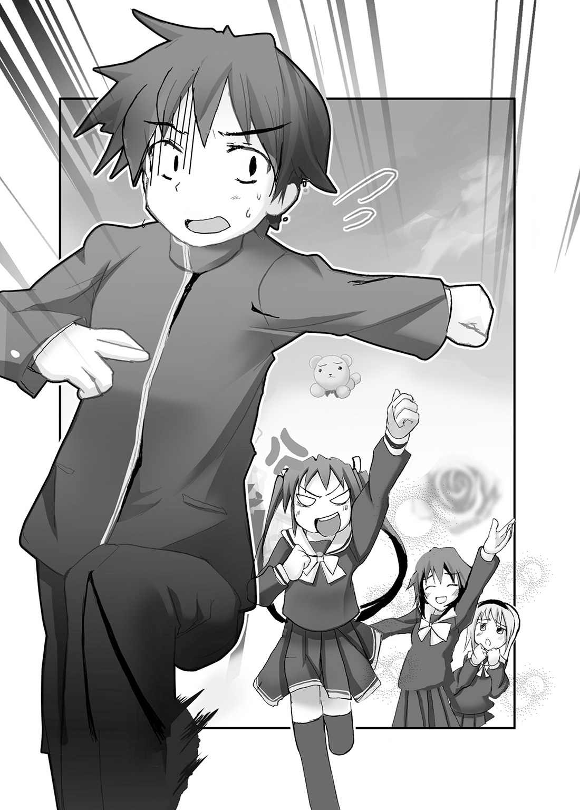

| AKUMAで少女 (HJ文庫) | |
| わかつきひかる | |
| (2007) | |

プロローグ
滝 沢 僚 にとって毎日は、いたって平和なものだった。
男にしては低い背に、不細工ではないがハンサムとはいえない顔だち。
成績もスポーツも中ぐらい。自分がいかに凡 庸 な男かわかっているから、高望みをせずほどほどに毎日を過ごしている。
まあまあ幸せで退 屈 で忙 しい、高校二年の十七歳 の春。
今日も明日もあさっても、日々はかわりなく過ぎていくはずだった。
あの事件が起こるまでは......。
誰かが肩 を揺 すっていた。
「僚、起きてよ。僚」
眠 りの縁 から浮 かびあがってきた僚は、掛 け布 団 を抱 きしめながら、ごろんと寝 返 りを打った。
「むにゃ......」
自分の身体から、フローラルシャンプーと女の子の体 臭 が入り交じった甘 ったるい匂 いが立ちのぼる。
――あれ、何だ？ フワフワだなーっ。
自分の身体が妙 にやわらかくなっている。違 和 感 を感じた僚は目をあけた。見慣れない天 井 と照明器具が目に入る。
まっすぐな黒 髪 が、さらさらと首筋に触 れた。
――へ？ な、何だ。コレ？ 何でいきなり......。
おとつい千円カットの店に行ったばかりなのに、髪 の毛が肩をおおうほどに伸 びていて、うなじや頬 にまとわりついている。
僚は起 き抜 けのぼんやりした状態で、自分の髪を指先で持ってつんつんした。頭皮が引っぱられる感 触 が、確かに自分の髪だと伝えてくる。
まだ夢を見ているのだろう。
寝 直 すつもりで目をつぶった瞬 間 、聞き慣れた声が、ドスの利いた調子で響 いた。
「僚、早く起きろっ！ 僚っ!! 」
両親は長期出張中だ。彼はひとりっ子だから、寝ている自分を起こすのは、隣 に住んでいる如月 ゆり絵しかいない。
ゆり絵は保育園から小学中学高校とずっと一 緒 の幼なじみ。かててくわえて今はクラスまで同じという腐 れ縁だ。
ふたりは朝、ゆり絵の家の前で待ち合わせて、一緒に学校に行く。
ごくごくごくごくごくごくたまに、僚が寝 過 ごすことがある。そういうときゆり絵は、室外機の裏に隠 してある鍵 を使って勝手に家に侵 入 し、寝ている僚の頭を蹴 り起こす。
「起きるっ、起きるから蹴るなぁっ。ゆり絵ぇっ！」
甲 高 い少女の声が自分の喉 から響いた。
――えっ、今の、ゆり絵の声だったよな......。
僚はがばっと上半身を起こした。
自分を見つめている自分の顔と目が合った。いつもの青いストライプのパジャマを着て、寝 乱 れてぼさぼさの髪 型 をしている。
「ええっ。僕っ？ 僕がいる！ ど、どうしてっ？ ドッペルゲンガーッ!? 」
「僚ってほんとうにバカねっ！ ここがどこか、自分が何か、わかんないのっ!? 」
自分の顔が自分の声で自分を叱 りつけ、哲 学 的 な質問を投げかける。
僚は、見知らぬ部屋の見知らぬベッドの上で寝 ていた。女の子が好きそうなリリカルな小物が、ごちゃごちゃにあふれたラブリーな部屋だ。雑然とした印象なのは、ものがありすぎるせいだ。
ベッドサイドに、赤いリボンを首に巻いた茶色のテディベアが置いてある。
カーテンの小花模様とフリルつきのレースのカーテンが、この部屋の主が少女であることを伝えてきた。
「えっ？ ベッド？ な、なんで？ ぼ、僕、布団に寝てたのに。なんだ？ この散らかった部屋は？」
「散らかってて悪かったわねっ！」
目の前の自分は、腕 組 みをしてツンと顎 をあげた。
その口調は......。
その仕草は......。
「もしかして、ゆり絵？」
「そうよ。今ごろわかったの？ はい、鏡っ！」
自分の姿をしたゆり絵から手鏡を渡 された僚は、鏡を見て絶 叫 をあげた。
「ぎゃあぁあああっ！ な、何だっ、何だよぉっ、何で僕、ゆり絵になっているんだよぉっ」
鏡の中にいるのは、はかなげな容姿をした美少女だった。
寝るときは髪 をほどくのだろう。黒 髪 はツインテールに結わえておらずとき流したままだ。起 き抜 けの顔に驚 いた表情を浮 かべている。ピンク色の、小花模様のパジャマ姿だが、確かにゆり絵だ。
鏡を持っていないほうの手で、ほっぺたや胸やお腹をパタパタするが、自分の体とはぜんぜん違 うふわふわの感 触 が返ってくるばかり。顔だけではなく、体まで完全に女になっている。
「私だってびっくりしてるんだからねっ」
ゆり絵はツンツンした口調で言い放った。
「悪 魔 がね、魂 を取 り替 えたのよっ!! 」
第１章 悪魔が魂を取り替えた？
それは、如月 ゆり絵が、そろそろ寝 ようかと思い、洗面所で髪を梳 かしていたときのこと。
「うーん。やっぱ、分け目んとこ、ハゲてきた気がするなぁ。ツインテールがよくないのかな。でも、この髪 型 、気にいってるのよねぇ......」
ひとり暮らしも同然の生活をしているせいで、習慣になっているひとりごとをいいながら、これまた習慣になっている合わせ鏡をして、後頭部を洗面所の鏡に映す。
学校に行くときは、ストレートロングの黒髪をツインテールに結っているので、後頭部のわけ目の部分が、日ごとにくっきりしていくのが気にかかる。
右手にブラシ、左手に手鏡を持ち、髪の状態をチェックする。
ゆり絵は鏡に映る自分に見とれた。
――ああ、私は今日も綺 麗 だわ......。
大きな瞳 も、長いまつげも、形の良い鼻 梁 も最高に美しい。ぽってりした唇 と、桃 のような頬 もそんじょそこらのアイドルには負けないぐらいに形が良い。
顔以外にも、自分の身体はお気に入りのカタマリだ。
鎖 骨 のクボミ、まっすぐな黒 髪 、キュッとくびれたウエスト。とくに自 慢 は、お椀 を伏 せたようなまあるく綺麗な形をしたおっぱいだ。サイズはなんとＦカップ。プロポーションの良さはほれぼれするほどで、グラビアアイドルにだって負けていない。
――ほんと私って、美少女よねぇ。天使みたいだわ。きっと性格の良さが外見に現れるのね。
そんなことを思っていたときのことだった。
「あれっ」
手鏡の奥 に、小さな茶色い点がぽつんと生まれた。
茶色い点は、少しずつ大きくなり、次第に形を明確にしてきた。
クマのぬいぐるみだった。
小さな手足を動かして、とてちてとてちて、こちらに向かって走っている。
「あれれ？」
ぬいぐるみは次第に大きくなり、やがて手鏡と同じぐらいの大きさになった。
テディベアだ。茶色のクマのぬいぐるみ。首に赤いリボンを巻いている。
そして、その愛らしいテディベアは、手鏡をしゅるんと飛び出して、洗面所の鏡へ向かってジャンプした。
「何？ これ？ おもしろいーっ」
ゆり絵はきゃーっと嬌 声 をあげながら、ブラシを勢い良く前後に振 った。
そんなつもりはなかったが、テディベアの頭部をブラシの背で殴 打 する結果になった。
クマは「ゲッ」と踏 みつぶされた蛙 のような鳴き声をあげ、ゆり絵の足もとにびたっと落ちる。
あおむけに落ちたぬいぐるみは、きゅーっとかわいい声をあげて目を回している。
手鏡から出てきたにしては、大きいぬいぐるみだった。三十センチぐらいはあるだろうか。小さな女の子が抱 き締 めたり、叩 いたり蹴 ったり噛 みついたりするにはころあいの大きさだ。
ぬいぐるみの手足がピクッとふるえた。
彼（？）は、小さな腕 を動かして起きあがると、床 を蹴って飛びあがり、洗面所の鏡に向かってジャンプした。
鏡にべたんとぶつかって、地球の重力に負けてしまい、しゅるしゅると滑 り落 ちる。
「えらいこっちゃっ！ えらいこっちゃっ!! 」
ぬいぐるみの喉 （？）から、かわいらしい悲鳴が漏 れる。
彼は錯 乱 状態で、走 り幅 跳 びの選手のように鏡に向かってジャンプして、びたんと当たって滑り落ちることを何度となく繰 り返した。
「あかんっ、入れへんっ！ どないしょうっ」
ぬいぐるみは、洗面所の床に力無く座りこむと、おいおいと泣き始めた。
黒い目から出た米 粒 ほどの涙 が、放物線を描 きながら、洗面所の床に落ちる。
――なんかこれ、壊 れたおもちゃみたい。おもしろーい。
あっけに取られて見ていたゆり絵は、くすっと笑い、スリッパを履 いた足先でツンツンした。
「なんてことをするのやっ、あんたはんのせいやーっ。鬼やーっ。悪 魔 やーっ。もうあかんっ、あかんのやーっ」
ぬいぐるみはモコモコの手を動かして、ゆり絵の足の甲 をポカスカと殴 った。
痛くはなかったが、こんなにかわいく天使のように美しい私を悪 鬼 呼ばわりとはゆるせない。
「なんで私のせいなのよ？ あんたが勝手にやったことでしょ？」
ゆり絵は、ぬいぐるみをすくいあげるようにして蹴 った。
あっさりと蹴り飛 ばされたクマのぬいぐるみは、ぽーんと空中を飛びながら、お風 呂 場 のドアに当たり、ぎゃっと悲鳴をあげて跳 ね返った。
そのまま空中でぷかぷかと浮 かびながら、ゆり絵に向かって罵 詈 雑 言 をぶつける。
「ひいいっ。恐 ろしいっ、あんたはんはほんまに人間なんかっ？ 悪魔よりもよっぽど悪魔やおまへんかーっ」
「あんたこそ何よ？」
「ワシはデビルベアやっ!! 悪魔やぞっ!! 」
ゆり絵ははっとして洗面台にはめこまれているデジタル時計を見た。
二時五分を示している。
どこかで聞いた都市伝説。
午前二時ぴったりに合わせ鏡をすると、鏡の中を悪魔が通り抜 ける。
ぬいぐるみは、鏡に映っていなかった。ほれぼれするほど美しい自分の顔が映るばかり。
「そう。君、悪魔なの？」
ゆり絵は、ふふふと不気味に笑った。
悪魔には、その様子は、怖 がっているように見えたのだろう。
「その通りや！ どうやコワイやろっ!! 恐れ入ったかっ!! ワシにはすごい魔 力 があるんやぞっ!! 」
デビルベアはちいさな腕 を腕組みの形に交差すると、ぬいぐるみの胸を張り、えらそうにふんぞり返る。
「君、これからどうするつもり？」
「それやっ！ 時の潮が満ちるときに、もう一度合わせ鏡をして欲しいんやっ。あんたはんはワシをドツける（殴 れる）ほど人間離 れしとるから、あんたはんが合わせ鏡をしたら時の道が開く。道さえ開いたら、ワシは魔 界 に戻 ることができるんやっ！ それまでワシは、この世界で、ぬいぐるみのフリを続けるさかいに」
「それはいつよ？」
「人間の時間感覚でいうと、七日後の午前二時やな」
ゆり絵は目の前でホバリングするぬいぐるみをむんずとつかんで胸に抱 くと、スリッパをバタつかせながらキッチンに行った。乳 房 の谷間に挟 まれたぬいぐるみは、おっぱいの谷間のふんわりした感 触 にあてられて、モゾモゾと身体をくねらせている。
ゆり絵は、ぬいぐるみを調理台に座らせると、悪 魔 もふるえあがるほどの冷たい声で言い放った。
「ねえ、君？ 交 換 条件って知ってるかな？」
「な、何のことや？」
「私にお願いをするからには、君も私のお願いを聞いてくれるよね？」
「そ、そやな。か、簡単なことやったら......ひ、ひとつぐらい聞いてやっても......」
「三つよ。三つ望みを叶 えるの」
「なんでやねん？」
「悪魔っていうものは、三つのお願いを叶えるために出てくるものでしょ？」
「そ、そんなん古いわっ......。人間の魂 なんか、いまどき何のやくにもたたへん」
「うん。私も、君に魂をあげるつもりはぜんぜんないから」
ゆり絵は、流し台の引き出しからキッチン鋏 を取り出すと、ぬいぐるみの前でちゃきっと刃 を鳴らして開いて見せた。
「君の身体って、布と綿でできてるのよね？」
美少女の全身から、殺気が煙 のように立ちのぼる。
「ひいぃいぃ～、な、何をするつもりなんやーっ」
「君の手足、鋏でチョッキンすれば、簡単に切り落とせると思うのね。綿をほじくり出して、外側の布を切り刻んでやったらどうなるかな？ それで綿はね......」
ぬいぐるみは、恐 怖 に顔を歪 めると、調理台を蹴 って空中に飛びあがった。
ゆり絵は、手を伸 ばすと、あっさりとぬいぐるみをキャッチした。
「私から逃 げられると思っているの？」
じたばたと暴れるぬいぐるみの首のリボンを両手で左右にひっぱって首を絞 め、げんこつで顔を叩 き、足を持って調理台にバンバンと打ち付け、モコモコの毛玉を指先でむしる。
「ひぃいいっ、ひぃっ、ひぃいいっ。痛い痛いっ、痛いっ。きゅーっ。ハゲるハゲるハゲるぅーっ」
ぬいぐるみは涙 目 で悲鳴をあげる。
キッチン鋏は使わない。
せっかく飛びこんできた、ネギをしょったカモだ。
殺してしまっては元も子もない。
「きゅーっ、ぎょえーっ。うわーっ、な、何さらすんやーっ。きゅーっ」
ドツクたびにキューキュー鳴くのが、あわれさを誘 っておもしろい。しょせんぬいぐるみだから、ゆり絵でも脅 すことができる。
「ぎゃーっ、タオルタオルっ、やめてくれーっ」
ゆり絵は左手でクマの首を押 さえたまま、ぬいぐるみの目をのぞきこんだ。
「私のお願い、聞いてくれるよね？」
くたびれ果てたデビルベアは、泣き顔で訴 えた。
「ぼ、暴力反対......ワシがあんたはんに何をしたというのや......」
「私の名前は如月ゆり絵よ。あんたじゃないわ」
「ゆり絵はん。お願いごとやったらひとつだけ聞くから、どうかこらえてつかあさい。ワシ、ワシ、ゆり絵はんがコワイんやーっ」
「三つよ。望みは三つ。全部叶 えるのよ」
「そんな......。えげつないやないか......。二つや。二つまでなら......」
「三つだって言ってるでしょ？」
「そんなあこぎな......ゆり絵はんは大 阪 商人か......」
ゆり絵は、にっこりと笑いながらガスの火をつけると、デビルベアからむしり取った毛を火にくべた。
フワフワした茶色の毛は、ガスの火に焼かれてチリチリと踊 りながら、オレンジの光のカタマリとなって、あっという間に燃えカスになった。
「ひぃぃ～」
「君の身体って、よく燃えるみたいね」
天然繊 維 が燃えたあとのきなくさい臭 いと、白い煙 が立ちこめるキッチンに、針でつつけば割れそうなほどの緊 張 感が漂 う。
「そのまま火にくべても、すぐには燃えないと思うのよ。焼 け焦 げたままっていうのはイヤでしょう？ だから、手足を切って、綿だけ燃やしてから、外の皮を切りきざんで、ひとつひとつていねいに燃やしてあげる。綺 麗 に燃えると思うのよ」
デビルベアは、米 粒 のような涙 をぽろぽろとこぼしながら、ガクガクブルブルふるえている。
ゆり絵の本気を感じ取ったらしい。
「私のお願いを三つ、聞いてくれるわね？」
茶色のクマのぬいぐるみは、恐 怖 に顔をひきつらせたまま、コクコクとうなずいた。
「よかった。うれしい。ありがとうっ！」
ゆり絵の三つのお願いは身の上話から始まった。
「私って、薄 幸 の美少女なのよ。母は幼いころに死んじゃったし、父は仕事仕事で家を空けてばっかりなの。今なんか、病気の私を置いて、短期出張しているのよ」
これはウソだ。ごく普 通 の父親で、ごく普通に愛情を注いでくれている。思春期の娘 にとって父親はうざったい存在で、留守がちなのはむしろらくちんだと思っていた。
「はあ。じゃあ、ひとつめのお願いは父の愛どっか？」
「話は最後まで聞きなさいっ！ 私ね、生まれつき心臓に欠 陥 があるの」
「はぁ......。さいでっか。ゆり絵はんって、殺しても死なん感じやけどなぁ......」
悪 魔 のため息は華 麗 にスルーして、ゆり絵は両手で頬 を押 さえ、よよよとばかりに泣 き伏 した。
「二十歳 まで生きられないって言われているの。ああっ。私って、何って不幸なのかしら......」
これもウソ。心臓病はほんとうだが、手術を受けさえすれば健康体になれると、乳児の頃 からかかっている医者が太 鼓 判 を押している。安全な手術で、成功率は九十五パーセントだそうだ。
「はぁ。じゃあ、一つ目のお願いは健康な身体でっか？」
「その通りよ。よくわかっているじゃない？」
「で、二つ目のお願いは？」
「私、僚 をいじめてしまうのよね」
「はいっ？」
「かまってあげようとするのに、ついついいじめてしまうのよ。僚はきっと、私のこと、黒い女だって思ってると思うのよ」
「僚って誰でっか？」
「隣 の家の幼なじみ。滝 沢 僚」
「その僚はんは、健康な体をしてはりまっか？」
「うん。健康よ。顔も勉強もスポーツも身長もたいしたことはないけど、体は健康みたいね。丈 夫 なのがとりえって僚のお母さんが言ってたわ......ま、そんなことはどうでもいいけど、私は僚の誤解を解きたいの。私がほんとうは、こころやさしくて女らしいことを知らせたいのよ」
「ゆり絵はんがこころやさしくて女らしいかどうかは......」
「何か言った？」
「ひぃぃっ～、な、なんでもおへんっ、ようは僚はんにゆり絵はんのことを理解させたらよろしおすな？」
「そうよ」
「ゆり絵はんは僚はんが好きなんでっか？」
「その通りよ。私は僚とラブラブになりたいの。僚をね、いっぱいさわってやりたいわ。僚に私のハダカを見てもらって、いっぱいいっぱい触 られたいの！」
ゆり絵は胸を両手で抱 くと、恋 する少女の表情でうっとりと小首を傾 げた。
空中にホバリングしている悪 魔 のぬいぐるみは、小さな手を顎 に置くと、フムフムとうなずいた。
「健康な身体、理解、ラブラブおさわりやな。なんや。簡単やおへんか。まとめて一度ですみそうやな......」
「三つとも、全部叶 えるのよっ！ わかった？」
「わかりましたがな。ほんまに全部叶えたら、七日後に合わせ鏡をしてくれはりますねんな？」
「武士に二言はないわ。私が満足したらちゃんと合わせ鏡をするわよ！」
ゆり絵はんは武士でっか？ というツッコミはなかった。
クマのぬいぐるみはまじめな顔をして、考えこんでいたからだ。そして、小さな手でゆり絵の背中を押 して、部屋に戻 るように促 す。
「ほな自分の部屋に行って、寝 てもらえまっか？」
「私が寝てる間に、悪さしちゃダメよっ？」
「なんでワシがゆり絵はんに悪さができますんや。悪魔よりも悪魔っぽい性格してからに～。ああ、ワシ、なんでこんな目に遭わなあかんのや。ちょっと近道しようと思っただけやのに」
「交通事故みたいなものでしょ。ぶつくさ言わない」
「へえへえ。ゆり絵はんの望み、三つとも確かに叶えますよって。瞳 を閉じまひょか。呪 文 が終わるまで、目を開けたらあきまへんで」
「もっと簡単にできないの？ こう、パパッて手品みたいに」
「まあそういわんと。これも演出効果ちゅうもんです」
ゆり絵は、自分の部屋のベッドに横になり、瞳を閉じた。
彼女の上空でホバリングしているぬいぐるみの口から、複雑な呪文が歌のような旋 律 を帯びて流れる。
人間の言葉ではない悪魔の詠 唱 。
やがて呪文が終わり目を見開くと、如月ゆり絵は滝沢僚になっていた。
☆
「そ、そんな......」
滝沢僚は頭を抱 えた。
「悪 魔 が魂 を入れ替 えた、だってぇ？ なんでだよぉー？」
「私だって知らないわよ。いきなりだったのっ。悪魔が出てきて、魂を入れ替えたのっ！ 交通事故みたいなものだと思うわっ！」
信じられるものではない。だが、僚はたしかにゆり絵の部屋にいる。自分が目の前にいて、彼の身体はゆり絵になっている。
今すぐパジャマを脱 いで全 裸 になり、ほんとうに身体が全部女になっているのか見てみたいが、ゆり絵が目の前にいる状態ではムリな話だった。
「悪魔はね、こう言ったの。ふたりがラブラブになれば、魂が戻 るって」
「ふたりって、僕とゆり絵のことかよ？」
「とうぜんでしょ」
「何で？ どうしてっ？」
「そんなの私にわかるわけないでしょっ！」
自分の姿をしたゆり絵は、腕 組 みをしてツンと顎 をあげた。
「どうすればラブラブになれるんだろ？」
「どうすればですってぇっ？」
ゆり絵の顔色がかっと赤くなった。ムスッとして、怖 い表情を浮 かべる。みけんに立ったアオスジがピクピクしている。
――あれ、何だ？ なんで怒 ってるんだ？ わけわかんね......。
「わかんないから聞いてるんだよぉっ」
「......知らないっ！」
ゆり絵の機 嫌 はいよいよ悪くなるばかりだ。
頭から湯気が出そうな勢いで怒りまくっている。
「僚は私が嫌 いなのっ!? 」
「嫌いとか好きとか言うより、信じられないつーっか、信じられないつーっか、信じられないつーっか」
「もう、キズが入ったゲームＣＤみたいに同じコト何回も言わないでくれるっ!? 信じられないのは私も同じよっ。ラブラブになれば戻るって悪魔が言ったんだからっ、キスすれば戻るかもよっ！」
「そ、そうか......そうだよな......じゃあ、キスしようか......」
僚は、半信半疑のまま、ベッドから降りた。
裸足 の足がフローリングの床 を踏 むひんやりした感 触 にとまどってしまう。ゆり絵の外見をしたこの身体は、確かに自分の意志が動かしている。
「うん。そうね。キスしよ」
僚の姿をしたゆり絵は、瞳 を閉じて、顔を仰 向 かせた。
僚は、自分を抱 き寄 せて、唇 にキスをしようとした。
僚とゆり絵の身長はほとんど同じ。姿勢が悪いぶん、むしろ僚のほうが背が低く見えてしまう。
だから、女の身体をしている僚が、男の体をしているゆり絵にキスをするのは、簡単な行 為 のはずだった。
――うう。できねーっ。
自分にキスするのは、ナルシストでもない限り難しい。
中身はゆり絵で外見は自分とはいえ、男を抱き寄せてキスするのは、ゲイでもないかぎりムリだ。
僚はゲイでもナルシストでもなかった。
いたって平 凡 な、ごく普 通 の少年だった。
ましてまだ混乱状態で、悪 魔 が魂 を取 り替 えただの、ラブラブになれば魂が戻 るだの、信じられないでいるときだ。
「ごめんっ。できない......」
僚は、ゆり絵（自分）の肩 を両手でつかみ、謝罪した。
「キスできないんだっ。ごめんっ」
ゆり絵は目を見開いた。怒 髪 天をつく、という表現がぴったりの、恐 ろしい表情を浮 かべている。
「私がやってあげるわよっ!! 」
ゆり絵は僚に足 払 いを掛 けると、柔 道 のワザのように彼を仰向けに転がせた。
「ぎゃーっ」
後頭部をフローリングの床 にしたたかぶつけて悲鳴をあげる僚を、馬乗りになって押 さえこむ。
「うわーっ、うわ、うわ、うわーっ」
子供の頃 によくやった（させられた）プロレスごっこだ。
僚は、心臓の悪いゆり絵に負担をかけるのがイヤで、ゆり絵のなすがままになっていた。
コブラツイストだの十文字固めだの、容 赦 なくワザを掛けるので、僚は苦痛のあまりギャンギャン悲鳴をあげ、最後には大泣きして許してもらう。
だが、今回は違 っていた。
ふたりの魂は入れ替わっている。
はかなげな美少女を、同い年の少年が力ずくで押さえこみ、唇 を奪 おうとしている。
ましてふたりは小学生の子供ではなく、すらっと伸 びた手足をした十七歳 の高校生だ。
少年が少女を犯そうとしている図そのもので、非常にアブナイ光景だ。
「やめろっ、いやだぁっ、いやぁっ!! 」
僚は抵 抗 した。首を左右に振 り、身体を悶 えさせ、ゆり絵をふりほどこうとする。
だが、女の身体は、まして心臓に欠 陥 のある幼なじみの身体は、彼の命令通りに動かない。
「うわーっ。やめてくれーっ。助けてくれーっ。タオルタオルタオルッ！」
僚は、偶 然 にもデビルベアと同じ悲鳴をあげていた。自分に襲 われる恐 怖 にふるえあがり、身体中の皮 膚 にサブイボが出て、嫌 悪 感のあまり髪 の毛が逆立つ。
腕 を押さえていたゆり絵の腕の力がフッと緩 む。
「やめてあげるわよッ！」
体を起こしたゆり絵は、ほんの一 瞬 泣きそうな顔をした。
自分の顔がクシャッと歪 み、頬 を伝っていく涙 の雫 が見えた。
ゆり絵は片手で口をおおうと、バタバタと駆 けだして部屋を出ていった。
泣き顔を見られたくなかったのだろう。
埋 もれていた記 憶 が掘 り起 こされる。
☆
「邪 魔 しないで」
小さなゆり絵が、止めようとする僚の手をふりほどく。
寒い日だった。
グレイに濁 った空から、灰色の雪がちらちらと落ちる。真冬で、冷えこみはことのほか厳しくて、まるで冷蔵庫の中にいる気分だった。
じっとりした水気の多い重い雪は、容 赦 なく体温を奪っていく。今にも雨にかわりそうで気が気ではない。
「だめだよ。ゆり絵ちゃん。もうやめようっ」
ゆり絵が遼 を迷 惑 がっていることはわかっていた。
僚はそれでもゆり絵を止めた。
止めなくてはならなかった。
ゆり絵は体操服を着た薄 い肩 を、ハーハーとあえがせている。吐 く息がいかにも白い。
これ以上走ると、ゆり絵が発作を起こして倒 れるのは火を見るよりも明らかだ。
あれは小学校の体育の授業。
小学二年の冬だったろうか。
マラソン大会の日で、校庭を何周も何周もぐるぐると回らなくてはならなかった。
「もう走っちゃだめだってっ」
「僚くんっ、邪魔しないでって言ってるのよっ！」
ゆり絵は真っ青な顔をして、フラつきながらも、走っていた。歩いているほどの速さしかなかったが、それでもゆり絵は駆 けていた。ヨロめいて、倒れそうになりながら、必死に足を運んでいる。
ゆり絵がムキになっている理由は、僚にだってわかっていた。
――ゆり絵ちゃんは休めるからいいわね。マラソンなんてやりたくなーいっ。寒いからイヤだなぁっ。
――あーあー、私も心臓の病気になりたいなーっ。
同級生の聞こえよがしの悪口に、ゆり絵は顔色を変えていた。
「あんなこと気にするなよっ!! 」
「あんなことって何よっ。気になんかしてないっ。私は走りたいから走るだけよっ！」
ゆり絵は、あの頃 から恐 ろしく気が強かった。今思うと、生まれつきの心臓病が、彼女を強くさせたのだろう。
「だめだっ。やめろっ」
止めようとして伸 ばした手に、興奮状態のゆり絵が噛 みついた。
手のひらにギリギリと食いこむ歯の痛さと、ゆり絵の口 腔 の熱くぬめった感 触 は、今でもはっきり覚えている。
「痛いっ、痛いよっ。ゆり絵ちゃんっ。やめてぇっ」
僚が泣きながら訴 えると、ギリギリと歯を立てていたゆり絵が、ようやく唇 を離 してくれた。
ゆり絵は、ほんの一 瞬 だが、泣きそうに顔を歪 めた。
真 珠 のような涙 がぽろっと落ちる。
「やめてあげるわよッ！」
だが、遅 かった。ゆり絵は次の瞬 間 、力無く座りこみ、両手で左胸を押 さえて、ゼーゼーと息を荒 げた。発作を起こしたのである。
☆
――同じだ。あのときと......。
気の強いゆり絵が、ほんの一瞬浮かべた涙。
コブラツイストを掛 けられた僚が苦痛のあまり号泣しても、キャーキャー笑い転げてしまう悪 魔 みたいな女の子だったから、あのときに見た泣き顔は、鮮 明 な記 憶 として残っている。
――僕、ゆり絵を傷つけた？ なんでだ？ 自分の顔にキスできないって言っただけなのに......。
混乱したままで立ちあがり、廊 下 にまろび出たゆり絵を追いかける。
洗面所の横、トイレの窓から明かりが漏 れていた。
――ゆり絵、泣いているんだ......。トイレで、ひとりで......。かわいそうに......。
ノックをしようとしたときのことだった。
ドア越 しに、ゆり絵のはしゃぐ声が聞こえてきた。
「きゃーっ。僚のこれっておっきいねーっ」
「あ、あの......あのその......ゆり絵？」
「わー、わわぁっ。おっきしたぁっ!! 違 うわ。×起だわっ。きゃーっ、これが×起なんだーっ」
ゆり絵が何をしているのかは、わかる。
僚も、ゆり絵がいなかったらやっていただろう。
鏡の前で服を脱 いで全 裸 になって、あちこち見てさわって......。
異性の身体になった自分を確かめてみたいと思うのは、男も女も同じなのかもしれなかった。
ましてゆり絵はトイレの中だ。
涙 を拭 うために入ったにしろ、好 奇 心 に駆 られてついついさわってしまってもしかたがない。
ゆり絵の気持ちはわかる。わかるのだが......。
「うわぁっ。おもしろーいっ。動くーっ。わわわっ。カチカチになってきたっ」
僚は、その場に膝 をついた。
男にとって、自分の持ち物を女の子に論評されるほど、恥 ずかしいことはない。
穴を掘 って隠 れたい気分だ。
「あ、こすると気持ちいいんだねっ。よーし、ごしごしっと。あー、なんか気持ちいいーっ。すっごくすっごく気持ちいいねーっ」
――ゆり絵のやつ、自家発電、してる......。
「ゆり絵......」
――止めなきゃ......。鍵 壊 して......ドア開けて、ゆり絵を......止めるんだ......。
――だ、だめだ。今、ドアをあけたら、ゆり絵に押 し倒 される......。
自分が自分に犯されている様子を想像すると、雪白の肌 にじんましんが浮 かび、身体全体が痒 くなった。
「うわぁあああぁあっ!! 」
僚は悲鳴をあげ、身体をくねらせながら、二の腕 や背中を掻 きむしる。
――ロストバージンは痛いっていうしな......。
「イヤだっ。イヤだっ。自分に犯されるのはイヤだぁっ!! 」
僚は、黒 髪 をふりみだして苦 悶 した。
彼自身はわかってないが、花 柄 のパジャマを着た美少女がじれったそうに上半身をうねくらせる様子は、おそろしくかわいらしい。
「よーしっ、いい感じねっ。気持ちいいーっ。しっかし、僚のって、モゾモゾ動いておもしろいやーっ」
「ゆ、ゆり絵、その、せ、せめて、実 況 中 継 は、や、やめてくれ......っ、お願いだよ......。ゆり絵......も、もうーしないでよぉっ」
僚はトイレのドアを遠 慮 がちに叩 きながら泣きじゃくった。
自家発電を止めたい。それも今すぐ。だが、ゆり絵に犯されるのも怖 い。それが、まるでトイレを我 慢 している人間が、弱々しくノックをしているような雰 囲 気 を演出する。
「どうしたの？ 僚、オシッコなの？」
ふいにドアが開き、自分が顔を出した。ムスッとした顔をしている。
自家発電を途 中 で止められて、不 機 嫌 そのものという表情だ。だが、僚を見る目には、心配そうな色があり、犯されることはなさそうだ。
――よ、よかった。ゆり絵、やめてくれたんだ......。
「どっか体調が悪いの？ 発作......じゃないわね？」
僚は返事をすることもできず、その場にへたりこんだまま呆 然 としていた。あまりのなりゆきにひどいショックを受け、うなだれた頭をあげることさえできない。地球の重力が倍になった気分だ。
「そんなところに座りこんでどうしたのよ。うざったいわねっ！ 泣かないでよ」
「えっ。僕、泣いてる？ ほ、ほんとだ......」
ゆり絵に指 摘 されてはじめて気がついたが、僚は泣いていた。
涙 もろいつもりはなかったし、ゆり絵もめったに泣くほうではないが、涙があふれてとまらない。
「ゆり絵、ひどいよ......」
僚は、両手を床 について、ゆり絵に向かって必死な口調で言った。イヤイヤをするたびに黒 髪 が揺 れ、パジャマを着た肩 先 をさらさらなでる。
本人は意識していないが、膝 小 僧 をくっつけて、ふくらはぎをハの字に開いた女の子座りになっていた。
「ゆり絵、ひどいよ......×ナ×ーするなんて、ひどすぎる......ぼ、僕の気持ちも、考えてくれっ。お願いだから......っ」
ゆり絵は、顎 に手を置いてじっと僚を見ている。小首をかしげた仕草は、まさしく女の子だ。
「うーん。私って、ほんとかわいいなー。私が男だったら、犯したくなっちゃうな」
「えーっ!? 」
「冗 談 よ。あんまり驚 かないでよ。発作が起きちゃう。あっはっはっ。まさか私が僚をレイプするわけがないじゃない？」
「じょ、冗談？ な、なんてひどい......」
ぶわーっと涙が噴 き出る。
まるで涙 腺 が故障してしまったみたいだ。
「もうっ、うっとうしいわね、男のクセにしっかりしなさいっ。ぐじぐじしてたら犯すわよっ！」
ゆり絵は、脇 腹 に手を置くと、肘 を張ってツンと顎をあげた。
自分の身体が、女の子の仕草をする様子を見ていると、めまいがした。あまりのカマッぽさに、情けなくなってしまう。
――ゆり絵って......ゆり絵って、悪 魔 だ......。
僚はその場に座りこんだまま、両手で顔をおおい、わんわんと号泣した。
――僕、いったい、どうなるんだろう......。
第２章 赤飯なんてやめてくれ
僚は、てきぱきと朝食をつくるゆり絵に見とれていた。
ビジュアルは自分なのだが、中に入っているのが女の子のせいか、雰 囲 気 が違 って見える。
ごつごつした自分の指が、カンカンッと小気味の良い音を立てて卵を打ち付けて殻 を割る。黄色と白の中身がポトンと落ちて、油を引いたフライパンの中をくるくるっと回る。
シュワシュワと音を立てる卵に塩とコショウをパパッと振 り、フライパンにフタをして、その間にコーヒーの粉をコーヒーメーカーにセットする。食パンを半分に切りオーブントースターに入れる。手品師のように見事な手つきだ。
――ゆり絵が料理できるなんて思わなかったな......。
――そっか。ゆり絵ん家 ってお母さんがいないし、お父さんは留守がちなんだよな。
ゆり絵のお父さんは、単身赴 任 をするまえ、僚の両親に娘 を頼 みますと頭をさげていた。そのすぐあとで、僚の両親の仕事が忙 しくなり、出張に出 掛 けてしまったので、ゆり絵を気にかけるのはもっぱら僚の役割だった。
「僚、サボっちゃダメっ！」
「は、はひっ、すみませんっ」
僚はあわてて濡 れタオルを顔に押 し当 てた。
氷を間に挟 んだタオルはかなり冷たいのだが、火照った顔にはちょうどいい。
「君が泣くから、私の顔が腫 れてしまったじゃない？ ちゃんと冷やして、さっぱりした顔で学校に行くのよ。わかった？ ただでさえ私って薄 幸 の美少女キャラなんだから、泣 き腫らした顔なんかしたくないのよねッ！ 私の顔をしている以上、身だしなみはきちんとしてもらうわよッ！」
――薄幸の美少女なんて、自分で言うかよ......。
と思ったが、口に出さない。
僚はゆり絵に指示されるまま、顔の上にタオルを載せ、顔の腫れを取るべく、じっとしていた。
コーヒーメーカーが、あぶくの音を立てながら芳 香 をふりまく。
「顔見せて？ うん。だいじょうぶね。目薬を差したら完 璧 だわ。朝ご飯できたよ。いっしょに食べよう」
「わ、すごい。おいしそうだ......」
テーブルには、目玉焼きとサラダ、トーストとコーヒーの朝食が整っている。窓から差しこむ朝日に照らされて、サラダの緑が鮮 やかに輝 いている。
セーラー服と詰 め襟 のふたりが食 卓 につく。いわずもがなの説明だが、セーラー服の美少女が僚、平 凡 な容姿をした詰め襟の少年がゆり絵だ。
「僚はお砂糖なしのミルク入りだったよね。ミルクは牛乳よ。私はブラックなんだから、コーヒー用のミルクなんかないんだからねッ」
「ありがとう。うれしいよ......」
両親が出張してからは、簡単なものしかつくっていなかったので、ちゃんとした朝ご飯を食べるのは久しぶりだ。
「おいしい......」
目玉焼きを一切れ口に入れた僚は、驚 きの声をあげた。
ぞんざいな作り方に見えたので、あまり期待してなかったのだが、ていねいなやさしい味で、焼き加減もちょうどいい。
――ゆり絵って、あんがい家庭的な面があるんだな。悪 魔 みたいだと思ったけどな......。
コーヒーメーカーからマグカップにコーヒーを注ぐゆり絵を見ながら、幼なじみの意外な姿に目を見張る。
「そう。よかった......。私って食が細いんだけど、食欲が無くても、ちゃんとバランス良く食べるのよ。食べないと肌 に悪いし、疲 れやすくなって大変なんだから」
ゆり絵がかまってくれるのは、自分の身体がかわいいからだと知っていても、世話をしてもらえるのはいい気分で、くすぐったい思いをしてしまう。
「あれっ。なんか、パンがおいしーっ。いっぱい食べれちゃう。そうかーっ。男の体だもんね。うわぁ。なんかっすっごいうれしい。健康な体って、ご飯までおいしく食べれちゃうのね」
目の前に自分がいて、もりもりとサラダを食べる様子は、不思議な光景だった。
ゆり絵の身体は胃が小さいのか、少し食べただけで、お腹がいっぱいになってしまって入らない。
「食べないんならちょうだい」
ゆり絵は、僚の食べかけのお皿をゲットすると、サラダを一 生 懸 命 に食べている。
――僕って、こんな顔をしていたんだ......。あんがいハンサムで男らしいかも。
他人の目で見た自分の顔は、自己評価よりもずっと上に見えた。
「何を見てるのよ？」
「男らしいなって思ってたんだ」
つい言ってしまったところ、ゆり絵の眉 間 が縦筋をつくった。
――ヤバイ。失言だ。
ゆり絵の手がドレッシングの瓶 をつかんだ。中身が半分ばかり入っているドレッシングのペットボトルは、ひゅんと空を飛んできて、僚のおでこにゴツンと当たった。
☆
「おはよ」
「おはよう」
なだらかな登り坂が続く通学路に、高校生たちの明るい声がはじけている。
秋の日差しはうららかで、生徒たちをやさしく包む。
桜 井 坂 高校は、数年前まで女子校だったおかげで、学生のほとんどは女子生徒だ。そのため、今は桜の季節ではないにもかかわらず、通学路はピンク色に華 やいで見える。
通学路の両 脇 で、茶色に染まったはっぱを茂 らせているのは桜の木だ。
春になれば桜の木々は、桃 色 の雲を連ねたような桜の花でピンクに染まる。
僚はゆり絵と、いつものように肩 を並べて歩いていた。
なんだかんだで忙 しく、髪 を結わえる時間がなかったため、ストレートロングの黒 髪 をとき流したままだ。
うなじに触 れるさらさらの髪も、剥 き出しの足にセーラー服のヒダスカートがひらひらと触れる感 触 も、胸を押 さえるブラジャーの圧 迫 感も不思議だった。
下半身がスウスウして、風が吹 くたびに不安感が増し、ついつい内 股 になってしまう。心臓病のゆり絵の身体は、早足で歩くだけでも息が切れるので、どうしても女の子歩きになる。
――ううっ。な、なんか、恥 ずかしい......。スカートって寒いんだなぁ。
うつむき加減の僚と違 い、男になってしまったゆり絵は堂々としたものだ。
ゆっくりと歩く僚に足並みを合わせながらも、胸を張って歩いている。
どこから見ても男にしか見えない。
男なのだからとうぜんなのだが......。
「僚、あんたまだ一回もトイレに行ってないでしょ。我 慢 してるんじゃないの？」
「だいじょうぶだよ」
「トイレはね。ちゃんとしゃがんでするのよ。立ちションはだめよ。オシッコしたらちゃんとアソコをトイレットペーパーで拭 いてね。濡 れたままだとかぶれちゃうのよ。男子トイレに入っちゃダメよ。わかっているわね」
僚は、ゆり絵の恥ずかしい指示に、顔を赤くしてうつむくばかりだ。
――そんなハッキリ言わなくても......。
――ゆり絵には、デリカシーってもんがないのかよ......。
男になったその日に、男性のシンボルをいじってはしゃぐぐらいだから、精神的にはかなり丈 夫 にできてそうだ。
僚はまだ、女の身体になった自分になじめないでいるというのに。
「気分が悪くなったら、保健室に行くのよ。我慢しちゃだめよ。わかった？」
ゆり絵の注意事 項 は、えんえんと続いている。
――あれっ。如月、今日は感じが違うな。髪 型 が違うからかな。
――ホントだ。雰 囲 気 が上品っていうか、丸いっていうか、大人しいっていうか......。
男たちが、ゆり絵の姿をした僚を見て、ウワサしあっている。
僚がうつむきながら歩く様子は、とき流した黒髪が赤く染まった頬 を隠 し、美少女ぶりを際だたせている。
――如月ってさ、べっぴんだけど黒いんだよな。「汚 い手で触 らないでよ」とか、キツイこと平気で言うしさ。
――そうそう。あいつが何か言うと、教室が凍 るよなー。
――最近じゃ、先生もサジ投げてるしな。
――あいつ中身はひでぇけど、外見だけはいいな。
――ああ、そうだな。確かに。黙 っていると美少女だよ。プロポーションもいいし、顔なんか、アイドル歌手並みじゃね？
僚の背中を、いやな汗 が伝う。
――うう。その通りだ。ゆり絵って黒いよな......。
――でも、でもだよ。ひねくれるのは仕方がないんだ。心臓に欠 陥 があるんだぜ。こうやって普 通 に歩いているだけでも、息が切れてしまうんだから。
そんなことを言えるわけもなく、僚は困り果ててうつむくばかりだ。
ちらっとゆり絵の顔を見るが、彼女はしらんぷりをしている。
悪口を言われているのに、そんなこと関係ないわとばかりにとぼけているのは、いかにもゆり絵らしかった。
「おはよう。僚くん。ゆり絵さん」
「おはよう。岡 下 さん」
近所に住む三年生、岡下留 香 が挨 拶 をして通り過ぎる。
「オスカル様ーっ」
後 輩 たちが留香に向かって手を振 った。女の子たちの憧 れの的の先 輩 で、りりしい顔だちと高い背が宝 塚 の男役のようだと評判の麗 人 である。ショートカットの黒 髪 も、スッと伸 びた背中もさわやかを絵に描 いたようだ。
――オスカル様よ。ステキね。今日もりりしくっていらっしゃるわ。お姉様になって欲しいわ。
――ほんとねーっ。岡下先輩のかっこよさはそんじょそこらの男にはたちうちできないわね。
僚が、さすが元女子校だなと思うのは、こういう時だ。
こういうノリは、きっすいの共学ではありえない。
オスカル様は、男の目から見てもきりりとした美少女だが、女っぽさが無く、色気に乏 しい。なるほど女の子の憧れを集める存在だろう。
留香は目だけで笑い、通り過ぎていった。
重い足を動かし、ようやくのことで校舎に入って、ほうとため息をついたとき、ゆり絵がささやいた。
「階段よ。がんばってね」
「そんなおおげさ。平気だよ」
平気ではなかった。
――ううっ、あ、足が、鉛 だ......。
足を交 互 にあげて身体を運ぶという簡単な行 為 が難しい。坂道も苦しかったが、階段はそれ以上に大変だった。
少し階段をあがるだけで、心臓がドキドキと音を立て、すぐに息があがってしまう。
――教室が二階でよかったな。もしも四階だったりしたら、途 中 で生き倒 れてしまったかも......。
そんな心配をしてしまうほど、身体が思うように動かない。
健康な男の体から、心臓病の女の子の身体にいきなり替わってしまったのだから、よけいに苦しく感じるのかもしれない。
「なんか体が軽いわ。階段あがるの、ぜんぜん平気。心臓が丈 夫 だとこんなに体がラクなのね......外を走り回りたい気分だわ」
顔を青くさせている僚の横で、ゆり絵はさっぱりした顔をしている。
健康な男の体がうれしくてたまらないという感じだ。
「ごめん。もっとゆっくり」
「もうっ。しっかりしてよねっ。どんなに苦しいときでも、顔に出さないのが私って女なのよっ」
――ゆり絵って男前だな。黒いけどな......。
☆
教室に入ってすぐ、誰かの肩 がドンッと当たった。
「きゃっ」
僚はたまらず尻 餅 をついた。
黒 髪 ストレートのはかなげな美少女が、悲鳴をあげながら倒れこむ様子に、男どもがおおおっと妙 な歓 声 をあげる。
女の身体は、まして心臓に欠 陥 のあるゆり絵の身体は、いらだたしいほど繊 細 にできていて、この程度の衝 撃 でもあっさりと尻餅をついてしまう。
教室の僚の席に学生カバンを置いたゆり絵が、心配顔で僚を見ながら通り過ぎていく。トイレにでも行くのだろう。
通学途 中 はいろいろなことをしゃべっても、教室の中では目を合わすことさえしないのが、なんとなくの習慣になっている。
「ごめんねっ。如月さん。だいじょうぶ？ まさか心臓じゃないわよね」
クラスメートが心配そうに顔をのぞきこんできた。
藤 宮 沙 希 、学園のマドンナだ。
ゆり絵と競うほどの美少女だが、快活でやさしくて勉強もできて性格も良いと、男たちに評判だ。
なにを隠 そう、僚のひそかなあこがれの存在だ。
「だいじょうぶだよ。藤宮さん」
僚は自分で立ちあがり、手のひらでスカートについたホコリを払 った。
沙希はけげんそうに小首を傾 げる。
「あなた、ほんとうに如月さん？ 雰 囲 気 が違 うわ」
「髪 型 を変えたせいじゃないかな。僕、じゃなくて、私は私よ。どうしてそんなことを言うの？」
「だってさ、如月さんって、こういうとき、手をピシャッて振 りほどいて、触 らないで、とかなんとか言って、こう、ツンッてそっぽを向くじゃない？」
――ああ、言うよなぁ。ゆり絵のやつ。
ゆり絵は、同情されるのを極 端 に嫌 う。
心臓病のことは皆 が知っているから、何かあるたび腫 れ物に触 れるように扱 われてしまう。ゆり絵は、それが許せないみたいで、キツイ言動をして周囲を凍 らせる。
――謝ったほうがいいかもな......。
僚は、深呼吸をしてから、沙希に向かってぺこっと小さく頭をさげた。
女の子らしく見えるよう、お願いをするように両手を合わせて口に当て、小首をかしげて上 目 遣 いで沙希を見た。
「藤宮さん。今までごめんね」
「ど、どうしたの？ 悪いもんでも食べたのっ!? 如月さんが謝るなんて気持ちが悪いわっ！」
沙希が両手で口を押 さえ、怖 そうに後ずさった。
――ゆり絵って、よっぽどすごかったんだなぁ......。
僚は、顔を赤くさせてうつむいた。
自分のことのように恥 ずかしくなってしまう。
「か、かわいい......っ」
沙希が顔の前で両手を組み合わせ、上半身をくねらせた。
「如月さんって、何てかわいいのっ!! 」
「どうしたの？ 何を騒 いでるの？」
女の子たちが寄ってきた。
「如月さんがごめんって言ったのよ」
「えっ、ウソッ！ 地 震 が起こるかもっ」
「ううんっ。もっとすごいことが起こる前 触 れよっ」
「ゴジラが出てきて放射線を吐 くかもよっ」
「ヤリとかなぎなたが、空から降ってくるんだわっ」
「みんな、伏 せるのよーっ。ここは危険よーっ」
「待 避 よーっ。待避ぃーっ」
――すげぇ言われよう......。ゆり絵の黒さって有名だったんだな。
同級生のノリの良さに感心する一方で、ゆり絵の悪評のすごさにドキドキしてしまう。
人数が女子に比べて圧 倒 的 に少ない男たちは、女の子の輪の外側から、なんだなんだとばかりに物見高く見物している。
「ねえ。藤宮さん。ほんとに如月さんがごめんって言ったの？ やっぱり、ちょっと、信じられないんだけど......」
女の子のひとりが念を押した。
沙希がゆり絵に話を振 る。
「言ったよね。如月さん？」
「うん。そうなの。『汚 い手で触 らないで』って言ったのは、言い過ぎだったと思ってるの。キツイこと言っちゃってごめんね」
僚は、女言葉で言いながら、両手で左胸を押さえ、顔を赤くしてうつむいた。
心臓が心配だったからつい手でおさえてしまっただけだが、ふんわりした乳 房 の感 触 にどぎまぎして顔が赤くなった。
ハタから見るぶんには、美少女が恥じらっている様子に見える。
「か、かわいいっ」
「ほんとねっ。如月さんってかわいいんだっ！ 知らなかった」
女の子たちが僚の肩 や背中にそうっと手を当てる。
強く叩 かないのは、彼女たちなりに、ゆり絵の身体を気 遣 ってくれているからだろう。
「好きよっ。如月さんっ」
沙希が大げさな動作で腕 を広げると、僚をきゅうっと抱 き締 めた。女の子たちが休み時間によくやっているじゃれあいだ。
学園のマドンナのセーラー服の胸に、ぽすっと顔が埋 まる。
――うわぁ。ふにふにのぷにぷにっ！ 藤宮さんって、着やせするタイプだなーっ。
沙希の胸乳は思っていたよりも大きく、ゴムマリみたいだった。予想よりも硬 く、ぷりぷりと張りつめている。
想像以上の破 壊 力 にドキドキしてしまう。
――ゆり絵とどっちが大きいかな......。
顔をわずかに左右に振って、学園のマドンナの甘 い匂 いと、ぷりぷりしたおっぱいの感触を楽しむ。
「やだぁっ、くすぐったいよぉっ。如月さんっ。くすぐってやるッ！ えいえいっ」
「あははっ。やめてよっ。くすぐったいよ」
「私もくすぐってやるうーっ」
別の女の子が参加して、くすぐり大会になってしまった。
少女たちの間から、楽しそうな嬌 声 がはじける。
甘い匂いがたちこめて、息苦しいほどだ。
「やだぁ。やめてよーっ。髪 が乱れちゃう」
自分の喉 からナチュラルに出た女言葉に驚 愕 する。
――うわぁあぁあっ！ しゃべり方が女になっているぞっ！
自分がこんなにも影 響 されやすいタチだとは思わなかった。このまま行くと、一カ月も経てば、ホンモノの女になってしまうかもしれない。
「もう、如月さんってば、かわいいんだからっ」
女の子たちは、ふざけあうとき、こういうことをよくやる。元女子校のせいか、女の子たちのじゃれあいは、おそろしく派手だ。
レズっぽいなあと思って見ていたが、女の身体になってはじめて気が付いた。女の子どうしでじゃれあうと、とても気持ちがいい。男なんていらないと思うぐらいに。
「あれっ、知らなかったな。如月さんって大きいんだねーっ」
いきなり乳を揉 まれ、ゾクリとした戦 慄 が身体に走った。
電気に打たれた気分だった。
皮 膚 がザワリと鳥 肌 立つ。
――き、気持ち、いいぃっ!!
「ほんと？ 私も触 らせて」
「あーっ。ほんとだーっ」
「わーっ、おっきいんだーっ。いいなーっ」
女の子たちの小さな手が、交 互 に僚の乳 房 を揉む。
――さ、さすが、元女子校......。男はやらないぞ、こんなこと。
女の子たちがはしゃぎあっているとき、またやってるという程度の認識しかなく、何をやっているかまで確認しなかったのだが、まさか乳揉みまでしてるとは思わなかった。
エッチな表情を浮 かべていそうで怖 い。
――軽くヤバイ......。
「きゃーっ。いやー。さわらないでーっ」
僚は高い悲鳴をあげ、両 腕 で胸を押 さえてガードした。その場に座りこんでイヤイヤをする。
「かわいいーっ。如月さんかわいいっ!! 」
女の子たちが嬌 声 をあげる。
「滝沢のやつ、何をやってるんだ？」
「あんなことして楽しいのかね？」
窓際の席の男どもが、校庭を指さしながら何か話している。
ドキッとした僚は、そうっと女の子たちの輪から抜 け出して、窓際に行った。
ゆり絵は詰 め襟 のままで、楽しそうに走っていた。
それも、普 通 に走っているわけではなかった。
うさぎとびをしたり、後ろ向きに走ったり、カニのように横に移動したり、反復横飛びのようにぴょんぴょんと横に飛んだり、ハイジのようにスキップをしたりしている。
教室の窓から校庭まで距 離 があるため、表情までは見えないが、ゆり絵がうれしそうな顔をしていることは想像できた。
ゆり絵は鉄棒の前で足を止めた。
手を伸 ばしてバーを持つと、上半身をひっぱりあげる。あっさりと体があがり、そのままくるくると前に回転しはじめる。
――えっ。僕、あんなことできないぞ......。
――いや、やったことがないだけで、やってみたらあんがいできるのかも......。
――知らなかった。僕って、運動神経が良かったんだ......。
ゆり絵は、五回ぐらい回ったところで鉄棒から降り立った。
そしてまた校庭を走り出し、隅 に転がっていたバスケットボールを見つけだしてきた。ドリブルしながらゴールに向かって走り出す。上手ではなかったが、楽しくてたまらないとばかりの様子がほほえましい。
ゆり絵は、ゴールに向かってシュートした。
入らなかった。
すぐに拾い、またシュートする。飽 きずにチャレンジするところが負けん気の強いゆり絵らしい。
「滝沢くーんっ、がんばってーっ」
教室の窓に鈴 なりになった女の子たちが、ゆり絵に向かって声を掛 けた。
ゆり絵は、教室に向かって手を振 った。
十何度目かのシュートをしたときのことだった。
ぽすっ。
ボールがうまくゴールに入った。やったーっとばかりに握 りしめた拳 を前後に振り、その場でぴょんぴょんと飛 び跳 ねる。
「滝沢くーん。かわいいっ!! 」
クラスの女子が叫 んだ。
テンションがあがりきったゆり絵は、教室に向かってＶサインを出して見せた。
女の子がよくやる仕草だが、外見が小 柄 な詰め襟の少年なので、やんちゃそうに見える。
ゆり絵のはしゃぎっぷりを見ていたギャラリーが、ぱちぱちと拍 手 をした。
「滝沢くん。ホントかわいいね。顔はフツーなのにね。お猿 みたいで、すっごくかわいい。前からあんなだったっけ？」
「フツーっていうか、どんくさいっていうか、冴 えない男の子、って感じだったと思うわよ」
――そっか。僕って、どんくさくて冴えない男の子、って評価だったんだ。
自分ではない自分が、女の子たちの注目を浴びているのは、複雑な気分だった。
「あ、また走り始めたよ。ふふっ。後ろ走りしてる。なんかすっごく楽しそう。ガキっぽいね」
「ほんとね。すごくかわいー。前とぜんぜん違 うね。別人みたい」
――はい。その通りです。別人なんです。
悪 魔 が魂 を取 り替 えてしまい、元に戻 る方法はラブラブになることだなんて、いったい誰が信じるだろう。
本人でさえ信じられないというのに。
☆
チャイムが鳴り、先生が出ていくと、教室の空気が一気に弛 緩 する。
授業中の空気から、休 憩 時間の空気へとチャンネルを切り替えたみたいに変わってしまう。
「如月さん。一 緒 にトイレに行かない？」
藤宮沙希に声を掛 けられた僚は、がたがたっと椅 子 を鳴らして立ちあがった。
――来たっ！ 女の子同士の連れションだっ!!
「そんなにびっくりした顔をしないでよ？ 一緒に行こうよ」
――どうしよう。断ろうか。でも、そろそろトイレ行きたいし......。でも、でもでもっ、トイレしたら、×××、拭 かなきゃいけないんだ......。うあぁああぁっ！
拭きたいような、拭きたくないような、トイレに行きたいような、行ってはいけないような気分で、どうしていいかわからない。
顔がかっと熱くなった。
――ゆり絵だって僕のをいじりまくったんだから、少しぐらい僕が触 っても平気だよな！ そ、それに、これは自然現象なんだっ、うんっ！
「うん。そうね。行くわ！」
一大決心で立ちあがり歩き出すと、沙希が手を伸 ばしてきた。ひんやりした小さな手が、僚の手をつかんでくる。憧 れの存在だった学園のマドンナと手をつないで歩いていることに、わくわくと胸が弾 む。
ふたりで廊 下 を歩くと、男どもの視線が集中した。学園のマドンナと一緒にいるのだから、とうぜんかも知れないが、女装している自分を笑われている気分になり、顔を赤くしてうつむいてしまう。
「やだな。みんな見てる。恥 ずかしいな......」
「如月さんがかわいいからよ。ねえ、ゆり絵、って呼んでもいい？ 私のことも、沙希って呼んでよ」
「うん。ありがとう。沙希」
「ああんっ。かわいいっ。そのはにかんだ顔がすっごくイイッ！」
沙希が僚を抱 き締 めてきた。
沙希の身体はどこもかしこもやわらかく、いい匂 いがする。とくに乳 房 がたまらなかった。学園のマドンナのおっぱいの、ふにっとやわらかい感 触 にドキドキしてしまう。
――ううっ。勃 起 しそうだ。てかチンチン無いんだけど。
「ゆり絵っ。大好きよっ」
沙希が僚をきゅっと抱き締めながら、頬 にちゅっとキスをした。
――こういうとき確か女の子たちって......。
「私も好きだよー」
お約束のセリフを言い、僚も沙希の頬にキスをした。
沙希も、僚の頬にもういちどキスをする。
学園のマドンナの唇 は、思っていたよりもひんやりしていて、最高にやわらかい。憧れの存在からキスをされ、胸がキュウッと甘 く疼 いた。
――ああっ。き、気持ちいいぞーっ。
「私たち、親友よね？」
「うん」
「ふふっ。うれしいっ！」
――学園のマドンナと親友だよっ。すげぇなぁ......。女の身体も悪くないかも......。
ぼんやりしていたのが悪かったのだろう。男子トイレに入りかけてしまった。
「どうしたの。そっち男子用よ」
沙希に指 摘 され、あわてて女子トイレに入る。
女子トイレは、異空間だった。
元女子校なので、男子トイレの二倍の広さがある。
女の子たちが、洗面台の鏡に向かってリップクリームを引いたり、髪 を梳 かしたりしている。
甘い匂 いの正体は、女の子たちの体 臭 と髪の匂い、それにリップや乳液の香 りなのだろう。
洗面台の奥 には、個室が両 脇 に並んでいる。
小便器がぜんぜんなく、個室が整然と並んでいる様子は物 珍 しく、心臓が躍 りあがった。気のせいか、空気がピンクに染まって見える。
――こ、ここが、女子トイレ......。
――ううっ。おしっこ、ちびりそう......。
緊 張 のあまりあわあわしているうちに、沙希はさっさと個室に入ってしまった。
僚も、覚 悟 を決めてトイレに入る。
――えっと、えっと、パンティを降ろして、しゃがめばいいんだよな。
――........................。
――あれ、なんだ、男んときと感 触 がかわんねー。そういうもんかもしれないな......。
――見たい。......どんな風になっているのか見たい。
――ダメだ。見ちゃダメだ。ゆり絵に悪い......。あいつだって女の子なんだから、僕に見られたらキズつくぞ。
――ゆり絵は僕のを見てるんだから、僕だって見てもいいはずだっ。そ、それにゆり絵は、泣き顔で学校に行くなとは言ったけど、見るなとか触 るなとか言わなかったっ。
僚は、羞 恥 と期待と好 奇 心 と罪悪感に顔を赤く染めながら、ギクシャクと顔を下向かせた。
――み、見えない......。
和式便器にウンコ座りしている姿勢だと、太 腿 の付け根でまつわるヒダスカートが邪 魔 になり、股 間 が見えない。
――そっか、女の子の×××って、鏡でもなきゃ見えないんだ......。
ガクーッと身体から力が抜 けた。
「ゆり絵ーっ。遅 いねー。どうしたのーっ？ もうすぐチャイムが鳴るよーっ」
ドア越 しに、沙希の声が聞こえてくる。
「生理なの？ ざぶとん貸してあげようか？ あっ、ナプキンよりタンポンのほうがいいかな。私、両方持っているから安心して。多い日でも安心のハネ付きもあるし、パンティライナーも持っているよーっ」
――せ、生理ーっ。
きわどいセリフに心臓が躍 りあがった。
あまりの生々しさにひいてしまう。
「ご、ごめんっ、だいじょうぶよ。すぐだからっ」
僚は、女の子っぽく答えながら、なおざりにトイレットペーパーで秘 唇 を拭 いた。感触を楽しむ余 裕 はない。
「ごめんねっ。沙希、待たしちゃったねー」
せっかくのチャンスをフイにしたせいで、ひきつった笑みを浮 かべながら個室を出る。
「ううん。いいのよ」
ぐったりと疲 れた僚を、沙希のやさしい笑顔が出 迎 えた。
――ああ、沙希って綺 麗 だな。清純そうで、天使みたいだ。ゆり絵とは大 違 いだ。
――トイレはダメだな。見る余裕はなさそうだ。だって、沙希と一 緒 だもんな。
――着 替 え......はムリだ。ゆり絵は、体育の授業を休んでるんだから、更 衣 室 に行く理由がない。
――ああ、見たいな。女の子たちのナマ着替え......。
朝はゆり絵にムリヤリに着替えさせられてしまって、ゆっくり裸 を見るヒマがなかった。
セーラー服なんてどうやって着たらいいかわからないので助かったのだが、ゆり絵のあの調子では着替えるたびにかまってくるだろう。
――でも、いくらなんでも、風 呂 は一緒じゃないだろう。風呂に入るときに、ゆっくり見よう......。
僚の頭の中は、どうやって自分の裸を見るかでいっぱいになっていた。
☆
ゆり絵は、校舎裏にいた。保健室の裏側で、エアポケットみたいに誰も来ない一角だ。内 緒 の話をするには最高のスポットだった。
校舎や職員室から死角になっていることを発見したのは、保健室の常連ならではの離 れ業 だ。
「デビルベア、いるんでしょ？ でてきて」
空中に、ぽんっとクマのぬいぐるみが現れた。
ゆり絵の手が届かないギリギリの距 離 で、フワフワと空中に浮かんでいる。
「お呼びでっか？」
「やっぱりね。気配を感じていたの。いると思ってたわ」
「気配を感じてたぁっ!? ゆり絵はん、やっぱり人間離 れしてますのぅ。ほんまにあんたはん、人間どっか？」
「失礼ねっ！ 私は人間よっ。ひどいこと言わないでくれるっ!? ずっとつきまとうつもり？ これじゃ、ストーカーじゃないのっ」
「気になってとうぜんでっしゃろ。ストーカー呼ばわりはあんまりやおへんか」
「私にまとわりつくんじゃなくって、僚を見張ってっ！ 私の身体に何かあったら、力ずくで止めるのよっ!! 君がやったことなんだから、責任を取ってよねっ」
「わかりましたがな。どうでっか？ 満足どっか？ 七日後、いや、もう六日後やけど、合わせ鏡、してくれますな？ 望みが叶 ったら合わせ鏡するって約束ですよって」
「どこがよっ!? 男になってしまったじゃないのっ!? 」
「健康な体、理解、ラブラブおさわりどっしゃろ？ 全部叶っているやおへんか」
「叶ってないわ」
「健康な体と、おさわりを叶えましたやろ。あとはラブラブと理解やんか。あんなぁ、ゆり絵はん。あんたはんはえろうイラチ（せっかち）でおますけど、あせったらあきまへん。理解とラブラブはまだまだこれからどっせ」
「魔 法 で何とかしなさいっ!! 」
「人間の感情は操作できまへん。感情ちゅうもんは、人間の内から湧 き起 こるものやから、悪 魔 にも神様にも天使にも操作できひんもんなんや。行動やったら、悪魔のささやきで気まぐれを起こさせることができます。なんやのう、こっちに行きたいとか、急にプリンが食べたくなったとかでんな。気の迷いちゅーやっちゃ」
「気まぐれじゃ困るわ」
「ほな、のんびりやるしかないんとちゃいまっか？ 信 頼 とか愛情っちゅうもんは、急にできるもんやあらしまへん。結んだりほどいたりしながら、ゆっくりとつくりあげていくもんどっせ」
――へえ、悪魔のクセにイイコト言うじゃない。
感情的で激 昂 しやすく、すぐに答えを欲しがるタイプのゆり絵には、理解と愛情はゆっくりと結んでいくもの、というデビルベアのセリフは新 鮮 だった。
だが、素直ではない彼女のこと、感心している様子はカケラも出さず、ツンと顎 をあげる。
「私は、私の身体のままで健康になって、僚と仲良くしたいのよ！」
「身体、元に戻 したほうがよろしおま？」
「戻さなくていいわ」
「はっ？」
「戻さなくていいって言っているのよ」
「あ、あのその......それはどういう？」
デビルベアの顔が不安そうに曇 る。ぬいぐるみなのに表情は豊かだ。
――今の私は、僚をひとりじめしているから。
――私は今、僚だけのものだから......。
なんてことは口に出さず、頬 に手を当ててイヤイヤをする。
「だってさ、私のこと、かわいいかわいいって女の子たちが言うのよーっ。男の体って気持ちいいしさーっ。体力あるし、ご飯もおいしいし、もう最高っ!! しばらくこのままで楽しませてもらうわよー」
「あっ。あのっ。合わせ鏡、は......」
「してあげない」
「そ、そんな......っ」
デビルベアが、がくっと肩 を落とす。
「叶 ったのは健康な体だけでしょ。おさわりはラブラブとセットだから、ただたんに触 るだけなら意味がないのよ。てか、ラブラブじゃなきゃ、見せたくないし、触らせたくないわっ！ 合わせ鏡をするのは、三つのお願いの全部が叶ったときだけよっ!! 」
デビルベアは力のない動作で、地面へと降り立った。しおたれた様子は、さながら空気のぬけた風船のようだ。
彼は、小さな手で顔をおおうと、おいおいと泣き始めた。
「そ、そんな......これでイケルと思うたのに......。えらいこっちゃ、えらいこっちゃ。ワシ、一生魔 界 に戻れへんかもしれん......」
クマのぬいぐるみの黒い瞳 から、米 粒 のような涙 が放物線を描 きながらポロポロとこぼれる。
哀 れっぽい様子がおもしろくて、もっとこいつをいじめてやりたくなってしまう。
「せーの」
勢いをつけて蹴 り飛 ばしたところ、ぬいぐるみはひゅーんと空を飛んでいった。
「ひーどー、いーっ、きゅーっ」
「きゃーっ。よく飛ぶねーっ。おもしろいーっ!! 」
男の体をしたゆり絵は、女の子のようにコロコロとかわいらしく笑った。
☆
僚は、ゆり絵と一 緒 に、滝沢家のお風 呂 に入っていた。
理由は単純で、滝沢家のほうが風呂が広かったからである。
夜八時になり、窓の外はとっぷりと暗い。
「ゆり絵、目 隠 し、じゃまなんだけど......」
「ダメよっ。目隠しを外すと、私の身体に悪さをするでしょ？ ほんとうは手首を縛 ってやりたいところよ。縛るのはいやだっていうから目隠しにしたんでしょっ」
縛られてレイプより、目隠しで人形プレイのほうがマシだと思ったのだとは、もちろん僚は口には出さない。
「でも、これじゃ、不便だよ」
「嫁 入 り前の女の子なんだからとうぜんでしょっ」
アワだてたマッサージタオルを僚の背中にこすりつけ、一 生 懸 命 に動かしながら、ゆり絵が答える。
お風呂に入っているからとうぜんなのだが、ふたりとも全 裸 だ。
プロポーションの良い美少女を、小 柄 な少年が一生懸命に洗う図は、ちょっと異様な光景だ。
「腕 、あげなさい。洗いにくいのよっ」
「わーっ。ひゃひゃひゃ。く、くすぐってぇーっ」
腋 の下をこすられて、ついつい笑い声を立ててしまう。
「もうっ、手間がかかるわねっ。くすぐったいぐらい我 慢 しなさいっ。私の身体が汗 くさいのって許せないのよねっ」
ゆり絵はツンツンと文句を言うわりには、ていねいな手つきで身体を洗ってくれている。
自分の身体が大事だからそうしているのだと知っていても、かまってもらえることは単純に気持ちが良い。
――ゆり絵って、あんがい世話女 房 タイプかもな......。
「ねえ、僚、どんな魔 法 を使ったの？」
「何のことだよ？」
「藤宮さんよ。態度が豹 変 したじゃない？ 休み時間ごとにふたりでトイレに行ったよね。びっくりしちゃった」
「別に何も。親友になっただけだ。僕の人徳だと思うよ」
ゆり絵の暴言とキツイ態度を、本人に代わって謝罪したのだとは言えず、ごまかしておく。
ゆり絵を満足させる答えではなかったらしく、お尻 の肉をきゅうとつねられて悲鳴をあげる。
「わぁっ、いててっ」
「ふん。何が人徳よっ。藤宮さん、僚のあこがれのマドンナでしょ？ 女同士だからお話しましょう、とかで言い寄ったんじゃないのっ!? お友達からはじめましょうじゃないわよねっ!? 」
――バレてる？ な、何でだ。僕が沙希にあこがれていたこと、何でゆり絵が知っているんだっ!? こいつ、バケモノかっ!?
ゆり絵に好かれていると思いつかない僚は、おろおろするばかりだ。
「何を黙 りこんでいるのよっ!? 」
頭にゴンッと衝 撃 が来た。ゆり絵が僚の頭を殴 ったのだ。
「わーっ、いててっ、な、何で怒 るんだよっ」
「もう知らないっ！ 僚なんか大 嫌 いっ」
「わーっ、わわわっ、叩 かないでくれーっ」
ゆり絵は、僚の頭をゴンゴンと殴っていく。
手加減しているらしく、それほど痛くないとはいえ、いきなりの激 昂 に驚 くばかりだ。さっきまで世話女 房 だったのに、これではやきもち女ではないか。
――やきもち！
――ま、まさか、それはない......。
かすかな音がした。玄 関 のほうから響 いた気がする。
「待ってくれっ。今、何か、音が......」
「ほんとだ。ごとんって、オバケ？」
「なわけないだろーっ。ここ、僕の家なんだぜ。僕の家に誰かが入ってくるってコトは......」
「おじさんとおばさん？」
「らしいな。帰ってきたみたいだ」
「どうしようっ。バレちゃうっ！」
「い、いや、バレる心配はないよ。フツーは思いつかないだろ。魂 が入れ替 わっているなんて......。だけど、僕とゆり絵が一 緒 に風 呂 に入ってちゃ、びっくりすることは確かだな......」
「いやだ。どうしよう。僚、脱 いだ服とか靴 とか、ちゃんと隠 してる？」
「靴は勝手口だ。父さんと母さんは玄関から出入りするし。服は洗 濯 機 に入れたし......」
そのとき、ドアを開ける音がバタンと響いた。気配が動き、誰かが洗面所に入ってきた。
僚の背後で、ゆり絵が息を呑 んでいる。
「僚？ お風呂入っているのね？ あー、疲 れた。やっぱり家はいいわねぇ」
僚の母親の声だ。バスルームとの仕切りは、曇 りガラスがはめこまれたドア一枚だけ。僚の母がドアを開けたらもう最後だ。
答えようとしたとき、ゆり絵が背後から手を回し、僚の口を塞 いだ。そして、ゆり絵が叫 ぶ。
「ど、どうしたのっ？ 帰ってきたの？」
「書類を取りに来ただけ。父さんは車の中よ。トンボ返りするつもり。明日、朝の七時からうち合わせなのよ。あー、もう忙 しいったらないのよ」
「そ、そっか......す、すぐ、出るねー」
「あれっ。ほんとに僚なの？ 何かヘンねぇ」
声は間 違 いなく僚なのだが、中に入っている魂がゆり絵のものだから、口調に違 和 感 がある。
さすが母親というべきか、微 妙 な違 いを感じ取ったらしかった。
☆
「あ、あのその、風 邪 を引いたんだ、母さんっ」
ゆり絵は素早く風 呂 場 から出て、タオル掛 けに手を伸 ばし、バスタオルを素早く身体に巻き付けた。
僚の母親と対 峙 する。
――僚ってお母さん似なのね。
僚を二十五歳 ほど年を取らせて、女の顔にした女性が、ゆり絵の前にいる。久しぶりに見た僚の母親の顔は、前にも増して僚に似て見えた。
彼女は、洗面所の鏡に向かいながら、顔にクレンジングクリームを伸ばしていた。化 粧 を落とすつもりらしい。
「母さん、お帰り」
「あらっ。僚、どうしたの？ 何をふざけているの？」
「ふ、ふざけてないよ。僕は僕だよっ」
僚の母は、顎 に手を置いて顔を斜 めに倒 している。目が笑っていた。おもしろくてならないとばかりの表情をしている。
――うわっ。私、何か失敗してるんだ？ だいじょうぶだと思ったのに。ど、どどど、どうしようっ。あーん。理由がわからないよーっ。発作起こしそう！
気持ちを落ち着けようとして、髪 を後ろ手に掻 きあげ、タオルを巻き付ける。
僚の母親が、もう我 慢 できないとばかりに笑い転げた。
「僚、もうっ、笑わせないでよ。何をふざけているの？ インド人のマネ？ あ、違うか。女の子のフリなのね。お芝 居 の練習かしら？」
――え？ 芝居？ あ、そうか。仕草ってか、習慣が女なんだ！
タオルを頭にぐるぐると巻き付けるのも女の子の習慣なら、バスタオルも、胸を隠 す女の子巻きになっている。
「う、うん。か、母さんを笑わせてやろうと思ったんだっ」
あわてて取りつくろい、わざと女らしくしなをつくり、顎に手を置いてうふーんとばかりの仕草をする。
僚の母親がくすくすと笑った。
「僚って、何もかもフツーで、そういうおもしろいことをする子じゃなかったのに、変わったわねぇ......ちょっと見ないあいだに、ずいぶん大人っぽくなっちゃって......」
「母さん、服を着るから出てよ。邪 魔 だし、恥 ずかしいよ」
「化粧落としてる最中だからちょっと待ってよ。照れなくてもいいわ。あんたの裸 なんか、母さんは子供の頃 からいやほど見てるんだから」
ゆり絵は、僚の母親に背を向け、パジャマを着ていく。
――あっ、やばいっ。
バスマットのすぐ横に、ピンク色のふんわりした布が落ちていることに気が付いた。脱 ぎ立てほやほやのショーツだった。ゆり絵のお尻 の形をそのまま残している。
心臓が飛 び跳 ねた。
――あああ、僚のバカーッ！ よりによってショーツを落としやがってーっ。
さりげない動作でしゃがみこみ、ショーツを拾いあげて洗 濯 機 に入れる。
僚の母が「んっ？」というような顔をして、首をひねった。
「は、ははは、ハンカチなんだっ」
「ピンクのコットンだったわね？」
「しゅ、しゅしゅしゅ、趣 味 が変わったんだっ」
「女の子のショーツに見えたのだけど、気のせいだったのかしら」
「気、気のせいだよっ。気のせいっ」
僚の母は、それ以上追及する気はなかったようで、パシャパシャと顔を洗いはじめた。 母親に早くに死に別れ、スキンケアはしているものの、本格的な化 粧 をするのはまだ先のゆり絵には、ファンデーションやクレンジングの匂 いが新 鮮 だった。
――もうだいじょうぶみたいね。なんとかごまかせたみたい。
風 呂 場 から、ガコンと大きな音がした。タライを蹴 り飛ばしたみたいな音だ。
「誰かいるの？」
僚の母がお風呂場のドアを開け、のぞきこんだ。
あっと思ったが、止めることができない。
長いような短いような時間が経過した。
「あら、ごめんなさいね」
おばさんは、謝罪してドアを閉 めた。
不思議そうな顔をして、首をひねっている。
「ど、どうしたの。母さん」
「女の子がいたわ。長い黒 髪 の女の子よ。お風 呂 の中に浸 かってたの。背中を向けてた」
「そんなハズないよっ！ 疲 れているんだよ、母さんっ！」
「そうよね。僚に、そんな甲 斐 性 はないわよねぇ。母さんね、僚がモテるといいなあって思っているから、白昼夢を見たのかな」
僚の母はもういちどお風呂場のドアを開けた。
――ああ、ダメ。これで最後だわ。
ゆり絵は両手で顔をおおった。
「誰もいないわねー。やっぱり気のせいだったのかな」
「えっ？」
――そんなハズは......。
バスルームをのぞきこむが、確かに誰もいなかった。入 浴 剤 の青い色をした湯船の表面に、長い黒髪がたゆたっている様子が見えた。
ぶくぶくぶくぶくぶくぶくぶくとアワが浮 かびあがっている。
僚は、お湯の中に潜 っているらしかった。
――僚のバカッ！ なんてコトするのよっ！ 発作を起こしたらどうするつもりっ！
「おばさ......母さんっ、父さんが待ってるんだろっ！ あんまり遅 いと父さんが心配するよっ!! は、早く行かないと」
「そうね。そろそろ行くわね。あの女の子、隣 のゆり絵さんに似てたわね。ゆり絵さんみたいないい子が僚の恋 人 になってくれたら最高なんだけど、僚じゃムリかもねぇ」
「うん。私は最高よ！」
ゆり絵はつんと顎 をあげた。
「んっ、何のこと？......僚、火の元にはくれぐれも気をつけるのよ」
「わかった。わかったから早く行ってっ！」
「もうっ。どうしてそんなにじゃけんにするのよっ。あんたの母親じゃないのっ。僚、家、すごい散らかってるわよ。たまには掃 除 をしなさいねっ」
おばさんは、にぎやかに騒 ぎながら靴 を履 き、玄 関 のドアを開けて出ていった。
――はぁ......。や、やっと、い、行ってくれたわ......。
ゆり絵は、安 堵 のあまりへたりこんだ。玄関マットのちくちくする感 触 が手のひらに痛い。
首に赤いリボンを巻いた茶色のクマのぬいぐるみが、玄関の靴 箱 の上にさりげなく置かれている。
そのぬいぐるみが、くるっと首をめぐらすと、ゆり絵に向かって話しかけた。
「ゆり絵はん。ごまかす必要はなかったと思いまっせ。ワシはバレたほうがよかったと思いますけどなぁ」
ゆり絵は安堵のあまり虚 脱 状態に陥 っていて、ゼーゼー息を荒 げるばかりだ。
――すごいなぁ。健康な心臓って、こんなときでも発作を起こさないんだなぁ。
「はぁはぁ......バレて、こ、困るのは、ぜぃぜぃ......わ、私たちなのよっ」
「魂 の入れ替 わりなんてバレるわけあらしまへん。僚はんの親 御 さんに、一 緒 にお風 呂 に入ってたっていうのを、見せたったらよかったと思うんや。既成事実ほど強いもんはおまへん。両親公認の恋人になれるチャンスやったのに」
――そうねっ！ その手があったわっ!!
ゆり絵は、ぽんっと（想像の中で）膝 を打った。
だが、デビルベアの提案に感心しているなんて、態度に出すのは悔 しい。
「うるさい。黙 れっ!! 」
ゆり絵のふるった右ストレートが、ぬいぐるみの頬 にヒットした。
「なんでやねーんーっ!? ワシ、ゆり絵はんのためを思って言っただけやのにー。ワシ、チャンスをひとつつくってあげまっから、がんばりやっしゃーっ」
デビルベアはやっしゃーっ、やっしゃーっ、やっしゃーっ......と木 霊 を残しながら、ぽーんと空を飛んでいき、天 井 にぶつかってフッと消えた。
☆
お風呂から出た僚は巻き付けたタオルで、腰 から下を隠 す男巻きで、洗面所の壁 にもたれて、ハーハーと息をついた。
「つ、疲 れた......死ぬかと思った......」
「疲れたのは私も同じよっ!! 発作を起こさなかっただけよかったと思いなさいねっ！ タオルは腰だけ隠すんじゃなくて、胸から巻きなさいっ。おっぱいが丸見えよっ」
「あ、そ、そうか......つい、習慣でっ」
「さっさとパジャマ着てよっ！ 今日は一緒に寝 るからねっ!! 」
「えっ!? 」
「犯したりしないわよっ。僚をひとりにさせると、私の身体に悪さするでしょっ!! 」
「僕の体には悪さしたのに......」
「何か言った？」
「い、いいい、言ってませんっ!! 」
「うーん。お肌 がぱりぱり。スキンケア用品は家だしなぁ。おばさんのを頂いちゃおう。すみません、おばさん。コットンと乳液を頂きます。僚、あんたもするのよっ。肌 荒 れを起こしたら許さないからねっ」
乳液を含 ませたコットンを渡 された僚は、ゆり絵のマネをして、顔をコットンでパタパタする。
――ゆり絵、男になってるのに......。習慣って変わらないんだな......。
目の前の自分が女の子っぽい仕草で、お肌のお手入れをするのは不思議な光景だった。
「母さん、びっくりしてたな......」
「そりゃ、おばさん、びっくりするわよ。とうぜんでしょ」
横 隔 膜 がプルプルして、笑いの波動が忍 びあがってきた。僚は身体を二つに折って笑い転げた。
「あははっ、ははははっ」
僚につられてしまったのか、ゆり絵も盛大に笑い出す。
「あははっ。はははっ、はははっ」
お風 呂 あがりのほかほかする身体にバスタオルを巻いた美少女と、パジャマ姿の平 凡 な男子高校生が大笑いしているとき、洗面所のドアが急に開いた。
確かに家を出ていったはずの僚の母親が、口に手を当て、びっくりした表情を浮 かべている。
お風呂の湯気とはじける笑い声でほんわかしていた洗面所の空気が、ぴきっと架 空 の音を立てて凍 り付いた。
「 」
僚の母が言った。
「 」
ゆり絵が言った。
「 」
僚が言った。
三人は、そのままの姿勢で固まった。
沈 黙 を破ったのは、ゆり絵の叫 び声 だった。
「僕はゆり絵が好きなんだっ！ イイカゲンな気持ちじゃないっ!! 結 婚 したいと思っているんだっ！」
「 ？」
僚が言った。
「 、ぉおぉっ！」
僚の母が胸の前で両手を打ち合わせて奇 声 をあげ、濁 点 つきのあ行を完成させた。
「僚、よくやったわっ！ エライっ!! でかしたっ！」
☆
リビングの中央で、セーラー服の女の子とストライプのパジャマ姿の男の子、男の子と同じ顔をした中年女性は、ざぶとんを三角に置き、対面して座っていた。
応接セットは脱 ぎ散 らかした服だの、雑誌だのが無 秩 序 に置かれ、とても座る状態ではなかったからだ。
女子高生は真っ赤な顔をうつむかせて泣きじゃくり、男子高校生はふんぞり返っている。
母親は、ハンカチで目頭を押 さえていた。
「そう、そうなのね......真 剣 な交際なのね......よかったわぁ......」
――母さん。なんでそんなうれしそうなんだ？ フツーは逆だろ。ひとり息子がちちくりあってたんだぜ。不純異性交遊だぜっ。ああもう、わけがわかんねぇっ！
だが僚は言えなかった。
涙 腺 が故障したのかと思うほどに涙 が出て、しゃくりあげることに忙 しく、言葉が紡 げなかったのである。
その様子は、恋 愛 を認められた美少女がうれし泣きしている図そのもので、いかにも可 憐 だったのだが、本人だけが気付かない。
「母さん。なんで戻 ってきたのさ？」
唯 一 冷静だったゆり絵が聞いた。こちらは涙ひとつ見せていない。お行 儀 良く正座をし、背中を伸 ばして座っている。なかなか堂々としている。
「それがね。不思議なんだけど、書類、忘れちゃったのよ。確かに持ってでたはずなのに、玄 関 マットの上に置き忘れてしまったみたい。こんなこと今までなかったのに、ボケてきたのかしらね。トシはとりたくないわねぇ」
「そんなことないよ。母さんは若くて綺 麗 だよ。僕の自 慢 の母さんだ」
――さすがゆり絵。口はうまいな......。
僚は、ゆり絵の当 意 即 妙 な受け答えに圧 倒 されるばかりだ。
母親がドアを開けたとき、頭ボーン！ 状態で、何も考えられなくなってしまったというのに、ゆり絵の機転には感心する。
「あら。僚、うれしいこと言ってくれるのね......大人になったわねぇ。あんなに小さかったのに......」
母がまたハンカチで目頭を押さえたとき、玄関のドアが急に開いた。
「僚っ！ ゆり絵さんっ。おまえっ!! 」
――わっ。父さんだっ!! な、何だっ？ なんで父さんが来たんだっ!?
父はめでたくてたまらないとばかりに笑み崩 れながら、ドスドスとリビングに駆 けあがってきた。
父が片手に提 げているのは、コンビニの白い袋 だ。
「あなた。買ってきてくれたの？」
「ああ。買うの大変だったんだぞ。三軒 ほど回った」
「ありがとう。みんなで食べましょ」
母はいそいそとコンビニの袋から出したパックをレンジに入れ、お茶の用意を調えていく。
チンしてほかほかのパックが食 卓 に並ぶ。
赤飯だった。
――か、母さん......父さん......。これじゃ、はじめて生理が来た女の子だよ......。
息子に恋 人 ができた→めでたい→赤飯
という短 絡 思考に、我が親ながら脱 力 してしまう。
また涙 がドッと出た。
「ゆり絵さん、うれし泣きなのね。こんなに清純な女の子が、僚の恋人になってくれたなんてうれしいわ。母さんね。あんたが一生童 貞 だったらどうしようって心配していたのよねー」
いろいろとツッコミどころがあるのだが、母の喜びようはものすごく、しゃくりあげている僚には誤解を解く余 裕 もない。
「母さん、いつか孫を抱 けるのね。ああ、うれしい......ゆり絵さん似の女の子がいいわね」
ゆり絵は一 瞬 だけ苦しそうに顔を歪 めたが、すぐに表情をつくろうと、平然として食卓についた。
「ゆり絵さんが嫁 になってくれたら最高なんだがな」
父がうれしそうな口調で言う。
――嫁かよーっ。ゆ、ゆり絵の嫁になるのはイヤだぁーっ。
また涙がドッと出て、ハンカチはもうぐちょぐちょだ。
「ありがとう。父さん。忙 しいのにごめんな。ゆり絵、先に食べるぞーっ。......あ、おいしいよー。赤飯、すげぇおいしい」
「まあ。コンビニのパック赤飯なのに、そんなに喜んでもらえるなんてうれしいわ」
「父さんと母さんの心 遣 いがおいしいんだよ。僕、父さんと母さんの子供でほんとうによかったよ。父さん、母さん。僕を育ててくれてありがとう」
「大きくなったなーっ。僚」
「ぐすんっ。母さん、うれしいわ......」
一昔前のホームドラマを展開する三人を見ながら、僚はひたすらあきれるばかりだ。
両親をころがしているゆり絵の悪党ぶりに目を見張る。
――ゆり絵って、ゆり絵ってすごい。黒いって思っていたけど、ここまで黒いなんて思わなかったよ。すごすぎる......。
「僚、これもやる。男のマナーだ。いいな」
父が、ゆり絵の前にひらべったい箱を置いた。ゆり絵は、不思議そうに首をひねっている。
――何だろ？
僚のいる位置からは、箱が何か見えない。
「わからないのか、コンドームだ」
ガンッ！ と頭の上で音がした。三トンほどの石のカタマリが、頭上に落ちてきた気分だった。目の前がまっしろになる。
「セックスしてもいいが、コンドームを使うんだぞ。いいな？」
「僚、ゆり絵さん。節度ある交際をしてくださいね。学生の間は、ベビーは困るわよ」
母がきっぱりした口調で言った。
ゆり絵は、それ以上に、きっぱりと言い切った。
「わかっているよ。母さん。僕がゆり絵を守る。大事なゆり絵を、泣かせるようなことは絶対にしない！」
父は、息子をたのもしそうに見ながら、ウンウンとうなずいた。
母は感激して目頭を押 さえた。
――終わった......。
人生の終 焉 を感じ取った僚は、わあわあと声をあげて泣 き伏 した。
第３章 ビアンなマドンナ
「いただきます」
僚 は、膝 の上に載せたランチボックスのフタを開けた。
横に座り、おにぎりをぱくついている沙 希 が、きょうみしんしんランチボックスをのぞきこむ。
「わー、おいしそう。手作りだよね？ そのサンドイッチ、ゆり絵のお母さんが作ったの？」
「ゆり絵だよ。ひとつ食べる？」
「うれしい。頂くね。でも、いいの？ お弁当、こんなにちっちゃいのに」
「うん。あんまり、食欲ないんだ」
――昨夜は大変だったから......。
昨夜はなかなか寝 付 けなかっただけではなく、夢に見てうなされて「うああぁあっ」と奇 声 を発し、安 眠 を妨 げられ怒 ったゆり絵に頭を蹴 り飛 ばされた。それを二度ほど繰 り返したものだから、睡 眠 不足でふらふらだ。
「そっか、ゆり絵って、心臓の病気だもんね」
「うん、でも、あんまり言わないで欲しいな。特別扱 いされたくないんだ」
「そっか。ごめん。......もぐもぐ......わー、おいしい。ゆり絵って、料理、上手ね」
「ああ、ゆり絵って、料理が得意みたいだ」
「ふふっ。おかしいの。なんか他人ごとみたいな言い方ね」
「あ、そ、そうだねっ！」
――僕はいまゆり絵なんだ。気をつけないと......。
僚は、おいしそうにサンドイッチを食べる沙希を見ながら、胸がもたれる気分をもてあましていた。
中庭は、噴 水 と花 壇 があり、木々が形良く配置されていて、静 謐 な空間をつくりあげている。職員室に近いため、中庭にやってくる生徒はめったにいない。
ランチタイムを楽しむには最高の場所なのだが、問題は場所ではなく、沙希とのべったりした友達カンケイだった。
――女の子って、めんどくせぇもんだな......。
トイレぐらいひとりで行きたい。
昼食をひとりで食べたい。
休 憩 時間にぼんやりしたい。
家に帰ったら帰ったで、ゆり絵が盛大にかまってくる。
ご飯もお風 呂 もゆり絵と一 緒 だ。
寝 るときまで同室で、僚の部屋で布団を並べて寝ているのだから、一 瞬 たりとも気が抜 けない。
――お願いだーっ。一日だけっ、いや、一時間だけでいいんだっ。ひとりにさせてくれーっ！
頭を掻 きむしり、叫 んでしまいそうになる。
両親が出張に行ってからは、ひとり暮らしも同然の生活をしていたせいで、自由時間のない今の生活は窮 屈 だった。
心臓の悪いゆり絵の身体は、少し運動しただけで息が切れる。今日はことのほか体調が悪いようで、なんとなく息苦しい。
なによりつらいのは、自分の身体から立ちのぼる甘 い体 臭 だった。
ひとりになって、鏡の前でハダカになって、見て、触 って楽しみたい。
せっかく女の身体をしているのに、僚はまだ、自分の身体を直視したこともなければ、ちゃんと触ったこともないのである。
「食べないなら、これ、もらってもいい？」
「いいけど、食べかけだよ」
「うん。いいの。間接キスだー。えへへ......」
沙希は甘い笑顔を浮 かべながら、僚が半分だけ食べたサンドイッチの残りを食べた。真っ赤な口 腔 がのぞき、赤い三角の舌が唇 についた卵のカケラを舐 め取る。ドキンとする光景だった。
――なんか、沙希って、百 合 っぽいなー。まあ、でも、女の子同士の友達つきあいっていうのは、こういうもんかも知れないけど......。沙希から、好きです、なんて言われたりして......。まさか、女同士でそれはないか......。
そんなことを考えていたときのことだった。
「好きです」
ふいに女の子の声が聞こえてきた。
沙希が驚 いたように目を見開き、きょろきょろする。僚も、わけがわからないままに首をめぐらす。僚が先にみつけて、沙希の斜 め後 ろを指さした。
女子生徒と対面している詰 め襟 の背中が、木の陰 に見えた。
僚のいる位置からだと、木の陰になっていてふたりの顔ははっきり見えない。
『中庭って、人がいないから、告 るのにいいって聞いたことがある。でもまさか、現場に居合わすなんて思わなかった。男のほうがずっと背が低いね......男のほう、なんか見たことあるんだけど......』
僚はとなりに座る沙希にひそひそと話しかける。
だが、沙希は、顔を伏 せて黙 りこんでしまった。どことなくイヤそうな、怒 っているような表情を浮かべている。告白なんて大事なことを、興味本位に見物するのは不 謹 慎 だと言いたいのだろう。
沙希は、唇の前に指を立て、黙るように促 す。気のせいかもしれないが、顔が青ざめて見えた。
『ごめん。僕......えっと、私、おしゃべりだったわね』
沙希に小声で謝罪したとき、女子生徒の顔が見えた。
岡 下 留 香 。女子の憧 れの的のオスカル様。
樹の陰にいる男子生徒が答えた。
「ごめん。気持ちはうれしいけど......。僕は岡下先 輩 とはつきあえない」
「そうなの。僚くん。残念だわ」
――僕だっ!!
ガン、と頭を殴 られた気がした。
意外すぎる事実を目の前に突 きつけられ、クラクラする。
――告られたことなんか、僕、一度もないぞーっ。ゆり絵ぇーっ、なんで断るんだよーっ。岡下さん美人なのに、もったいないじゃないかよっ!!
「岡下さん。僕の何が良かったの？」
「かわいいところ、かな。僚くんって、仕草がちょっと女っぽいけど、元気いっぱいで、ステキだよ。ご近所さんなのに......ううん。近所だからかな。ついこないだまで、何とも思わなかったのよ。それが、いきなりステキに見えちゃったんだから不思議よね」
僚よりも、対 峙 しているオスカル様のほうが、頭半分ぐらい背が高い。
「そう言ってくれるのはうれしいけど、僕には、好きな人がいるんだ」
「つきあってるの？」
「片思いだよ。......でも、僕には、その子がいちばん大事なんだ」
「そっか。つらいね。でも、はっきり言ってもらって助かっちゃった。なんかサバサバしていい気分よ。お別れのキスをしてくれる？」
――えっ。ちょっと待てよっ！ まさかゆり絵、キスするんじゃないだろうなっ。ぼ、僕のファーストキスだぞっ。
「ああ」
僚はあっさりと答えると、瞳 を閉じる三年女子を抱 き寄 せ、そうっと唇 を合わせた。
三年女子のオスカル様と二年男子（の外見をしたゆり絵）が抱き合ってするキスは、びっくりするほど長く続いた。
――ゆり絵ーっ、ぼ、僕の体を使って、な、何をしてるんだよーっ。
目の前で展開される自分のキスシーンにどぎまぎする。
喉 が干あがる気分になった。
擬 似 的 な感 触 を覚え、自分の唇を指先で押 さえる。
はぁ、とため息をつく。
僚が体験していないファーストキスを、僚の体が先に体験してしまった。
「じゃあ」
「さよなら。ありがとう」
そのとき、僚の横に置いた、のみかけのペットボトルがボトンと倒 れた。
フタを締 めていたので、中身がこぼれることはなかったが、音に驚 いた留香とゆり絵が振 り返った。
「あっ」
留香と沙希、ゆり絵と僚は、木立を隔 てて見つめあった。
四人の視線が複雑に絡 み合う。
何を考えているのか、沙希は僚の手を握 って身体を寄せてきた。手の力はびっくりするほど強いのに、小刻みにふるえているのが不思議だった。
――な、何だよっ。沙希、なんでこんなときに手を握るんだよっ!?
一 瞬 のような、永遠のような時間が流れる。
留香はさりげなく視線を外すと、立ち去っていった。僚の体をしたゆり絵も、そっと立ち去る。
沙希が緊 張 をとくと、ふーっとためいきをついた。お日様が急に翳 ったせいか、顔色が妙 に青く見える。そしてわざとらしいほど明るい口調で言う。
「さっきの、クラスメートの滝 沢 くんだったね。キスしてたね。びっくりしちゃった。モテるんだねー」
「そ、そそそ、そんなことないよ」
「そうかな。さっきの滝沢くんって、たしかにカッコよかったな。ここ数日で、なんか急にサワヤカ系になっちゃったね」
「あ、あんなのたいしたことないと思うけど......」
「ゆり絵、顔、赤いよ。目が泳いでる。滝沢くんと一 緒 に通学してるんだよね。ゆり絵って、滝沢くんとつきあっているの？」
意外すぎる発言に、何が何だかわからなくなる。
心臓がドキンドキンと飛 び跳 ねる。頬 が火を噴 くほどに熱くなった。
「違 うっ！ あ、あんなのと、つ、つきあっているわけがないじゃないかっ!! と、隣 に住んでるから、朝だけ一緒に行くようにしてるだけだっ」
「そうね。たしかにゆり絵と滝沢くんじゃ釣 り合わないね。月とすっぽん、てか、女王様と下 僕 って感じだね」
「うっ」
――た、確かに、そうかも......。
高校生になってからは、朝、一緒に学校に行くだけのつきあいでしかなくなっていたが、子供の頃 のゆり絵のいじめっぷりはすごかった。
おもちゃはとりあげるわ、殴 るわ、蹴 るわ、噛 みつくわ、まるで悪 魔 のようだった。
あげくに僚を相手に、四の字固めだのコブラツイストだのワザをかけて楽しんだ。
ゆり絵の身体が心配で反 撃 できない僚は、泣きわめくしかなかった。
まさしく女王様と下僕だった。
――うう、僕って、不幸かも。
「そんなイヤな顔をしなくっても。ゆり絵はどう？ 靴 箱 の中、今日も手紙だらけだったんでしょ」
「うん。だらけじゃないけど、手紙はたまにもらうよ。でも......」
好きです、つきあってください、上品で清 楚 なところに惹 かれた、という文面の手紙だった。ていねいな筆 致 で、いたずらだとは思えない。
はじめて手紙をもらったときは、うれしいというより、驚 いてしまった。ゆり絵がモテるとは思わなかったからだ。
「でも？」
「全部断ったんだ。名前のないぶんはしかたないけど、名前のある手紙には断り状を出したよ」
「ふうん。すごいな。私、手紙は全部無視だなぁ」
沙希は食べかけのおにぎりを持ったまま、手足を伸 ばして空を仰 ぎ、ふうとため息をついた。セミロングの黒 髪 がさらさらと揺 れる。
本物の女の子なのだからとうぜんなのだが、仕草のひとつひとつが女っぽい。さすが学園のマドンナだと思ってしまう。
これだけかわいいのだから、ラブレターの量は、にわかアイドルの自分よりも多いことだろう。
「沙希は恋 人 いるの？」
「いないよ。私、男、苦手なんだ。えへへっ。女の子のほうが好きかもね」
「もったいないな。沙希って、美人でステキなのに」
つい言ってしまったところ、沙希の顔が、かっと赤くなった。
睫 がゆらゆらと揺れ、整った顔に影 を落とす。沙希は小さく首をすくめると、ふふっと幸せそうに笑った。
「ゆり絵ってえらいね。断りの手紙をいちいち書くのって大変でしょ？」
「手紙書いた男が気の毒だから」
「なんか矛 盾 してる気がするな。だったらなんで全断りなの？」
「その......お、男は興味ないんだ......僕は......だから」
――僕は男だから......。
とは、さすがに口に出せなかった。
沙希が、ハッと息を呑 んだ。
そして、両手で口をおおう。
うるうると瞳 を濡 らしている。
沙希の様子は、明らかにおかしかった。
喜んでいるような、驚 いているような、そんな表情だ。
「ゆり絵って......そうだったんだ......そうじゃないかと思ってた......」
「えっ!? 」
――バレたのかっ!! 男だって、僕が男だって、バレたのかっ!?
「ど、どうして......そ、そう思うんだよ？」
「だって、ゆり絵、男前だもん」
――やっぱりバレてるっ！ 最後だ......。も、もう、終わりだ......。
僚はバッと立ちあがった。
膝 に載せていたからっぽのランチボックスが落ちて、からんと安っぽい音を立てる。
そのとき、ふいに「それ」が来た。
急に立ちあがったのがよくなかったのだろう。
いや違 う、朝から体調が悪かった。昨夜、ろくに寝 られなかったのだからとうぜんだ。
心臓が、ドクンと大きな鼓 動 を刻み、搾 りあげられるように痛くなった。
息ができなくなった。
「発作、だ......」
指先が冷たくなり、周囲の景色が銀色に光る。
上下感覚がおかしくなり、地面に向かって落ちていく感覚とひっぱりあげられる感覚が交 互 に僚を襲 う。まるでバンジージャンプのようだった。
きーんと耳元で音がする。
胃がでんぐり返り、吐 き気さえもこみあげる。
僚は、その場に崩 れ落ちた。
意識はなんとか保っているものの、身体が人形に変わってしまったみたいに動かない。
「きゃあっ。ゆり絵っ、ゆり絵ぇっ!! 」
「どうしたんだ？」
「あっ、滝沢くん。よかった。とっくにどっか行っちゃったと思ってた」
「なんか気になって戻 ってきたんだ。虫の知らせみたいなものかな」
「ゆり絵が、ほ、発作を起こしたみたいなの」
「保健室に連れて行くよ。心配しないで。だいじょうぶだよ。おんぶするから......」
「私も手伝う」
「そうだな。助かる......背中乗せてくれ」
「んっ、しょっ、これでいい？」
「うん。サンキュ。もう少し上に乗せてくれ。このままだと滑 り落 ちる」
「よっとっ。ゆり絵ってば軽いなぁ。体重、四十キロそこそこなんじゃない？」
――あったなぁ。こういうこと。前にも......。
発作を起こしたゆり絵をおんぶして歩いたことは、一度や二度ではない。
――あんときゃ、たいへんだったよなー。重くて重くて死にそうだったっけ。僕は背が低いし、ゆり絵とは、体重があんまり変わらなかったから。
自分の背中で、ゆさゆさと自分が揺 れる。
――へえ。僕って、意外にたくましい背中をしているんだ。
密着しているところから、僚を心配しているゆり絵の気持ちが伝わってくる。
守ってもらえるような、守ってやっているような、気持ちがつながりあっているような......そんな温かい感情が生まれる。
――ゆり絵もこんな気持ちだったのかな。
ゆり絵が僚で......。
僚がゆり絵で......。
守って、守られて......。
僚は意識を失った。
☆
目を開けると、白いついたてが見えた。
僚は、保健室のベッドに横になっていた。
ベッドの横に椅 子 を置き、腰 掛 けて文庫本を読んでいた女子高生が顔をあげ、僚をのぞきこんだ。沙希だった。甘 い笑顔を浮 かべている。
「起きた？」
――ああ、沙希、かわいいなぁ......。
こんな清 楚 で綺 麗 な女の子、他にいない。さすがに学園のマドンナだ。
「今、何時？」
「四時ちょうど」
――心配して待っていてくれたのかな。やさしいなぁ。
「授業、終わってしまったな......」
「仕方ないよ。発作だもん」
「そっか、僕、倒 れたんだ......」
「滝沢くんが運んでくれたのよ。さっきも、心配そうに見に来たよ。これから帰るって言ってた」
僚は、上半身を起こし、ベッドからそうっと降り立った。
ふらつかないし、心臓もドキドキしない。
「もう平気？」
「うん。だいじょうぶそうだ」
胸回りがゆったりしてラクなことに気がついた。
「あっ......」
ブラジャーのホックが外れている。
「私が外したの。苦しそうだったから」
「ありがとう。助かったよ」
セーラー服をめくりあげて胸の谷間に手を当て、ホックをはめようとするが、うまくいかない。
――あ、そうだ。僕、自分でブラをつけたこと、一回もないんだ。ぜんぶゆり絵がやってくれたから......。
もたもたしている僚を見かねたのか、沙希が手を伸 ばしてきた。
「私がやってあげる」
ひんやりした手が、乳 房 の谷間をまさぐった。
他人の手が、乳房のふくらみの真ん中で動く感 触 にドキドキしてしまう。
「ゆり絵のおっぱい、大きいのね......」
――ど、どうしよう......。沙希、すげぇ、色っぽい......。
保健室でふたりきり、目の前には、目を伏 せている学園のマドンナがいる。甘 い体 臭 が悩 ましく香 ってきた。フローラルシャンプーとセッケンの、さわやかな香り。しかも、僚は半脱 ぎだ。
――やばい。やばいよ。
女の子たちがふざけてやるおっぱい揉 みや、くすぐり大会とはぜんぜん違 う、今にもセックスに発展しそうな、なまめかしい雰 囲 気 にドキドキする。
「はい、つけれたよ」
「ありがとう。助かった」
僚は安 堵 の吐 息 をもらした。
もうこのままイケナイ関係へとなだれこんでしまいそうでドキドキしていたが、ブラジャーの確かな感触が安心を誘 い、もうだいじょうぶと思えてくる。
「私ね。ゆり絵が好きよ」
「うん。私も沙希が好きよ」
いつになく真 剣 な表情の沙希に首を傾 げる。
女の子同士の「親友」の、お約束の返答をしたところ、意外な答えが返ってきた。
「私、本気よ。本気でゆり絵が好きなのよ」
――ええっ？ えええっ？ ええええええええっ？
――沙希って百 合 っ!? 学園のマドンナなのにっ!!
「ゆり絵もそうでしょ？ 男は苦手で、女の子が好きなんでしょ？」
――い、いいい、言ってないよっ！ そんなことっ!!
――あ、あれだ。僕は男に興味ないって言っちゃったんだ......。僕は男だから......って、意味だったんだけど......。
「うぅ......」
「うれしかったな。私も女の子が好きなの。バレちゃいそうで、親友を作れなかった......ゆり絵が親友になってくれてうれしかったけど、実はちょっと心配だったんだ。知られたら、フケツだって、軽 蔑 されるんじゃないかって」
――ああ、そういえば、沙希って、親友、いなかったよな......。
ゆり絵のように、黒い性格が災いして、女の子たちから敬して遠ざけられているならまだしも、やさしくて性格がいい少女なのに、ひとりでトイレに行っていた。
それがどれほど異常なことか、元女子校で女の子だらけの桜 井 坂 高校に通う僚にはわかる。
――なんで気がつかなかったんだよーっ。
「私が好き？」
沙希が迫 ってきた。
恋 する少女の顔つきで。
僚があとずさるぶん、沙希が歩を進める。
こんなときだと言うのに、瞳 をうるうるさせる沙希はふるいつきたくなるぐらい、かわいかった。
「す、好きだけど......」
嫌 いだとは言えなかった。
沙希が、きゅうっと抱 きついてきた。
温かくやわらかい女の子の身体が密着する。甘 い体 臭 が、僚の鼻 孔 を刺 激 した。下半身に来る匂 いだった。
「私を、抱いて」
――ど、どうしてこうなるんだよーっ。
僚は、沙希の温かい身体を抱き締 めながら、背中にべったりと汗 を掻 いていた。身体が硬 直 してしまい、思うように動かない。
自分の乳 房 を押 す、同性のぷりぷりの乳房の感 触 にどぎまぎする。
「キスしても、いい？」
――キスしたい。沙希は学園のマドンナで、僕の憧 れの存在だったんだ。
――で、でも、沙希が好きなのはゆり絵だ。僕じゃない。僕は、いま、失 恋 したんだ......。
だが、沙希を拒 むことはできなかった。
昨日、ゆり絵のキスを拒んだとき、彼女が（自分の顔だが）浮 かべた悲しそうな表情は、今も鮮 明 な記 憶 として残っている。
黒くて丈 夫 なゆり絵でさえあんなにキズついた顔をしたのだから、いかにも繊 細 そうな沙希は、きっと傷つくことだろう。
僚は、ついにベッドに追いつめられてしまった。
――に、逃 げ場 がない。こ、怖 いよぉ......っ。母さぁん......。
ベッドに尻 餅 をついたところ、沙希が両手をベッドに置いた。
そして、唇 を重ねてきた。僚は、わずかに顔を振 って拒んだが、沙希の唇は、僚を追いかけてくる。唇が密着するともうダメだった。
「ん......んんっ......はぁ......」
学園のマドンナの唇は、ひんやりしてやわらかく、そして甘かった。
これはもう、女の子同士がじゃれあってするフレンチキスではなかった。
ディープキス。
恋 人 のキス。
セックスの前にしか許されないキス。
甘く、深く、続いていく。
沙希の舌は繊細に動いた。驚 きのあまり縮こまっている僚の舌先を絡 め取 り、漏 れ出るため息さえもったいないとばかりに唇を吸ってくる。
熱くやわらかい舌の感触は、今まで体験したことのない種類のものだ。
――すごい。な、なんて......すごい、んだ......。
炎 天 下のアイスクリームのように、身体がとろり、とろけていく。レズビアンのテクニックは、身体だけでなく、心まで溶 かしてしまいそうだった。
――あぁ......ぼ、僕、もうダメだ......。
――したい。このまま......。沙希と、セックスしたい......。
沙希は、僚の憧 れの少女だった。その沙希と、いま、キスしている。沙希とセックスできるなら、身体がゆり絵でもかまわないのではないか。そんなことまで思ってしまう。
唾 液 の乗った熱い舌が、僚の口 腔 でうごめき、ためらいを溶かしていく。
「んっ......んんっ......あぁ......はぁはぁ......んっ」
禁断の世界にひきずりこまれてしまいそうになった、まさにそのとき、ベッドの上に、ぱすんと軽い音を立てて何かが落ちた。
モコモコの茶色の毛皮に、首に赤いリボンを巻いたテディベアだ。
――へ？ なんでここにクマのぬいぐるみが？
ゆり絵の部屋に置いてあったものと同じに見える。
ありえないことが起こった。
ぬいぐるみがしゃべったのである。
「おたのしみ中のところえろうすんまへんなぁ。それはゆり絵はんの身体どっさかい、どうかこらえてつかあさい」
「う、うそだぁっ！ ありえねーっ、なんでぬいぐるみがしゃべるんだぁっ!? 」
僚はもうパニック状態だ。
魂 が入れ替 わってしまうというのもありえないが、ぬいぐるみが話すというのはもっと信じられない。
頭を掻 きむしり、うあぁああぁあっと奇 声 をあげる。
さらに不思議なことが起こった。
あんなに熱 烈 に迫 った沙希が、自分から唇 を離 したばかりではなく、ぎくしゃくと立ちあがったのである。
目を見開いてはいるものの、曇 りガラスのように曇った瞳 には、何ひとつとして映っていない。
「えっ？ あ、あの、沙希？」
沙希はあやつり人形のように手足を動かしながら、学生カバンを拾いあげると、保健室を出ていった。
「な、なんだ......。なんでだ......」
「あんたはんもお帰りやっしゃ。でも、ひとりで帰らすには、心臓が心配やなぁ。よろしおす。ワシが運んでやりまっさかいに、そのまんまお眠 りやっしゃっ」
クマのぬいぐるみは、愛らしい外見を裏切るひょうきんな大 阪 弁 を操りながら、フワフワと空中浮 遊 して僚のほうへと近づいた。
――ぬいぐるみが飛んでいる......。
そして、目の前に現れたぬいぐるみは、モコモコの手で僚のおでこをトンと突 いた。
ヒューズが飛んだみたいに、意識がコトンと失われた。
☆
気がついたとき、真っ暗だった。
すぐ横の布団に、自分の顔があった。ゆり絵だ。すうすうと規則正しい寝 息 を立てている。
僚は、自分の部屋で眠っていた。
ちゃんとパジャマを着ている。
真夜中らしく、カーテンからのぞく窓の外は夜闇 が黒く濁 っている。
――なんでいきなり......。
僚は頭を抱 えた。短時間とはいえ、記 憶 が途 切 れてしまったことに、ドキドキしてしまう。
――ゆ、夢？ どこから夢なんだ？
沙希に押 し倒 される寸前に、ぬいぐるみがベッドの上に落ちてきて何かしゃべった。
ゆり絵の部屋に置いてあったテディベアと同じような気がしたが、きっとあれは夢だったのだろう。
自分で歩いて帰ってきたのを、夢を見たか何かで勘 違 いしているだけだ。
そう言えば、ゆり絵に頭を蹴 られ、「制服のままで寝 ないでよっ。シワになるでしょっ！」と怒 鳴 られて、よろよろしながらパジャマに着 替 えたような記憶がある。
沙希の唇 の感 触 が、まだ鮮 明 に残っている。キスは夢ではない。あのとろけるように甘 いキスの感触が、夢だなんて思えない。
僚は、両手で胸を押さえた。
――沙希のおっぱい、きゅううぅって密着して、いい感じだったなぁっ。百 合 ってどんな感触なんだろ。気持ちいいんだろうなぁ。ちょっと体験してみたいかも......。
そのとき、心臓がドクンと高い鼓 動 を刻んだ。
発作のときの苦しさが、まざまざと思い出され、汗 が噴 き出た。
――ゆり絵って、こんなにつらい発作に耐 えていたのか......。
――こいつの病気って、いったい何なんだろ？ ゆり絵、とくに薬とか飲んでなかった。切らしてるのかもな。
――明日は病院に行こう......。薬をもらいたいし。ゆり絵と一 緒 に。
第４章 レイプレイプレイプ
「行かなくていいわよッ！」
朝のキッチンに、ゆり絵の怒 声 がはじけた。
「えっ」
僚 は、ゆり絵のけんまくにとまどうばかりだ。オーブントースターから出したばかりの焼けた食パンを持ったまま、ぷんすかと怒 っているゆり絵を呆 然 と見る。
ゆり絵は、卵を焼く手を止めずに、苛 立 たしそうな声をあげた。
「聞こえなかった？ 病院なんか、行かなくていいって言ったのよ!! 」
「ど、どうして？ 昨日、発作を起こしたのに......薬、き、切らしてるんだろ。発作に効く薬を処方してもらわないと......」
「いいからっ、学校を休んで家で寝 てなさいッ！」
ゆり絵は、自分の心臓病を話題にあげられることを極 端 に嫌 う。彼女の性格が黒くなったのも、この過 剰 反応のせいだ。だが、病院に行くことさえイヤがるのは、僚には理解できなかった。
――なんでこう過剰反応するのかな？
だが、下 僕 みたいな立場に置かれている僚は、女王様に強く出られると引きさがってしまう。
「わ、わかった。今日は家で寝とく......」
「寝るなら、私の家で寝なさいねっ。嫁 入 り前の娘 が、真っ昼間に男の家で寝てた、なんて、ご近所さんのウワサになったら困るのよっ。もしも私の身体に妙 なことしたら殺すからねっ！ 病院は行っちゃダメよっ」
「わ、わかった。そうする」
僚は首をひねりながら、パンにバターを塗 った。
発作の苦しさを思い出し、胸の奥 がキュッと痛んだ。
擬 似 的 な痛みだと知っていても、バターを塗る指先が冷たくなる。あんな苦痛、二度と味わいたくない。
――ゆり絵が学校に行ってから、そっと病院に行こう。ホントは、ゆり絵についてきてもらいたかったんだけど......。探せば、診 察 券 ぐらい出てくるだろうし。身体のメンテナンスだから、ゆり絵だって許してくれるよな。
☆
「手術、ですか？」
僚はとまどいながら繰 り返した。
――手術なんて、ゆり絵、ひとことも言ってなかったぞ......。ゆり絵の心臓、そんなに悪いのか......。
「正確には、検査入院です。足の血管からカテーテルを入れて、心臓の状態を調べるんですよ。日帰りだけど、全身麻 酔 をするから、手術みたいなものですね」
白衣を着た年 輩 の医者は、やさしそうな笑顔を浮 かべた。
Ｔ県こども病院心臓外科。
ゆり絵が赤ちゃんの頃 から、ずっとかかっている病院らしい。受付で診察券を出すと、心臓外科に行くように指示された。
年輩の男性医師は、机の隅 に置いてあった心臓の模型を引っぱり寄せると、指先で模型のフタを開いてみせた。
心臓の模型がパカッと半分にわかれ、断面図が現れる。
医師は、断面図の中央を、指先でトントンした。
「如月 さんは知っていると思うけど、心臓って、四つの部屋に分かれています。君の心臓は、右 心 房 と左 心 房 を隔 てるここのところに、小さな穴が開いてるんですね。穴っていっても、深刻なものじゃありません。一センチよりちょっと小さいかな、っていう程度ですね」
――穴？ 知らなかった。それって、それって......。すごい異常なんじゃ......。
「これは異常じゃなくて、赤ちゃんはお母さんのお腹の中にいるとき、みんな穴が開いてるんですよ。生まれて数日で、この穴は自然に塞 がってしまうんだけど、たまに塞がらない子供がいる。それが君ですね」
僚は、自分の左胸を手で押 さえた。
ふんわりした乳 房 の感 触 が手のひらに感じ取れた。
トクントクンと鼓 動 する、ゆり絵の心臓。
穴が開いているなんて信じられない。
「こういう穴は、身体が大きくなるにつれて、自然閉 鎖 する場合が多いんです。だから、定期検 診 に来てもらって、様子をみていたんだけど、君の場合は塞がりませんでした。十七歳 になって閉鎖しないと、これはもう、大人になってもずっと穴が開いたままなんですね。そうなると、やっぱり手術で穴を塞ぐしか方法がないんです」
――ゆり絵が病院をイヤがっていた理由はこれかっ!?
「しゅ、手術は、そ、その......ぼ、僕の一存では......」
ゆり絵に相談しなくては、と思っていたとき、医者がやさしそうに笑った。
「心臓の役割は知ってますね？」
「えっと、ポンプみたいな......」
「その通りです。血液を全身に送り出すポンプですね。そのポンプに穴が開いているわけだから、心臓の性能が悪いわけです。ドキドキしたり、階段をあがるときに息が切れたり、運動能力が落ちたりします。とくに女性の場合は、妊 娠 出産で心臓に負担がかかりますよね。だから、適 齢 期 前の手術が望ましいんですよ。一刻を争う、なんて状態じゃないし、そのままでも生きられるけど、手術をしたほうがいいと思いますよ」
不安そうな表情を浮 かべてしまった僚に、医者が力づけるように笑いかける。
「そんな顔しないで。安全な手術ですよ」
「で、でも百パーセント安全なわけでは......」
「その通りです。人間のすることに百パーセントはありません。予防接種や市 販 の風 邪 薬 さえ、事故が起こる可能性があります」
「そ、そのう。成功率は？」
「うちの病院では心臓手術の医 療 事故はゼロです。成功率は百パーセントですよ！ 全国的に見ても、成功率は九十五パーセントでしょう。如月 さんは、手術っていうたびにイヤがるけど、心臓病の中でもありがちな症 例 で、難しい手術ではありません。昨日発作を起こしたんですよね？ やっぱり手術を受けたほうがいいと思いますよ。まずはカテーテル検査ですね。手術予定を立てるためにも」
「手術を受けると、元気になるんですか？」
「もちろんですよ。ポンプの穴を塞 いだら、ポンプの性能が良くなるでしょう？ 運動もできるし、発作も起こさずにすみますよ。健康体になって、赤ちゃんも産めます。......まあ、十七歳の如月さんには、赤ちゃんは先の話ですけどね」
医者は明るい口調で言った。
――運動ができる。発作を起こさなくてすむ......。
「わかりました。検査、受けます」
――事後承 諾 なんて、ゆり絵が嫌 がるかも。
――別にいいよな。検査だけだし、必要なことだから......。
「そう。よかった。じゃあ、あとは看護師とね。君は未成年だから、手術同意書に親 御 さんのハンコがいります。あとは受付で予約をして帰ってください」
「えっ、あのっ、薬は？」
「なしです。副作用のキツイ薬か、気休めみたいな効かない薬かの二 者 択 一 になるんですよ。死ぬような発作じゃないから我 慢 したほうがいいと思いますね。発作って言ってもね、君の場合は、心臓のポンプが送る血液の量が減ることによる脳貧血ですから、正確に言うと心臓発作じゃないんですよ」
「えっ、で、でも、僕、死にそうに苦しかった......薬、欲しいです」
「前にも言ったけど、発作を押 さえる新薬はあります。でもまだ厚生労働省の承認が下りてないんですよ。認可が下りたら、この薬が君の心臓には最高に効くんですけどね」
「いつ認可が下りるんですか？」
「わからないです。役人のすることですから。じゃあ、お大事にね」
医者は話を打ち切ると、カルテにペンを走らせた。
☆
「何？ どうしたの」
ケータイから、自分の声が聞こえてきた。
僚は、遠 慮 がちに言った。
「今、いい？」
「うん。昼休みだから。屋上だし、まわりに誰もいないからだいじょうぶ。健康な心臓って最高ねっ。最近、昼休みごとに屋上へ行ってお弁当を食べてるのよ」
――やっぱり、ゆり絵、健康な心臓がうれしいんだ......。じゃあ、手術の話をしても、だいじょうぶだよな......。
言いにくいことを言うために、気持ちを落ち着けようとして深呼吸をしたその瞬 間 、ゆり絵が先に話しはじめた。
「そうだ。聞きたいことがあったの。昨日、僚はぐーすか寝 てたでしょ？ 沙 希 とキスしてどうのこうのって寝 言 を言ってたけど、あれは何？」
――えっ？ ぼ、僕、そんなこと言ったのか？
「いいい、言ってないよっ、そんなことっ!! 」
僚はとっさにごまかした。
電話の向こうで、ゆり絵が黙 りこむ。
――ううっ、沈 黙 が怖 いよーっ。
ドスの利いた声で、ゆり絵が言った。
「何か、あったね？」
「な、ないよっ。そんなっ!! 」
「僚はね、ウソをつくとき、ひゅっとかひゃっとか息を吐 いてどもるのよ」
さすが幼なじみだ。自分でさえ気づいていないクセを指 摘 され、僚はおろおろするばかりだ。その動 揺 が、言わなくてもいいことを言ってしまう結果になった。
「沙希に、好きだって言われて、キスされた」
――あっ。失敗だっ。ゆり絵、怒 るぞ。私の身体で勝手なことしないでって......。
だが、ゆり絵の反応は予想外だった。
怒るどころか、おろおろした様子で聞いてくる。
「えっ？ そ、それ、何？ どゆこと!? 僚は今、女なのよっ!? 」
「僕が女でも好きだって」
「えっ、えええっ!? そ、そんな、僚がモテるはずはないわっ!! 藤 宮 さんっ、汚 いわっ！」
僚は、ゆり絵の動揺を、沙希がレズビアンだと知ったせいだと理解した。
「私を出し抜 くなんて汚いわ。私のほうがずっと僚を好きなのよ」という意味だとは、とても思いいたらない。
「そんないい方はよせよっ!! レズビアンだから汚いなんて、沙希に失礼だっ」
つい、怒 鳴 ってしまい、ハッとしたが、ゆり絵は意外と素直にあやまってきた。
「そうだね。僚の言うとおりよ。ごめん」
――よかった。今なら、話せる。
僚は、深呼吸をしてから話し始めた。
「大事な話があるんだ。今日、病院へ行ったんだけど、お医者さんからカテーテル検査をすすめられた」
「それで？」
声のトーンが低くなった。
「検査の予約をしてきたんだけど、同意書に保護者のハンコがいるそうなんだ。早いほうがいいと思ったんで、電話したんだ」
「予約した、ですってぇっ!! 」
ケータイから、自分の怒 声 が聞こえてきた。
ゆり絵が怒りまくっている様子が容易に想像でき、首をすくめる。
「そ、それで、ゆり絵のお父さんと連 絡 を取りたいんだけど......」
「取らなくていいわ。検査なんか受けないっ!! 私の身体なのよっ。なんてコトをするのよっ」
「で、でも、検査だけだし......発作起こすと、苦しいだろ。手術すると、健康体になれるって先生が言うから......」
「一度の発作ぐらいでグダグダ言わないでよっ！ 私はねっ、ずっと発作とつきあってきたのっ。生まれてからずっと、十七年間もね!! 」
「そ、そりゃ、そうだけど、健康なほうがいいと思うんだけど......。ゆり絵も、僕の体に入って、健康な心臓ってうれしいって言ってたじゃないか」
「最低っ！ 僚って、私の気持ち、何もわかってないのねっ」
「安全な手術だって......成功率は九十五パーセントだって......よくある症 例 だから、難しい手術じゃないって......自転車だって、タイヤに穴が開いたら穴をふさぐし、メンテナンスは必要だと思うし......」
「私は自転車じゃないわっ!! 生きてる人間よっ」
「そ、そりゃ、そうだ、けど......」
「しょせん他人事だから、そんなことができるんだわっ!! 痛い思いをするのは私なのよっ」
「そ、そうだね。手術は、確かに、痛いかも、しれないけど......ま、麻 酔 、するんだ、し......」
「そうよ。痛いわよ。手術すると、キズあとが残るのよっ。左のおっぱいの上にねッ！ 僚なんか大 嫌 いっ!! 」
バチーンと派手な音がケータイの向こうから聞こえてきた。
激 昂 したゆり絵が、ケータイを壁 か地面に投げつけたようだ。
衝 撃 音 が耳にビリビリッと来て、顔をしかめてしまう。
――手術痕 かぁ。思いつかなかったなぁ。やっぱり女の子だよなぁ......。
――同意書のサイン、どうすっかな......。偽 造 ......はやばいだろうし......。
ゆり絵を説得したいのだが、この様子では聞く耳を持たないだろう。
――困ったなぁ......。
☆
「きゅーっ」
デビルベアはケータイを顔の真ん中にめりこませた状態で、驚 愕 のあまり固まっていた。
興奮したゆり絵が、空中浮 遊 する彼をめがけてケータイを投げつけたのである。
――ゆり絵はんっ、ど、どうしてワシがわかるんやぁっ!!
ゆり絵に言われた通り僚にまとわりついていたのだが、ケータイの会話を聞いて、あわててゆり絵の方へと移動した。
姿を消していたにもかかわらず、狙 い澄 ましたようにケータイを投げつけるゆり絵のカンの良さに驚愕する。
驚 きのあまり実体化し、ずるずると地上に落ちてしまい、事態はさらに悪化した。
「僚のバカッ！ 最低っ!! 」
激昂したゆり絵は、デビルベアのお腹をズンと踏 むと、グリグリッと踏みにじった。
「ぐえーっ、きゅーっ、ひーっ」
タコのように身体をくねらせて上 履 きの下から這 い出たところ、ゆり絵がデビルベアをつかまえてしまった。
首のリボンを左右に持ち、ぎゅううっと首を絞 めた。さらに、リボンを持って屋上の床 にバンバンと打ち付ける。
「痛たたたっ、きゅー、きゅーっ、ひどーいーっ。ぐえーっ」
尻 だの背中だのがザラザラのコンクリートの地面にドスドス当たり、衝 撃 で息が止まりそうだ。
「痛いっ、痛いっ。きゅーっ」
「僚なんか嫌 い！ 嫌い、嫌いっ、大 嫌 いっ!! 僚なんか、藤宮さんとよろしくやったらいいんだわっ!! 」
――そ、それはやつあたりやおまへんか......。
とは、デビルベアは言えなかった。
ゆり絵が泣いていたからだ。
「ひどいひどい、ひどいよぉっ!! 」
ゆり絵は、ぽろぽろと涙 をこぼしながら、上 履 きを履 いた足先で、彼をぐりぐりとふみにじる。
「きゅーっ、きゅー、ひどいーっ」
デビルベアが悲鳴をあげていたときのことだった。
ゆり絵が、ふいに、彼をいじめることをやめた。
「ゆ、ゆり絵はん......っ」
「決めたっ！」
ゆり絵がふいに叫 んだ。
胸の前で握 り拳 をつくり、前後に振 っている。
「あ、あの、な、何を、決めはった、ん、や？」
「私、ずっとこのままでいるっ!! 」
「はいっ？」
「私、一生、僚のままでいるっ。僚の体は、私のものだしっ!! 藤宮さんにとられないもんっ。手術も検査も、受けなくて済むもんっ!! 僚が勝手に予約したんだから、僚が検査を受けたらいいんだわっ!! 」
ゆり絵は、手の甲 で涙をぐいっと拭 くと、屋上の重いドアを開け、階段を駆 けおりていった。
上履きが鳴る音がバタバタ響 き、やがて遠ざかっていった。
「あかん。最低や......」
デビルベアは頭を抱 えた。
クマのぬいぐるみの腕 は短いため、手の先は頭頂部に届かないのだが、首をうなだれ、側頭部を押 さえている様子は、頭を抱えているとしか表現しようのないものだった。
「どないしょう......。どないしょう......。ああっ。もうっ、僚はん、なんてことしはったんやっ!! 穴があいてようがどうしようが、心臓なんかほっといたったらよろしいのにっ」
苦 悶 しているクマのぬいぐるみを、秋特有の温かい色をした昼さがりの太陽が、うららかに照らしている。
平和そのものの光景だ。
「そうや。あったでぇ。方法が」
デビルベアは、突 如 として、すっくと立ちあがった。
「障害やっ。恋 愛 には障害が必要なんやっ！ これで恋 の炎 がメラメラやでーっ」
彼は、小さな手を曲げて握り拳をつくると、いくぞいくぞいくぞーっとばかりに前後に振った。
そして彼は、空中に向かって飛びあがると、青空の中にふっと消えた。
☆
藤宮沙希は、両手で顔をおおいながら、横たわっていた。
――知られた。ゆり絵に......。私が女の子しか愛せないってこと、知られた......。
保健室のベッドの上。
頭まで布団の中に潜 りこんでいる。
鼻をグスグスさせているのは、ゆり絵の残 り香 を楽しんでいるわけではない。あまりの事態にどうしていいかわからなくなってしまい、涙 が出て止まらないのだ。
――どうして私、答えを聞かずに家に帰っちゃったの？
昨日、ゆり絵に好きだと言い、キスをした。
私も好きよ、か、ごめんねの二 者 択 一 。
好きよ、なら、そのまま愛をたしかめようと思っていた。
ごめんねの場合は、黙 っていてもらえるよう、しっかりと念を押すつもりだった。
だが、沙希は、その両方をしなかった。
彼女の答えを待たずに家に帰ってしまったのは、何でだったのだろう。
あのときは、帰らなくてはならない気分になったのだが、かえすがえすも残念だ。
朝、学校に来て、ゆり絵が休んでいることを知ったとき、氷のカタマリを呑 みこんだ気分になった。学校を休んでいることが、ゆり絵の答えなのだろう。
――ごめんね、なんだわ......。
ゆり絵は、同性からの告白に困り果て、学校を休んでしまったに違 いない。
彼女は昨日発作を起こしたから、体調不良で休んでいるだけかもしれないが、私も好きよ、なら、メールの一本ぐらい寄 越 すはずだ。
――もうダメ。みんなに知られちゃう。
知られないよう、気付かれないよう、気をつけてきた。
女の子たちと深いつきあいをすることを避 け、親友さえもつくらなかった。
いずれウワサが広まるだろう。
レズビアンだと後ろ指をさされ、学園生活を送れなくなる。
女の子たちが、百 合 っぽいじゃれあいはおもしろがっていても、レズビアンを気持ち悪がって排 斥 するのは、沙希だって気付いている。
――どうしよう。死んでしまいたい......。
「死んだらあかんでぇ」
ふいに声が聞こえた。子供がささやいているような、高いトーンのかわいい声だ。
「誰？」
布団から頭を出すと、枕 元 に置かれているテディベアに気がついた。
三十センチほどの体長の、茶色のクマのぬいぐるみ。
首に巻かれた赤のリボンがオシャレっぽい。
「話しかけてくれたのは君？」
沙希は上半身を起こすと、ベッドの上に正座し、ぬいぐるみに向かい合った。
子供の頃 に戻 ったみたいだ。子供の頃、ぬいぐるみも人形も、鏡の中の自分さえ、沙希に向かって話しかけた。
男の子が嫌 いで、女の子とのつきあいを自己制限していた沙希には、ぬいぐるみや人形、おもちゃとの会話は楽しい時間だった。
「そうでっさ」
テディベアはあっさりと答えた。
「君は何？ どこから来たの」
「天国から来た天使でおま」
「そうなの？ あんまり天使らしくないけど......」
――死にたいと願ったから、天国からのお使いが来たのかな。死んでしまうのもいいかもね。
「死んだらあかんって言っているんや」
「君、私の心、読んでるの？ でも、私、もうダメだよ。ゆり絵にレズだって知られちゃった。ウワサになって、ここに居られなくなっちゃうわ」
「沙希はんは、ゆり絵はんが好きどっか？」
「わかんない。でも、きっとたぶん、好き。私ね、失 恋 したばっかりなの。淋 しくて、愛が欲しくて、だからゆり絵を好きになろうとしたのかもしれない。でも、やっぱり私はゆり絵が好きだと思うのよ」
「その気持ち、叶 えてあげまひょ。ワシは天使ですよって」
「ふふっ。そっか。天使の仕事は恋 結びね」
こんな間の抜 けた顔をしたぬいぐるみに何ができるとも思わなかったが、話を合わせてクスクス笑う。
「これを使いなはれ」
ぬいぐるみが言うと、空中から小さな箱がポトンと落ちた。
「頭痛薬？」
「ちがいまっさ。ワシが念をこめたホレ薬どっせ。ひとつぶ飲めばアラふしぎ。目の前の人がステキに見えて、ふたつぶ飲めば身体がカッカと燃えあがり、みっつ飲めばあはーん、うふーん。あなたが欲しいのーになりまっせーっ」
ぬいぐるみは、身体をくねらせながら言った。
沙希はクスクス笑った。
「ふふっ。ありがとう。いつか使わせてもらうわね」
「いつかやったら遅 いんや。それ、ゆり絵はんに使いなはれ。早いほうがよろしおま！」
「えっ？ まさか、押 し倒 せって言うの？」
「その通りや。既成事実は強うおっせ。ゆり絵はんが沙希はんを好きなら、ものごっつう（ものすごく）うれしいはずやし、友達程度の感情でも、沙希はんの情熱にほだされると違 うやろか。身体のつきあいからはじまる恋 愛 もありまっせ」
沙希は顔を赤くしてはじらった。頬 を両手で押さえてイヤイヤをする。
「私、ネコなのよねー。シテモラウほうだったから、自分からスルのは......」
「ネコかネズミかイヌかイタチか知らんけど、勇気を出してイテマウんやな。最高の口 封 じになりまっせ」
天使のフリをしているデビルベアは、悪 魔 っぽいセリフを言い、ニヤーッと笑った。泣いているときはかわいらしいのだが、笑うと口が横まで裂 け、フエルトの赤い口がのぞき、悪魔っぽい印象に変わってしまう。
だが、ゆり絵を押し倒すことに意識がいってしまっている沙希は、デビルベアの正体に気付く余 裕 はなかった。
「そうね。今日、授業が終わってからゆり絵の家に行くわ。ノートのコピーを持ってきたって言えば、不自然じゃないものね」
☆
ついたての向こうで、沙希のひとりごとを、黙 って聞いている生徒がいた。
顔を伏 せ、儀 式 のような真 剣 さで、指先にバンソーコーを貼っている。
保健室に来たのは、指先を紙で切ってしまったからだ。
いいや違う。
紙で指を切ったのはほんとうだが、保健室に行くほどのことはなかった。
沙希が心配だった。昨日、昼休みに出会ったとき、彼女が蒼 白 な顔をしていたから。そして今日の朝、通学路ですれ違ったときも、沙希がうなだれて歩いていたから。
二年の沙希と三年の生徒とは、直接の接 触 はない。
沙希が登校するなり、保健室に籠 ってしまったことを知ったのは、教室移動で廊 下 を歩いているとき、生徒たちの雑談を耳にしたときだ。
授業中に、ノートの端 で、指を切ったときはほっとした。
保健室に行く理由ができたからだ。
別に声を掛 けなくてもよかった。
ベッドで寝 ている彼女の気配を感じ取り、彼女が元気なことを確認さえすればそれでよかった。
ついたての向こうの彼女は、ぬいぐるみか何かに話しかけている。まるでぬいぐるみと会話しているようだ。
そういうことをしそうな女の子なのだ。
だからこそ、愛 しいと思った。
かわいくてかわいくて......。
だからこそ、別れた。
交際は、彼女のためにならないと思ったから。
「そうね。今日、授業が終わってからゆり絵の家に行くわ。ノートのコピーを持ってきたって言えば、不自然じゃないものね」
沙希の、ぬいぐるみとの会話は続いている。
生徒の沙希への気持ちは、自然に逆らうことかもしれない。
だが、沙希がかわいかった。彼女には、幸せになって欲しい。
ヤケになって愚 かな行動をする沙希は見たくない。
生徒は、バンソーコーの裏紙をゴミバコに捨て、そうっと保健室を立ち去った。
裏紙が、桜の花びらのようにひらひらと漂 いながら、ゴミバコの底に落ちた。
☆
僚は、とまどいながらドアを開けた。
ゆり絵と話し合おうと思い、彼女の帰宅を今か今かと待っていたのに、やってきたのはぜんぜん違 う女子生徒だったのだから。
「こんにちわーっ」
彼女は明るい声をあげ、ぴかぴかの笑顔をふりまいた。
「ど、どうしたの？ 沙希、いきなり......」
「ノートのコピー、持ってきたの」
「ありがとう。助かるよ」
玄 関 先 で受け取ろうとしたら、沙希はコピーの束をひっこめた。
「話したいことがあるの。入ってもいい？」
「い、いいけど......」
「おじゃましまあす」
沙希はためらう様子もなくローファーを脱 ぎ、家の中へとあがりこむ。
ここはゆり絵の家だから、僚はどことなく他人の家という感じがして落ち着かないのに、沙希は堂々としたものだ。
リビングにさっさと入り、応接セットにあっさりと腰 を降ろしてしまった。
ゆり絵の家は、僚の家ほどちらかっておらず、ちゃんと応接セットに座ることができる。
――昨日、保健室で、沙希と僕は......。
――目的は何だろ？ また、モーション掛 けてくるんだろうか。
――うぅ。気まずい。
くつろいでいる沙希の前で、僚はどうしていいかわからず、緊 張 してもじもじしてしまう。
その様子は、美少女が恥 じらっている姿に見え、おそろしくかわいかったのだが、本人は気付かない。
「あ、そうだ。お茶、入れてくるよ。何がいい？」
「私、温かいコーヒーがいいな」
「インスタントだよ」
「うん。ありがとう。温かいの、飲みたかったの」
ゆり絵の家の茶 箪 笥 からコーヒーカップを取り出し、インスタントコーヒーの粉を入れ、ポットのお湯を注ぐ。
僚は、ほうっとため息をついた。何かをしているほうが気がまぎれる。沙希とふたりだけだと緊張してしまって肩 が凝 る。
「どうぞ」
「身体、だいじょうぶ？」
「うん。発作は一過性なんだ。貧血みたいなもんだから、今はぜんぜん平気だよ」
「病院に行ったんだ？」
「うん。行った」
「どうだったの？ あっ、ごめん、聞いちゃいけなかったかな？」
「いいよ。別に。元気だって言われたよ。病気は病気なんだけど、ぜんぜん平気だって」
僚は、軽い口調を装って言った。
――ゆり絵の気持ち、わかるな。
ほんとうに深刻な話は、口に出せない。
重すぎて、つぶれてしまいそうになるから。
心臓の真ん中に穴が開いているだの、手術が必要だの、いつ発作を起こすかわからないだの、効果的な薬がないだの、赤の他人に説明できるわけがなかった。
ゆり絵が過 剰 反応して、黒い性格になってしまうわけだ。
――検査受けるの、イヤだったら、僕が代わりに受けてやるよ。魂 が入れ替 わっているんだから、ちょうどいいだろ。
ゆり絵に、そう言いたかった。
だいじょうぶだって、心配するなって、そう言いたかった。
「ふうん。よかった。だいじょうぶなのね？」
沙希の瞳 がアヤシゲに光った。そして、思わせぶりに、コーヒーカップのフチを指先でなぞる。
「お砂糖、もらえないかな。私、ブラックじゃ飲めないの。ミルクは入れないんだけど」
「あっ。ごめん。ゆり絵がブラック派なんだ。だからつい」
「ふふっ。ゆり絵って面白い。他人事みたいに自分のことを言うのね」
「あっ。そうだね......」
今はゆり絵だということを、ついつい忘れてしまう。
☆
砂糖を取りにキッチンに行くゆり絵の後ろ姿を見ながら、沙希は胸ポケットからハンカチを出した。
素早くハンカチを開き、白い錠 剤 を三つ指先でつまみあげ、手前のカップに入れる。
天使がくれたホレ薬。
テディベアの姿をし、大 阪 弁 でしゃべっていた。あまり天使らしくなかったが、これはきっと効くはずだ。
薬は、シュワシュワとアワを立てながら、熱いコーヒーの中で溶 けていく。
そのカップを親友が座る席の前に置き、自分のカップを引き寄せようとしたとき、キッチンのゆり絵が振 り返り声を掛 けた。
「ごめんね。客用の砂糖がないんだ。料理用の三温糖でいいかな？」
「い、いいわっ、そ、それでっ。砂糖は砂糖だもの」
手がビクッとふるえ、カップを倒 しそうになった。
ヒクッと喉 を鳴らし、目をつぶる。
カップは倒れなかった。
再び目を開けたとき、どちらのカップが薬入りかわからなくなった。
――どっち？
ゆり絵の席の前には、同じデザインのカップが二つ、行 儀 良く並んでいる。冷 や汗 がたらりと出た。
――右、左？ 右だったような......ああんっ、違 うわ。左、だったかな？ こっちのはずよっ!!
沙希は、右側のカップを引っぱり寄せると、手を膝 の上に揃 えて置いた。
ゆり絵は、砂糖壺 とコーヒーミルクを持ってきて、テーブルの上に置いてから席についた。
「どうぞ」
向こうの席に座る彼女は、ミニタイトスカートとカットソーの普 段 着 だが、シンプルなデザインがよく似合っている。
沙希とゆり絵は、対面するかたちになった。
――かわいいなぁ。ゆり絵。薬、飲ませちゃうよ。ごめんね。あなたのかわいさが悪いのよ。私、ぜったいゆり絵をイカせてあげる。
「ありがとう。頂くわね」
沙希は、小首を傾 げてかわいく笑いながら、コーヒーにスプーンですくった砂糖を入れた。
コーヒーを、スプーンでくるくるし、うわずる気持ちを落ち着かせる。
「沙希。何か、用事、あるんだよね？」
ゆり絵が水を向けた。
「私、ゆり絵に、謝りに来たの」
「逆だよ。謝るのは僕のほうだ」
「いやよ！ 聞きたくない。それ以上言わないでっ！」
言葉にされると最後になる。
恋 人 とお別れしたばかりの沙希は、言葉の力の強さを知っていた。言葉が剣 になって突 き刺 さり、胸をえぐる苦しさが蘇 る。
「でも、僕は、君の気持ちに応えることができないんだ。沙希はステキだとは思うけど、僕はその......」
ゆり絵は、男言葉になったり、女言葉を使ったりする。
女の子の甘 い声が自分のことを僕と呼ぶのを聞くと、胸の奥 にしまったはずの思い出が噴 きだして、泣き出してしまいそうになる。
「そ、その、ま、まずは、コーヒー、飲もう？ 冷めちゃうよ」
「ああ、そうだね......」
ゆり絵はコーヒーにミルクを入れると、目を伏 せてコーヒーを飲んだ。
「苦いな......コーヒー、濃 すぎたな」
――そっか。薬って苦いんだ......。
沙希もコーヒーをひとくち飲んだ。
たしかに苦いが、コーヒーの苦さだ。安心して飲み干す。
――いつ効果が出るのかしら。
「今日、学校でね。先生がさ......」
沙希はやくたいもない話をしながら、目の前のゆり絵をじっと見た。
ゆり絵は、男の子っぽい仕草で、コーヒーを飲んでいる。
沙希がゆり絵をステキに思えたのは、かわいい女の子の外見と、男っぽい仕草、それに、甘い声で話す男言葉だった。
――あれ、身体、熱い......。なんでかな......。目の前がクラクラする。やだな。なんか、×××、べたべたしてる。
目の前に座るゆり絵の姿が、神々しく輝 いて見えた。
――かわいい。どうしてそんなにかわいいの。大好きよ。ゆり絵......。
――キスしたい。抱 き合いたい。×ッ××したい......。
沙希はもじもじと太 腿 を擦 り合わせ、上半身をくねらせる。
はぁはぁ、と荒 い息が漏 れ、肌 がシットリと汗 ばんでいく。
――私、おかしい。どうかしちゃった。
――あれっ。もしかしてっ！ 私......薬入りのコーヒー、飲んじゃった!?
――や、やだ、どうしようっ！ 私、興奮してるよぉっ!!
血管の中を沸 騰 した血液が速い勢いで荒 れ狂 い、脳裏でバチーンと何かが割れた。
沙希は、ストッパーが壊 れた音を聞きながら、ぎくしゃくと立ちあがり、セーラー服の裾 に手を掛 けた。
☆
「沙希、ど、どうしたんだよっ」
僚はあわてた。
沙希が突 然 立ちあがり、セーラー服をくるくると脱 ぎだしたからだ。
止めたいが、ゆり絵の外見をしている僚が力ずくで止めるわけにいかない。沙希の興奮が募 るに違 いないからだ。
「沙希、落ち着いてっ！ 落ち着くんだっ!! 」
「恋 人 になれないなら、思い出をちょうだい......」
「おおお、思い出は、別のところでつくってくれーっ」
「抱いて欲しいのよ。身体がうずくの......」
沙希はセーラー服を脱いでしまった。
気候のいい季節なので、キャミソールは着ておらず、ブラジャーだけになっている。
「ゆり絵、好きよ......大好き」
ブラジャーに包まれた大きな乳 房 が、僚に向かって迫 ってくる。ゴムマリみたいにまあるい乳房は、これみよがしにブルブルとふるえている。
沙希は、胸の中央を指で探ると、ブラジャーのホックを外した。
カップが真ん中から分かれて左右に寄り、乳房がぷるるんと揺 れながら飛び出した。乳首がピンク色の軌 跡 を描 く。
――おおおっ、は、はじめて見たっ、ナマおっぱいっ！ 真っ白っ、まんまるっ！
甘 い匂 いに悩 殺 される。
――触 ってみたい......。
――だ、だめだ。ゆり絵が怒 る。あいつ、なんか、沙希のこと言うとやたらと怒るからな。触っちゃだめだ。逃 げるんだ......。
夢のような状 況 なのだが、手を出すわけにはいかない。今の僚はゆり絵の外見をしている。
ゆり絵の留守中に、レズビアンに押 し倒 されたと知ったら、ただでさえ機 嫌 の悪い幼なじみが爆 発 するのは目に見えている。ゆり絵はとくに、同性愛への嫌 悪 感が強いみたいだ。
「ゆり絵も、私を好きだって言ってくれたわね？ 女の子が好きだって、男が愛せないんだって、そう言ったよね？」
沙希の据わった目が怖 い。
まるで麻 薬 患 者 だ。
「沙希ってばぁ、コーヒーで酔 っ払 うのかしら？」
かわいく聞いてかわしながら、ずりずりと後ずさる。
ぷるんぷるん揺れるおっぱいが目の毒だ。
触りたいのに触れない。
――どうして、どうして、僕だけがこんな目に遭うんだよーっ！
涙 が出てきた。
えぐえぐとしゃくりあげる。
美少女の外見をした僚が怯 えて泣き出す様子は、おそろしく可 憐 だったのだが、本人だけが気付かない。
「そうね。私、酔ってるのかも。ゆり絵のかわいさに、酔わされてしまったわ」
後ずさったぶん、沙希がどんどん迫 ってくるので、ふたりの距 離 は開かない。
――怖いよーっ。助けてーっ。母さーんっ。ゆり絵ーっ。
女に助けを求めるなんて、男として情けないと思うものの、他に方法がない。
僚にできるのは、悲鳴をあげ、泣いて許しを請 うことだけだ。
「や、めてっ、やめてよぉっ......沙希、お、お願い......お願いだから......た、助けて、誰かっ！ 助けてよぉっ!! 」
ついに壁 に追いつめられた。
力ずくで抵 抗 することもできず、顔をしかめて泣いていたとき、沙希に、きゅっと手首を掴 まれた。
熱く湿 った手の感 触 にドキドキする。
「や、やめて。許してよっ」
ふりほどこうとするが、心臓の悪いゆり絵の身体は力がそもそも弱いのか、それとも沙希の力が強いのか、ふりほどくことができない。
あっという間に後ろ手にねじりあげられてしまった。
「私、本気よ」
もう片方の手も、同じようにねじられる。
「い、いや......やめてっ、やめてぇっ!! 」
背中で×の字に手首を交差され、リボンをぐるぐる巻きに掛 けられていく。
「いやよ、縛 らないで......怖 い、怖いわっ」
――うわっ、僕、なんかすげぇ女っぽくなってるぞっ！
こんなときだというのに、女の子の身体になじんでしまった自分に驚 いてしまう。
「ああ、なんて、かわいいの。ゆり絵、最高よっ！」
沙希がきゅうっと抱 き締 めてきた。
「だいじょうぶよ。怖くないわ。私が、官能の世界に羽ばたかせてあげる。ゆり絵は、これから、生まれ変わるのよっ」
「いやっ、いいからっ......う、生まれ変わりたくないからっ、羽ばたきたくないからっ!! や、やめてっ、こ、怖いっ、怖いよぉっ!! 」
もうダメだ。
沙希は本気だ。
押 し倒 され、レイプされる。
手首を後ろ手に縛られているうえに、ゆり絵の身体は力がない。
貞 操 の危機だ。
「わ、私、はじめてなのよーっ！ 許してぇーっ」
「だいじょうぶよ。私が全部やってあげる。気持ちよくさせてあげるから、ゆり絵は何もしなくてもいいのよ」
初体験がレズ体験っていうのは、男として幸せなんだろうか？ そんなことを考えたときのことだった。
「やめなさいっ！」
ハスキーな少女の声が凛 と響 いた。
沙希の手首を、セーラー服の女子生徒が握 っていた。桜 井 坂 高校のセーラー服を着ている。
沙希は、呆 然 として振 り返り、女子生徒の顔をじっと見ている。お化けをみたような顔つきだ。
「身体を奪 っても、心までは奪えないのよっ!! 」
「お、岡 下 先 輩 っ......な、なんで？ いきなり？」
僚は驚 きのあまり、どうして、どうして、と繰 り返すばかりだ。
意外な人物の出現に目を見張る。
岡下留 香 。女子生徒にオスカル様と愛 称 で呼ばれ、桜井坂高校の女子生徒の人気を一身にあつめるりりしい麗 人 。
留香は、ご町内の回覧板を片 脇 に抱 えていた。回覧板のファイルに「ゴミステーション、資源ゴミ、ルール徹 底 のお願い」の紙が挟 まれていることが見て取れた。
留香は、回覧板を届けに来て、僚の悲鳴を聞きつけてあがりこんだらしい。
沙希は僚に背中を向けると、留香に向かい合った。
――よ、よかった。助けてもらえたんだ。
安 堵 のあまり力が抜 け、その場にぐったりと座りこむ。
「沙希っ！ あなたのやっていることは醜 いわっ!! 」
留香は、ぴしゃりと言った。
「僕の妹なんだろうっ！ みっともないことはやめるんだっ!! 」
――い、妹っ？ さっき、岡下先輩、自分のこと、僕って言ったぞっ？ 沙希が岡下先輩の妹っ？
沙希が、口ごもった。
「で、でも......別れようって......姉妹関係を解消しようって......」
「あなたのためにならないって思ったの。ううん。違 う。僕のためだったかもしれない。僕はあと半年で卒業する。あなたとはお別れになってしまう。沙希は、親友もつくらなかったろ。明るい学校生活を過ごして欲しいと思ったんだっ」
「制服のリボン、返してって言ったくせに......。滝 沢 くんに告 ったくせにっ!! お姉様、滝沢くんにキスしてたっ!! 」
「そうよ。私も、必死だったんだ。沙希を忘れようとして、他の子を好きになろうとした。今からなら、きっと間に合う。ビアンなんて良くないわ。まともな恋 をして、普 通 の人生を歩むのよ」
「私、普通じゃなくてもいいっ！」
「沙希っ、聞き分けのないことを言うなっ!! 」
乾 いた音が沙希の頬 で鳴った。留香が沙希の頬をぶったのだ。
髪 を乱した沙希は、頬を手で押 さえた。指のすきまから、赤くなっている彼女の頬がのぞく。
沙希の瞳 がうるうると揺 れ、涙 がぽろぽろと落ちる。
沙希は両手を胸の前で握 りしめた。神に祈 るようなポーズになった。そして、高い声で訴 える。
「私、お姉様が好きなの!! お姉様さえいれば、他のものはいらないっ!! 」
僚はその場に座りこんだまま、どうすることもできずふたりを見あげていた。
――このふたり、姉妹だったのかーっ!!
数年前まで女子校の、桜井坂高校の伝統とも言える姉妹制度。
五月の晴れた昼さがり、遅 咲 きの八重桜の木の下で、制服のリボンを交 換 し、愛を誓 う。誰にも見られずに交換すると、ふたりの愛は永遠に続くという。
とうに廃 れてしまった風習で、伝説としてだけ残っているのだと思っていた。さながら学園七不思議のように、実体のないウワサ話のはずだった。
「僕も好きだ。愛している。沙希」
「私もよ。お姉様を忘れようとして、クラスメートを好きになろうとしたのだけど、だめだったわ」
「沙希っ！」
「お姉様っ」
「ごめんね。泣かしちゃったね」
留香は、沙希の頬をぺろっと舐 めた。
沙希の瞳がうっとりと曇 る。
「あぁあんっ、お姉様ぁ......。好きなのぉ......」
「僕も好きだよ。沙希......」
ふたりは手を取り合い、頬をくっつけあわせて前方を見つめた。
「ふたりで一 緒 に、堕 ちていきましょう」
「そうよ。お姉様と一緒なら怖 くない」
ふたりの（レズ）ビアンたちは、まるで宝 塚 の舞 台 劇 のように、おおげさな仕草で肩 を抱 きあった。
――怖いよぉーっ。母さぁーんっ!!
理解不能のものをみて、頭の中がぐわらんぐわらんと音を立てる。
僚はボロボロ涙をこぼしながら、左右に首を振 った。
「堕ちていこう。ふたり一緒に」
「愛の世界に、飛びたちましょう～」
甘 い恋 のささやきにはフシがついていて、そのままミュージカルへと発展しそうだった。
いや違 う。彼女らはほんとうに歌っていた。
姉妹関係ならではの、あうんの呼吸と言うべきだろうか。
即 興 のはずなのに、見事なユニゾンに感心する。
「そうよ。飛び立つの、私たち～」
「障害なんて、飛び越 えていくの～」
――飛び立つんなら、他でやってくれーっ。
「愛してるーっ。僕の妹ーっ」
「大好きよーっ。お姉様ーっ」
ふたりのビアンたちは、両手を広げて抱き合うと、ちゅううぅううっとキスをした。
ふたりの世界に入りこんでいる彼女らは、僚の存在はすでに視界に入っていない。
――こ、怖いよぅ、怖いよぅ......逃 げよう。逃げなきゃ......。
あっけにとられて見ていた僚は、腰 をあげようとして尻 餅 をついた。
「きゃぁっ！」
かわいらしい悲鳴をあげる。制服のリボンで、手首を後ろ手に縛 られているために、立ちあがることが難しい。
ようやく気付いた。
――制服のリボンって、姉妹の契 りの象 徴 じゃないかよーっ。
――うわぁあああっ。ぼ、僕、姉妹にされたくなーいっ。僕はノーマルな男だぞーっ！
僚の身体に、じんましんが噴 きだした。
陶 器 のような雪白の肌 に、赤い発 疹 がところ狭 しと生まれ、痒 くて痒くてたまらない。痒いのに掻 けないというのは、まるで拷 問 のようだった。
――リボン、ほ、ほどかなきゃ......。
僚は、背中で手首を左右に引っぱってごそごそした。
――うえぇえっ。手首、痛ぇぞーっ。
汗 まみれになって必死に手首を動かしていると、ようやくのことでリボンがゆるんだ。
手首を抜 き、リボンをその場に残して立ちあがる。
熱 烈 なキスを交わすふたりのビアンを横目で見ながら、背中だの、腕 だのを掻きまくり、よろよろしながら玄 関 へと向かう。
外に出たら、安 堵 のあまりへたりこんだ。
「ぶ、無事だった。僕の貞 操 ......」
外はもう暗くなっていて、家々には電気がついている。
隣 の僚の家に、電気がついていることに気がついた。
「ゆり絵のやつ、帰ってるんだ......」
自分の家に寄らず、僚の家のほうへ帰ったのは、僚に逢 いたくないという意思表示だろう。
「ゆり絵......」
――どうしよう。どうしたらいいんだろう。
ゆり絵と逢って、説得しようと思っていた。
だが、ゆり絵があんな調子では、検査のけの字を言っただけで、彼女が怒 りまくるのは目に見えている。
子供の頃 のようにコブラツイストを掛 けられたら、この心臓では泣きわめくだけでは済まないだろう。
――みんな、ひどいよ......。
親友になってくれた沙希は、遼 を押 し倒 してレイプしようとするし、助けてくれたと思った岡下先 輩 は、僚をそっちのけにして愛の世界へと飛び立ってしまう。
ゆり絵はゆり絵で、動きにくい身体と病気の心臓を押し付けて、自分だけ楽しそうにはしゃぎまくっている。
両親は、勝手に誤解して赤飯とコンドームを買ってきて、お祝いを言うしまつ。
「どうして、どうして、僕ばっかり......」
自分だけが、理 不 尽 な不幸に見舞われているように思えてきて、うるうると瞳 が揺 れた。
僚はうわーんっと声をあげて泣き出した。
手の甲 で涙 を拭 きながらしゃくりあげる。
「かわいいっ」
「あの子、泣いてる。すごくかわいいーっ」
道行く人が僚を指さして、ささやいている。
美少女が泣きじゃくる様子は、誰をもゾクッとさせる可 憐 さにあふれているのだが、本人だけが気付かない。
「家、戻 ろ......」
裏手に回りこみ、勝手口から入る。
そうっとリビングをのぞくと、ふたりのビアンたちは、いままさにちちくりあっている最中だった。
――岡下先輩、おっぱいでかい......。
沙希の乳 房 も大きかったが、オスカル様の乳房も立派だった。
真っ白な乳房が、細く長い指先でもみしだかれる。
ふたりは半 裸 になって抱 き合いながら、長いキスを交わしていた。
「あんっ......気持ちいいわ。沙希、そこよ......ぼ、僕、も、もう」
「お姉様っ、お姉様ぁっ」
ぺちゃぺちゃ、じゅるじゅる、ちゅぷちゅぷ。
悩 ましい音が立つ。
目の前で展開する不純同性交遊に、ぶっと鼻血が噴 き出た。
鼻をつまみ、上を向いて首の後ろをトントンし、鼻血を止める。
僚はそうっと階段をあがり、自分の部屋に行った。
ドアを閉 めると、またも涙が出た。
――みんな、勝手だ。ひどいよ。自分のことばっかりじゃないかっ！ 僕なんかどうでもいいんだ。
小学生のような文句が出る。
「ぼ、僕もっ！ か、勝手に、やってやるからなっ!! 」
誰にともなく宣言する。
部屋にひとりきり。ゆり絵はいない。今日こそチャンスだ。
僚は窓の鍵 を確認し、カーテンをしっかりと閉めると、クローゼットのドアを開けた。
ドアの裏側に、大きな鏡がはめこまれていて、僚の全身が映る。
僚は、カットソーを思い切り良く脱 ぎ捨 てた。
腰 に貼 りつくミニタイトスカートを苦労して降ろす。
ショーツとブラジャーだけを身にまとった、女の子の身体が現れた。
――ああ、なんて綺 麗 なんだ......。
僚は、鏡に映る自分の姿に見とれた。
ストレートロングの黒 髪 は、ツインテールに結ばずにとき流しているので、おとなしくかわいい雰 囲 気 を演出している。
細い首、なだらかな肩 、ヘコミを刻んだ鎖 骨 。
ケミカルレースのブラジャーに包まれた乳房は、沙希に劣 らないほどに大きい。ゆり絵のブラジャーのカップがＦであることを、僚は知っている。
胸からウエスト、腰へのラインは、美しい曲線を描 いていた。
真っ白なショーツが包むアソコとぷるぷるした白い肉を丸く纏 った太 腿 。かわいらしい膝 小 僧 、すんなりと伸 びたふくらはぎに、きゅっと締まった足首。
それら全てが、絶 妙 のバランスで配置されていて、ほれぼれするほど美しい。
何よりも僚をうっとりさせたのは、血管が青く透 けて見えるほど、真っ白でつやつやの肌 だった。
――ゆり絵って、こんなに綺麗な身体をしていたんだ。
ドキドキしながら、背中に手を回し、ブラジャーのホックを外そうとする。
「や、やだっ、は、外せない～っ」
僚は悶 えた。自分の喉 からあがる甘 い声に愕 然 とする余 裕 もない。ホックは、固 いぐらいにはまりこんでいて、引っぱっても引っぱっても外せない。
ほんとうは、引くのではなく内に寄せるようにすればいいのだが、男の彼にはそんなことはわかるはずもない。
ブラジャーは鎧 のように乳 房 を取り巻いている。
見れそうで見れない焦 燥 に、なんとしても見たいという誘 惑 が湧 き起 こる。
僚はブラジャーの肩紐 をずらし、腕 を抜 いた。
左の乳房がぽろりとこぼれる。
――手術すると、タテに手 術 跡 が残るのよ！ 左のおっぱいの上にねっ!!
真っ白な、まあるい乳房。
シミひとつなく、雪白に輝 いている。
僚は、指先で、心臓の上をつつっと撫 でた。
「あんっ」
――ああ、気持ちいい。ヤバイよ。これ......。ヤバすぎるっ！
ゾクッとした戦 慄 に、甘い声が漏 れ出て、上半身がセクシーにくねる。
――ゆり絵があんなにイヤがっているんだから、検査、僕が受けよう。これが、今の、僕の身体、なんだから。手術だって僕が受けたらいいんだ。
手術をして、穴をふさいだら、健康になれる。
心臓さえ丈 夫 なら、不便も苦痛も息苦しさも無くなる。ゆり絵の身体で生活できる。
――ゆり絵、どうして、手術をあんなにイヤがるんだろう。キズ痕 が残るぐらい、たいしたことないのに。わけわかんねぇな。女心ってもんなのか？ ゆり絵って、キズ痕なんか平気そうに思えるんだけどな......。なんか他に理由があるのかなぁ......。
ゆり絵の身体はこんなに綺 麗 なのだから、キズ痕ぐらいで美しさが損なわれたりしないはずだ。
「このままでも、いいな......」
僚は小さな声でつぶやいた。
☆
その頃 ――。
ゆり絵は、僚のベッドに、うつぶせに寝 転 がっていた。
僚の匂 いがする、彼のベッド。
僚の部屋は整然と片づいている。ゆり絵が掃 除 をしたのだ。ものがないので、スッキリして見える。
ちまちましたかわいいもので雑然としているゆり絵の部屋とは大 違 いだ。
――嫌 いっ、嫌いっ、大っ嫌いっ!! 僚なんか嫌いっ。
ゆり絵は、まくらをボスボスと叩 く。
涙 が出て止まらない。
こんなとき、デビルベアが手近にいたら、サンドバッグ代わりに叩いてやれるのだが、今は気配を感じない。
まくらを叩いて泣くことしか、ゆり絵にはできない。
「僚のバカッ！ 私の気持ち、ちっともわかってくれないんだからっ」
健康な心臓が欲しい。
運動してもドキドキしない、穴の開いてない元気な心臓。
安全な手術で、成功率は九十五パーセントだとお医者さんは言った。
だがそれは、二十人にひとりの割合で、失敗するということに他ならない。そのひとりがゆり絵でないとは限らない。
心臓手術の失敗は死だ。
生きていられるなら、キズ痕 が残ってもかまわない。
おっぱいの上に手術痕なんてイヤだ。想像するだけでイヤな気分になる。だけど、健康と引き替 えなら仕方がない。
だが、死んだら終わりだ。終わりなのだ。
――死にたくないよっ。怖 いよ......。私は生きたいっ！ 手術なんか受けたくない......。
死ぬのが怖いのだとは、僚にはわざと言わなかった。ほんとうに深刻なことは、口に出せない。
検査入院したら、なしくずしに手術になる。そして五パーセントの確立で死にいたる。
――僚なんか嫌いっ！
ゆり絵の気持ちを理解しようとはせず、勝手なことをする僚なんか嫌いだ。顔を見たいとも思わない（自分の顔だが）。
沙希に好きだと言われてキスされた、というのも、ゆり絵を不 愉 快 にさせていることのひとつだった。
僚は、自分の身体を使って、楽しく過ごしている。
女の身体をいいことに、憧 れの学園のマドンナとキスしている。
――僚なんか知らないっ。勝手にやればいいんだわっ!!
「このままが、いいな......」
もう、このまま、魂 が入れ替わったままで、ずっとずっと暮らしたい。
僚の体に入っている今は最高だ。
元気だし、心臓は丈 夫 だし、手術だとか検査入院だとかも関係ない。
僚をひとりじめしているし、ゆり絵は僚にひとりじめされている。
誰が僚に言い寄ってきても、僚の体はゆり絵だけのものだ。
「大好きよ。僚......」
☆
「もうアカン」
デビルベアは頭を抱 えて悶 えていた。
「最悪のパターンや......」
目の前で、ゆり絵の身体をした僚が、女の身体を鏡に映し、にへらにへらと笑っている。
蹴 ってやりたくなったが、悪 魔 である彼が人間に姿を見せるのは御 法 度 だ。
すでに何度も姿を見せていることは、この際忘れてしまうことにしよう。
デビルベアは、床 を通り抜 けて、階下のリビングに移動した。
「愛してるよー。沙希」
「お姉様っ。私、幸せよー」
「ああ、僕は、どうして沙希を忘れようとしたんだろうーっ」
ふたりのビアンは愛の交 歓 を終えて、帰りじたくをはじめている。
芝 居 めいた仕草と、抑 揚 のついた歌は相変わらずだ。
――このふたり、なんでこんなに陶 酔 してるんやろ？ まるで、生き別れの恋 人 たちやんか。
デビルベアの語 彙 に宝 塚 という言葉はなかったが、彼はうさんくさそうな表情でふたりのビアンを眺 めた。
――こいつらを使うしかないのやけど、芝居っぽいのがなー。どうしてもウソっぽくなりますがな。そやけど、他に方法がないしなぁ。思いっきり怖 がらせたったら真 剣 な雰 囲 気 になるやろか。
――ゆり絵はん。どないしはるやろか？ うまくノってくれるやろか。
ゆり絵は人間離 れして凶 悪 だが「お別れのキスをして」とねだられて、好きでもない女の子にキスをしてしまうような人の良さがある。
――案外、「踊 る」かもしれへんな。
沙希は清 楚 なかわいらしい美少女だ。学園のマドンナで、男どもの人気は高い。沙希に告白してフラレた男は数十人にのぼる。
留香だって、女の子の人気が先行しているとはいえ、ちゃんと美人だ。色気には乏 しいものの、美女であることには変わりがない。
――あんがいイケルかもしれへんなぁ。
デビルベアは、小さな拳 を握 りしめた。
――絶対に僚はんとゆり絵はんを恋 仲 にしてあげまっさ。あんたらふたり、「踊って」もらいまっせ。
デビルベアは、ふたりのビアンを眺めながら、ニヤーッと笑った。
口が横まで裂 けて、フエルトの赤い口がのぞく。
ゆり絵にいじめられて泣いている顔は愛らしいのに、笑っているデビルベアは、悪 魔 めいて不気味だった。
「こうしちゃおれへん。早 う準備せなっ。調子よう（都合よく）......な男が見つかったらええのやけど」
デビルベアはひとりごちながら、空中でフッと消えた。
第５章 おっぱいがいっぱい
ゆり絵は怒 っていた。
「もうっ！ この家、食べるもの、ぜんぜん無いじゃないっ!! 」
僚 の体はお腹が空くのに、滝 沢 家には食料品がほとんどない。米さえ切れてるのにはあきれてしまう。
慣れた台所のほうが料理しやすいから、料理はいつも如月 家でしていた。だから、昨日、学校帰りに買ってきた食材は、如月家の冷蔵庫に入れている。
滝沢家の台所がこんなに貧弱だとは思わなかった。僚がいかに料理をしないかよくわかる。
食べられそうなものは、小麦粉と卵と牛乳、それにメープルシロップとバターぐらいだ。
「こんなんでいったい何が作れるっていうのよっ」
流し台の下をあさったところ、丸く細長い缶 を発 掘 した。
「ベーキングパウダーかぁ。メープルシロップとバターがあったっけ。ホットケーキ作っちゃおうかなーっ」
Ｊ－ＰＯＰの一節をるんるんとくちずさみながら、粉を入れたボウルに、牛乳と卵を割り入れ、泡 立 て器 でカシャカシャ混ぜる。
料理は好きだし、しょっちゅう作っているので慣れたものだ。
「僚にも作ってあげようかな......アイツ、料理できないしな......」
沙 希 と手を取り合って座っている自分の姿が脳裏に浮 かぶ。中庭でランチしている沙希と僚は、親友同士というよりは、もっと親しげな雰 囲 気 に見えた。
「作ってあげなはれっ」
デビルベアが、ぽんっと空中に現れた。
ゆり絵は、怖 い顔でクマのぬいぐるみをにらみつけると、黙 ってフライパンの柄 を握 りしめた。
「仲良くしなはれっ！ 昨日、僚はんは、ゆり絵はんのハダカを鏡に映してにへらにへら笑いながら、触 りまくってはりましたでぇっ!! 」
ゆり絵はフライパンをテニスのラケットのように振 り回した。
腰 の入った、なかなかに綺 麗 なフォームだ。
「きゅーっ、ひーどーいーっ」
フライパンの裏側に力いっぱい叩 かれたデビルベアは、弾 丸 サーブのように空を飛び、壁 に当たってフッと消えた。
「あははっ。おっかしいっ!! 」
くすくすと笑いながら、溶 いた粉をお玉ですくい、フライパンに流しこむ。
「そっかぁ。僚ってば、私のハダカ、見たんだわ。魂 が入れ替 わってから別々に寝 たのははじめてね。私も僚のチンチンいっぱい見てるし、僚の体触ってるし......まっ、お互 い様 かもねっ」
聞いてる人がいれば誤解しそうなひとりごとをつぶやきながら、幸せそうに笑み崩 れる。
男の姿をしているので、少しカマっぽいものの、いかにも少女らしい可 憐 な笑顔だ。
ゆり絵がデビルベアに、僚とラブラブになって、いっぱい触られたい、私のハダカを見せてやりたい。私も遼をさわりまくってやりたいとお願いしたのは、手術痕 のない綺麗な身体を見て欲しかったから。
男の体に入って平気だったのも、好きな男の子の身体だったから。
どうでもいい男の子だったら、ノイローゼになってしまい、トイレさえろくに行けなかったに違 いない。
――でも......。
体を見て触 ることはできたものの、ラブラブも理解もないおさわりなんて、照れくさいだけだ。
「これじゃ、身体だけの関係じゃないのっ!! 」
フライパンの中でホットケーキの粉が焼けてきて、ぷつぷつと穴が開き始めた。
「あーっ、もう、うっとうしぃいっ!! 」
ゆり絵は、フライパンの柄 を持って上下に振った。
ホットケーキが勢い良く飛びあがり、朝日をはじいて光りながら、空中で一回転して再びフライパンの中に着地する。
ホットケーキの焼ける、甘 く芳 ばしい匂 いが、ゆり絵のいらだちをなだめていく。
――僚、私のハダカ、観てくれた......。
うれしさがじわっと胸に染みてきた。
ゆり絵はにまにまと笑った。
――よかったなぁ。魂が入れ替わって、ほんとうによかった。
目的のひとつが叶 えられた。
手術を受けるにしても、受けないにしても、あるいは死んでしまうにしても、僚の記 憶 に、手術痕 のない綺 麗 な身体の記憶が残る。
ゆり絵が生きたというあかしが残る。
いらだちがおだやかに凪 いでいく。
――やっぱり、ホットケーキ、アイツに持っていってあげよう。僚のためなんかじゃないもんっ。朝食抜 きで、私の肌 の調子が悪くなったら困るもんっ！
――藤 宮 さんより私のほうがステキだって、僚に思わせなくっちゃねっ!!
☆
その頃 ......。
僚は、ショーツ一枚の格好で、孤 独 な戦いを続けていた。
「うえーっ、は、はまらないーっ」
ブラジャーのホックが填 らない。引っかけるだけの簡単な構造なのに、どうしてこんなに難しいのだろう。
ゆり絵の背中の真ん中には、縦にまっすぐ伸 びたヘコミがあり、背中に手を回してホックを填 めようとすると、そのヘコミがいっそう深さを増す。
固定させて止めるのではなく、浮 いた状態で止めるのである。しかも手探りで！ そんな難しいこと、できるわけがない。
――女ってすごいなぁ。こんなムズカシイブラジャーを、毎日毎日つけてるんだから......。
――もういっそノーブラで学校に行こうかな。
――だめだ。ゆり絵に殺される。
「あ、そうか」
背中ホックだからダメなのだ。
――前あきのブラにしよう。前なら、見ながらできるし、ずっと簡単なはずだ。
そう考えて、タンスの引き出しを開け、キラキラと光って見えるランジェリーの中から、前開きブラを選び出す。
――よし、これでだいじょうぶだっ！
だが、前あきブラのホックをはめるということは、乳 房 の谷間を触 りまくるということに他ならない。
自分のおっぱいのふんわりぷにぷにした感 触 と、甘 い匂 いにドキドキして、身体がどんどん熱くなる。
「あんっ」
甘い声があがった。ブラジャーのホックを填めるという本来の目的を忘れて、おっぱいを揉 んで、感触を楽しんでしまう。
「うふんっ......あっ......はぅっ......」
乳房を両手で持ち、ゆさゆさたぷたぷさせてにへらにへら笑っている様子を、もしもゆり絵に見られてしまえば、半殺しではすまないだろう。
――ゆり絵のおっぱいって、ヌクヌクで気持ちいいなー。
やわらかくってフワフワでプリプリで熱くって、触っても触っても飽 きそうにない。
半 裸 の美少女が自分の乳房を揉みながら、上半身をせつなくくねらせ、甘い吐息を漏らす様子は、可 憐 な色気にあふれていたが、本人だけが気付かない。
――あぁ、おっぱい。おっぱい。おっぱぃいぃいいぃっ。
鳩 時 計 がポーッと鳴いた。
ハッと気付いた。
七時半になっている。三十分近くも、ゆり絵のおっぱいの世界にトリップしていたことになる。
――うわ、ぼ、僕、何をやってるんだっ!!
昨日、全身をくまなく鏡に映してさわりまくり、見まくったというのに、いったい何をしているのだろう。
首を左右に振 ってピンク色の雑念を追い出し、再チャレンジしたとき、あっさりとホックがはまった。
――やったぁっ!!
僚はゼイゼイと息を荒 げた。
――つ、次は、セーラー服だぞっ。
スカートは難なく着ることができた。
足を通して、ファスナーをあげ、ホックを填 めるだけだから簡単だ。
しかもスカートのホックはブラのホックよりも大きくて立派だから、あっさりと止まった。
問題はセーラー服だ。
「うーん」
僚はゆり絵のセーラー服を見ながらうなり声をあげた。
セーターのように上から被 ればいいのだろうか？ だが、セーラー服の生地は分厚く、硬 い素材でできている。
セーターやシャツは、伸 びる素材だから、上から被ることができるのだ。
女の子の服装の複雑な構造に困ってしまう。
――あれっ、脇 にファスナーがあるじゃん。
脇のファスナーを開けて頭から被り、脇のファスナーをあげる。
「やったぁっ！」
戦いに勝 ち抜 いた僚は、ガッツポーズを作った。身体が汗 まみれになっていて、彼の奮 闘 ぶりを物語っている。
あとはスカーフだが、どう結べばいいのだろう。
――まあいいか。適当で。
スカーフをなおざりに結んでいるとき、インタフォンのベルが鳴る音が階下でした。
僚は、窓を開けた。
玄 関 先 に誰かが立っているのが見てとれた。
自分のような気がした。
「ゆり絵っ!? 」
階段を駆 けおり、ドアを開ける。朝の冷気が顔を叩 く。
詰 め襟 を着た少年が、朝日に照らされて立っていた。
ゆり絵はぶっきらぼうな口調で言った。
「おはよっ」
「お、おはよう......」
いつも勝手に鍵 をあけてズカズカとあがりこんでくるのに、玄 関 ベルを鳴らして、恥 ずかしそうにそっぽを向いて立っている。
学校に行くついでに寄ったのだろう。学生カバンを左手に提 げている。
ゆり絵は、右手を背中に隠 していた。
「はい、これっ」
僚は目の前ににゅっと突 き出されたお皿をみて、ドギマギした。
あんなに怒 っていたゆり絵が訪ねてきたのにもびっくりしたが、お皿を見てさらに驚 く。
ホットケーキが二枚、お皿に載 っていて、ほかほかと白い湯気を立てている。溶 けかけのバターとメープルシロップがホットケーキの上でマーブル模様をつくっていて、おいしそうな匂 いを放っていた。
照れくさそうにうつむいて、頬 をかすかに赤く染めた自分が、目の前にいる。
「わぁ。すごい。おいしそうだ。つくってくれたんだ」
「僚のために作ったんじゃないからッ！ ついでなのよっ!! ついでっ!! 朝食抜 きだと、肌 が荒 れちゃうじゃないっ!? だからよっ。......わ、私、べ、別に、僚なんか、な、なんとも思っていないんだからねっ!! 」
ビジュアルは自分だというのに、照れくさそうな態度がかわいい。
僚は、ホットケーキが載ったお皿を受け取った。
「ありがとう。頂くよ」
「もう朝食、食べちゃった？」
「いや、まだだ。制服に着 替 えるのに時間がかかったんだ。セーラー服って、脇 にファスナーがあるんだな」
ブラジャーのホックをつけるのがいちばん大変だったとは、口に出さなかった。
「もうっ、リボン、なんて結び方してるのっ。最低だわっ。こんなくちゃくちゃのリボンで、学校に行かないでよねっ」
ゆり絵は、僚のセーラー服のリボンをほどき、もう一度結び直した。
さすが本職の女性というべきか、ていねいな手つきに感心する。
自分の手が胸の上で繊 細 に動き、リボンを結ぶ。
「はい。終わりっ！」
リボンは左右対 称 にふんわりと結ばれていて、朝の風にフワフワと踊 った。
女子高生の胸もとを飾 る赤いリボン。
姉妹たちが、姉妹契 りの象 徴 としてリボンを交 換 する気持ちが、わかるような気がした。
「ごめん。ありがとう」
僚とゆり絵は、玄 関 先 で見つめ合った。
――今なら言える。
ゆり絵は、今、落ち着いている。機 嫌 もいい。
チャンスは今だ。
遼 は深呼吸をし、落ち着いた口調で話し始めた。
「ゆり絵さえオッケーしてくれるなら、検査入院は僕が受ける」
目の前の自分の顔が真っ赤になり、眉 間 にしわが寄った。柳 眉 が逆立つ。
――ヤバイッ！
後ずさったが、少し遅 かった。
怒 りまくっているゆり絵は、僚が持っていたホットケーキのお皿をひったくるように取りあげると、自分の顔に向かって前後に振 った。
ゆり絵は瞬 間 湯 沸 かし器 だ。あっというまに煮 えくりかえる。
ぱふっ！
皿からホットケーキだけが飛び出して、見事に顔にヒットした。
「熱ちちっ!! 」
溶 けたバターとメープルシロップが、さながらノリのような役目をして、ホットケーキが顔に貼 りつく。
「熱っ、熱っ、熱つっ」
僚は、その場でぴょんぴょんと飛びあがった。ホットケーキは適度に冷めていて、火傷するほどではなかったのが不幸中の幸いだ。
「大 嫌 いっ！」
ゆり絵は皿を片手に持ったまま、ハーハーと肩 で息をしていた。
「勝手なコト、しないでって言ってるでしょっ!? 」
ゆり絵は、顔をクシャッと歪 めると、片手で口をおおい、体を翻 した。涙 の雫 がぽろっと落ちて、真 珠 のように輝 いたのが見て取れた。
「心臓手術ってね、失敗すると死ぬのよ」
――えっ、えええっ？ そうだったのか。
ゆり絵が手術を拒 んでいたほんとうの理由がやっとわかった。
胸にキズ痕 が残ることに増して、死への恐 怖 が彼女をかたくなにさせていたのだ。
「ゆり絵......」
僚は、バタバタと駆 けていく自分の後ろ姿を、呆 然 と見送った。
ゆり絵の涙を見たのは三度目だ。
小学校のマラソン大会と、魂 が入れ替 わった日にキスを拒んだとき、そして今日。
玄 関 のあがりかまちのところに、ホットケーキが落ちていた。
僚は、拾ってホコリを払 ってから少しちぎり、口に入れた。
まだほんのりと温かく、やさしい甘 さが口に広がる。まるでゆり絵そのもののように、ふわふわだ。焼き加減もちょうどいい。
「おいしい......」
ハッとした。
――僕はいったい何をしているんだっ!? 追いかけなきゃっ。
ゆり絵の心臓は悪い。少し走っただけで息が切れる。全力疾 走 をすると、発作を起こす可能性がある。医者は、気休めか劇薬のどちらかだから使わないほうがいいと、薬さえもくれなかった。
それでも僚は、ローファーに足を入れた。
「ゆり絵、待ってくれっ......ゆり絵っ」
学生カバンさえ持たず、ゆり絵を追いかけて走る。
家の鍵 を締めていないことに気が付いたが、戻 る余 裕 はない。
――ゆり絵をつかまえなくちゃいけない。
――僕はゆり絵が大事なんだって、心配なんだって、ゆり絵に生きて欲しいんだって、そう言うんだ。
☆
岡 下 留 香 は、藤宮沙希と肩 を並べて歩いていた。
未来のない恋 愛 にピリオドを打ち、沙希を姉妹関係から自由にし、お互 いに新しい世界に踏 みだそうと思っていたのに、結局こうなってしまった。
なんであんな猿 みたいな男の子に告 ってしまったのか、自分の気持ちがわからない。
雨降って地固まるというか、ケンカして仲良くなるというか、前よりもいっそう沙希が好きになっている自分がいた。
沙希も、留香を熱い瞳 で見あげてくれる。
――ああ、なんてかわいいんだーっ。私のいもうとーっ。
留香の内心の声は、やはり宝 塚 のミュージカルのように、フシがついていた。
沙希がふふっとはにかんだ笑みをもらし、留香を見あげた。
留香の胸の奥 をずっぎゅーんとえぐってくるような、甘 い甘い笑顔。
沙希は手を伸 ばし、留香の手を握 ろうとする。
「だめだ。普 通 に歩こう。僕は沙希がウワサになるようなこと、したくない」
「うしろ指、さされたい」
沙希が、ふた昔前のアイドル歌手グループの名前を言う。
「だめよーっ。そんなことーっ。私の愛が許さないのぉーっ」
「ああーっ。お姉様ーっ。愛、愛、私の愛ーっ、受け取ってーっ」
留香と沙希が輪唱をする。
「さくらの花ー、咲 くころーっ。私たちはーっ、出あったーっ。若草がぁーっ、萌 ゆるころーっ、私たちはーっ、愛をー知ったーっ」
お互いに手を回してしっかりと抱 き合い、頬 と頬をくっつけあい、もう片方の手を音階に合わせて左右に開き、身体を揺 らしている。
「夏が過ぎー、秋になりー、ふたりの間に風が吹いたーっ」
「でも私たちーっ、風に負けたりはー、しなかったーっ」
「私たちのー、愛は愛は、とても深いのーっ」
デビルベアのいう、自己陶 酔 の極致にふたりは入りこみつつあった。
「ねえ、お母さん。あのお姉さんたち、何？」
幼い男の子の声が、ふたりの陶酔に水を差した。
お母さんに手を引かれた三歳 ぐらいの少年が、不思議そうな表情で留香と沙希をみつめている。
「しぃっ、見るんじゃありませんっ」
「でも、お母さん、あのお姉さんたち、テレビみたいだよ」
母親はもうしゃべらなかった。口を真一文字に引き結び、子供の手をぐいぐいと引いて歩き去っていく。不気味な人たちから子供を守ろうとするあまりだろう。怖 い顔をしている。
「こっち、通りましょう」
通行人に不 審 者 扱 いされた留香は、沙希の手を引っぱって、通学路より一本外れた道へと案内した。
坂の手前の通りで、シャッターを降ろした倉庫が続くひとけのない道だ。
この道でも、学校へ行けるのだが、かなりの遠回りになってしまう。そのため、桜 井 坂 高校の生徒は誰もやってこない。
「お姉様、学校、遅 刻 するかも......」
「沙希とふたりならー、遅刻してもかまわないー」
「うれしい。お姉様、私たちー、ふたりきりねー」
愛の世界に羽ばたいている沙希とオスカル様は、うらさびしい道さえも、花の咲き乱 れる草原に見えるらしかった。
☆
倉庫前通りには、絵に描 いたような不良が三人、たむろしていた。
ひとりは、ダボダボのズボンをはき、背中に龍 の刺 繍 が入ったガクランを着て、うす汚 れた学 生 帽 を斜 めに被 っている。
もうひとりは、耳にピアスをし、じゃらじゃらしたものを詰 め襟 いっぱいに付けている。ズボンは腰 でようやく止まっているという感じで、見るからに軽 薄 そうだ。
ひとりはノーマルな制服だったが、咥 えタバコをしていて、首の後ろに掛 けた木刀を、両手で持っている。手の甲 や手首にタトゥ（入れ墨 ）が入っている。
地面にウンコ座りをしている彼らは、考えこんでいるようにして首をうつむかせている。
「ぐう」
不良のひとりから、いびきの音が漏 れた。
彼らは、普 通 に学校に行くつもりだったのだが、なぜかこっちに来なくてはならない気分になった。そして、倉庫前通りに来たところで、ひどい睡 魔 に襲 われた。
波のように押 し寄 せてくる睡魔には勝てず、こっくりこっくり、舟 を漕 いでいる。
まるでひと昔前の漫 画 のように、鼻ちょうちんがふくらんでぱちんと割れ、びっくりしたように目を開き、またぐうぐうと眠 り出す。
「ぐうぐう」
見た目だけならいかにも怖 そうに見えるのだが、惰 眠 をむさぼる動物園のライオンみたいで、春眠暁を覚えずを絵にしたような光景だ。
彼らの着ている詰め襟は、改造されているものもあるものの、すべて桜井坂高校の制服だ。
元女子校の桜井坂高校は男子生徒の数が少なく、おとなしい学生ばかりだ。だが、そんな高校にも、ごくごくごくごく稀 にいる、珍 獣 のような不良たち。
彼らはみな、沙希にラブレターを出して、無視された男だった。
☆
上空では、デビルベアが悪 魔 めいた笑みを浮 かべて不良たちを眺 めながら、ホバリングしていた。
人間に、悪魔のささやきを耳打ちして、ほんの少し人間の行動を変えることはできても、感情や思いまでは操作できない。
愛情も憎 悪 も嫉 妬 も喜びも悲しみも、人間の内側から湧 き起 こるもの。彼ら彼女らが自分で考え、自分で感じ、心の内側から自然に発生するもの。
――あんたらには、がんばってもらうでぇ。沙希はんにフラレた不良ばっかり探しだすのは、えろう大変やったんやからな......。
☆
ゆり絵はバタバタと走っていた。
無意識に女の子走りになっている。
健康な心臓を持つ男の子の体は元気そのもので、走っても走っても息が切れない。
片手にお皿、片手に学生カバンを持ち、内 股 で道を走る男子高校生の姿はかなり異様で、道行く人が怖 そうに避 けていく。
しかも彼（彼女）は、顔を歪 めて涙 をこぼしていた。
――嫌 い、嫌い、大っ嫌いっ!! 僚なんか嫌いっ!!
「ゆり絵はんっ。そんなことしたらあきまへんがなっ」
突 如 としてデビルベアが空中に現れた。
「うるさいっ、黙 れっ」
学生カバンを振 り回し、デビルベアを叩 き落 とそうとするが、彼（？）は、ゆり絵のカバンが届くギリギリの距 離 を見切っているようで、当たりそうで当たらない。
――なんだなんだ？ パフォーマンスか？
――お芝 居 の練習かな。パントマイムでしょ。
ささやく声が聞こえてきた。
――えっ、今って、デビルベア、私にだけ見えてるの？
びっくりして声のするほうを振り返った瞬 間 、デビルベアはふっと消えた。
間が抜 けていると思っていたが、さすが悪 魔 だけあって、消えたり現れたりはお手のものだ。
桜井坂高校の学生たちが何人も歩いている。
でたらめに走っていたのに、条件反射のように通学路へと来てしまった。
――あれって、二Ｂの滝沢だよな。皿持ってやがら。あいつ、最近、おかしくね？
――おかしいよな。知ってるか？ 女たちから、猿 みたいでガキっぽくってカワイイって言われてるんだとさ。でもよ。あいつの仕草って、猿っていうより、カマっぽいよな。
――女にモテるの、だからじゃね？
――ああ、なるほど......男っぽくないからモテるわけか。泣きながら女走りしてるしな。滝沢って、そーとーヘンなやつだよな。
――ああ、そうだな。キショイよなーっ。
そろそろ学校がはじまる時間で、高校へと通じる通りは、詰 め襟 とセーラー服の学生たちであふれている。
ゆり絵は、坂のひとつ手前の通りを曲がった。
遠回りになるが、泣き顔を見られてあれこれ言われるよりずっといい。
ゆり絵は、心臓の調子が悪くて、死にそうに苦しいときでも、泣き顔を見せずに生きてきた。その自分が泣きながら走っているなんて、悔 しくて、情けなくて、消え入りたい気分になる。
むしゃくしゃする。
デビルベアでもモノでも壁 でも何でもいい。何かを蹴 り飛 ばしてやりたい。
この体だったらケンカだってできる。
誰かを、あるいは何かを、思いきり殴 りつけたい。
――遼 のバカッ！ 同情なんか許さないっ!!
同情されるより、嫌 われるほうがいい。
自分を哀 れみ涙 するよりは、怒 りまくり暴力をふるうほうがいい。
それが、ゆり絵という少女だった。
☆
滝沢僚は、走ったり歩いたりしながら、よろよろと足を動かしていた。
自分の体は、特別足が速いとは思わないのだが、スタートダッシュが早かったせいもあり、とうに姿を見失ってしまった。
ゆり絵が通学路のほうに来ているかどうかはわからない。みつからない場合、ゆり絵を捜す体力はないだろう。こちらに来たのはカケだった。
僚は、立ち止まり、倉庫の壁につかまって息を整えた。
またよろよろと歩き出す。
息が切れ、足がよろめく。
汗 が噴 き出し、顔が赤くなってしまう。
心臓が悲鳴をあげる。
限界だった。
息苦しさが誘 惑 を生む。
――もうやめようぜ。足を止めてしまえ。発作を起こすぜ。
――そこまでする必要、あるのかよ？ ゆり絵はおまえのことを、大 嫌 いって言ったんだぜ。
内なる声が、僚を卑 怯 な男にしようとする。
――ゆり絵を捜さなきゃいけないんだっ!! だって僕は、あいつを泣かせてしまったんだからっ。
――僕はゆり絵が心配なんだ、自分をもっと大事にしろって言ってやるんだっ。おまえに生きていて欲しいんだって、そう言うんだ。
少し歩いては足を止めることを繰 り返していたとき、倉庫と倉庫の間の隙 間 から、道を走る自分の姿がちらっと見えた。
「あっ、ゆり絵っ！」
どうやらゆり絵は、通学路の坂ではなく、ひとつ手前の角を曲がり、倉庫街へと来たらしい。
僚は、倉庫と倉庫の間の狭 い道を抜 けることにした。
☆
留香と沙希は、不良たちに囲まれていた。
「お姉様っ」
「沙希っ!! 」
ふたりは手を取り合い、身を寄せ合っている。
留香がオスカル様と呼ばれ、りりしいところがステキだと女の子たちからささやかれている麗 人 であっても、絵に描 いたような不良三人に囲まれて、何ができるわけもない。
ましてここは人気のない倉庫街。時間帯が悪いのか、誰ひとりとして通らない。
助けをもとめることさえできず、留香は男たちをキッと睨 み付けている。
「藤宮ってさぁ、オレの手紙、無視してくれたよな」
「し、知らない、ごめんなさいっ、ごめんなさいっ」
沙希はすくみあがっていて、ガタガタとふるえている。
不良たちの、とろんと濁 った眠 そうな目が不気味だ。
「ああ、オレも、藤宮に無視された」
「オレもだよ」
「沙希がレズビアンだとはなぁ。ひでぇよなぁ。ふみにじられたオレの純情、どうしてくれる？」
「オレもあれにはキズついちゃったなーっ。どうしてくれるんだよーっ。ええっ？」
男が沙希の頬 を指先ではじいた。
沙希はもう、半泣きになっている。
「やめなさいっ。女ふたりに三人がかりで、卑 怯 だとは思わないのっ!! 」
留香は気 丈 に応 酬 しているが、三人の関心が沙希に向かっているのが彼女の不安を煽 り、青い顔をしている。
「あんた、オスカル様だろ？ よく見ると美人だな」
「一 緒 にやられたいんか。ええ？」
不良たちは、セリフを棒読みしているような口調で言う。彼らのとろんと濁った瞳 が不気味だった。
留香と沙希は、ずりずりと後ずさった。
☆
ゆり絵は泣きながら走っていた。
デビルベアがぽんっと空中から現れて、ゆり絵の前方に立ちふさがる。
「ゆり絵はんっ。僚はんに謝りやっしゃっ。今ならまだ間に合うっ。僚はんは、ゆり絵はんのことを思って、言ってくれはったんやでっ」
「うるさいっ。黙 れっ、それ以上言ったら殺してやるわよっ」
ゆり絵の喉 から、黒いセリフが飛び出した。
デビルベアがカバンを振 り回しても当たらない位置を見きっていることに気がついていた。
ふと気付いた。ゆり絵は皿を持ったままだ。
「謝るんや、ゆり絵はんっ」
「黙れって言ってるでしょっ」
ゆり絵はデビルベアに向かって、皿をひゅうんと投げた。
フリスビーのように飛んだ皿は、デビルベアの少し下をかすめ、木刀を持った不良の頭にガッと当たった。皿は小さなかけらになって砕 け散 る。
不良は、「げえっ」と悲鳴をあげて木刀を取り落とすと、志村けんのコントのようにぐるんぐるんと両 腕 を回し、大げさな動作で前のめりに倒 れ伏 す。
「僚くんっ、助けに来てくれたのっ！」
「滝沢くんっ！」
岡下留香とクラスメートの藤宮沙希が高い声をあげた。
――なんのこと？
今初めて留香と沙希に気付いたゆり絵は小首を傾 げた。
手を取り合う留香と沙希。絵に描 いたような不良が三人。人気のない通り。
状 況 を見て取って、子宮反射で話を合わせる。蛇 足 ながら、男の体をしている今のゆり絵には子宮はない。
「助けに来たぞっ！」
まるで特 撮 の正義のヒーローのようにふたりの前に立ちふさがる。
――暴れてやるわよっ。思いっきりケンカしてやるわ!!
ゆり絵は見よう見まねで構えを取った。
子供の頃 、女子プロレスを見るのが好きで、僚を相手にコブラツイストだの四の字固めだのを掛 けて楽しんでいたことを思い出す。
女子プロレスに入りたいというわけではないが、プロレスを見るのは楽しかった。
今思うと、健康なプロレスラーが戦うさまを見て、自分も戦っているつもりになっていたのかもしれない。
「がぁっ!! 」
つかみかかってきたピアス男の腕 の下をかいくぐり、股 間 を思い切り蹴 りあげる。
「とぉっ!! 」
ペニスの扱 いに慣れてなかったとき、立ちションをしてチンチンをファスナーに挟 んだことがある。あれはものすごく痛かった。なるほどペニスが急所なわけだと納得した。
「ううううっ」
女ならではの容 赦 のない股 間 蹴 りに、ピアス男は内 股 になって苦 悶 する。
――ああ、いいわ。この感覚、最高よっ！
後頭部をフリスビー皿で叩 かれた不良が立ちあがり、木刀を振 り回した。瞳 は眠 そうに曇 っている。どこか鈍 重 な動きだった。
男はドスの利いた声で叫 んだ。

「ケガしたくなかったらどけやぁっ。ごるぁああぁっ」
――ケガしてもいいもん。どうせ僚の体よっ！
ゆり絵は、木刀を寸前で避 けながら、男の懐 に入りこみ、手刀で木刀を払 い落とす。
そして、木刀の柄 で、心臓の上をゴツッと叩いた。
――発作の苦しみを、あんたも体験なさいよっ。私だけ苦しい思いをするなんて理 不 尽 だもんっ！
「ぐぇっ」
男は踏 みつぶされた蛙 のような声をあげ、その場にはいつくばった。
三人目の男が、のそりと体を揺 らしながら、たちふさがった。
背中に龍 の刺 繍 のあるガクランに、ダボダボズボンをはいた、一昔前の不良の格好だ。どこかおっさん臭 いのは、留年でもしているのだろうか。
瞳はとろんと曇り、頭の悪そうな顔をしている。
不良は、ガクランの中に手を入れると、バタフライナイフを取り出した。パチンと音を立てて刃 を起こす。
「このままで済むと思っているのかよ？」
ゆり絵は答えた。
「ああ、思っているよ」
「ケガするぜ」
「平気だ」
「痛いぜぇ？」
「心配してくれなくてもだいじょうぶだよ」
――そりゃ、ケガしたら痛いかもしれないけど、私は痛みなんか慣れてるんだから。私はね、あんたたちと違 って、ポンコツの心臓で生きてきたのよっ！
不良が、バタフライナイフを斜 めに振りおろした。
空気を切 り裂 く音がひゅっと鳴った。
ゆり絵は学生カバンを胸の前に掲 げた。
ブスッと音を立てて、ゆり絵が構えた学生カバンにバタフライナイフが突 き刺 さる。
ゆり絵は学生カバンを男にむかって投げつけると、不良の眉 間 に向けて握 り拳 を放った。
ガツッと音がして、人差し指と中指の第三関節に、やわらかくて硬 い感 触 が当たる。
高 揚 感がじいぃいんっと体全体に染みてくる。
――いいわっ。僚の体っ！ 最高よっ!! ずっとしたかったのよーっ。これーっ。
考えなくても体が動く。
男の拳を寸前で避 けて流し、くるっと体が回ってしまった勢いを利用して蹴 りを放つ。
これはもう、本格的なケンカだった。
――あれっ、僚の体って、けっこう運動神経がいいじゃないっ!?
格 闘 技 を修めたわけでもなければ、運動能力がすぐれているとも思わなかったのに、僚の体は思っていたよりもできがいい。
拳が当たるときの爽 快 感は、ゾクゾクするほど気持ちがいい。
敵ももちろん棒立ちになっているわけではなく、向かってくるのだが、猿 みたいと皆 に評価されるゆり絵の敏 捷 性 は、大 柄 な不良を上回っていた。
☆
「僚くん、すごい」
「滝沢くんって、強いんだぁ......」
「勇気あるね」
「不良とケンカしちゃうなんてすごい」
留香と沙希が、手を取り合いながらささやき合っている。
「僚くんって、猿みたいって印象しかなかったのに」
留香は、告白して振 られ、お別れのキスをしてもらったクセに、勝手なことを言っている。
「私も、地味ーぃなクラスメート、っていう印象しかなかったわ」
沙希も同じようなことを言い、熱い視線を送った。
目がハート型になっている。
留「どうしよう。私、僚くん、好きになってきたかも......」
沙「私もよ。滝沢くん。すごくステキね」
留「でも。僕は、沙希が好きだ」
沙「私もよ。お姉様、お姉様が好きっ」
留「三人で、愛しあうことができたらいいのに......」
沙「そうね。それって最高かも。お姉様がタチで、私がネコ。滝沢くんが入るとどうなるのかしら？」
留「やっぱり僚くん×（私＋沙希）かしら？」
沙「（滝沢くん＋私）×お姉様かもしれないよ」
留「ううん。私×（沙希＋僚くん）かも」
沙「あら、ふたりして滝沢くんを攻 めるのね。それってとっても楽しそう。もういっそ、みんな攻めっていうのはどう？」
美少女姉妹は複雑な計算式を駆 使 しながら、３Ｐの相談に夢中になっていた。
☆
「ええぞ、ええぞぉっ！」
デビルベアは、フワフワと空中を漂 いながら、ガッツポーズを作った。
三人の不良たちには、デビルベアがあらかじめ術を掛 けておいた。
不良達は半分眠 った状態にある。
意識はちゃんとあるのだが、運動能力は半分になるようにしておいた。
格 闘 技 を極めたわけでもないゆり絵にも、勇気と思い切りさえあれば、倒 すことができるはずだ。
デビルベアは、ふたりのビアンをちらっと見た。
「ふん。こいつら、夢中やの。陶 酔 しておるわ」
留香は僚の外見をしたゆり絵を気に入っている。
沙希は学園のアイドルの地位を欲しいままにする清純派の美少女だ。
いずれ劣 らぬ美少女ふたりが、同時にゆり絵を好きになって迫 ったら、僚は嫉 妬 の炎 をメラメラ燃やし、ゆり絵を愛するようになるだろう。
元から僚が好きだと公言しているゆり絵は、留香と沙希に迫られても、僚への愛情は揺 るがないはずだ。
そしてふたりは抱 き合って、ぶっちゅとキスをするに違 いない。これでゆり絵の望みが叶 う。彼女はきっと、満足して合わせ鏡をしてくれることだろう。
――ワシの計画は完 璧 やぞーっ。これでワシは、魔 界 へ帰ることができるぞぉっ!!
「そこやぁ。ゆり絵はんっ、行っけぇっ！ ドツけぇっ、負けるなやーっ」
デビルベアは、空中で小さな手足を振 り回し、ケンカしているゆり絵を応 援 した。
☆
高 揚 しているのはゆり絵だけではなかった。
ふたりのビアンたちも、興奮していた。
目の前で特 撮 さながらの光景が繰 り広げられているのだ。
しかも僚は、ふたりを助けるために戦っている。
まるでお姫 さまだ。
陶酔するふたりから、抑 揚 のついた言葉が漏 れる。
「僚、僚っ」
「たっきざわーりょうーっ」
「ふるう拳 、かっこいいんだーっ」
「蹴 り、蹴りっ」
「蹴りまくーるーっ」
「かっこよく、不良たちやっつけーるーっ」
ふたりのビアンは手を取り合い、くるくるとその場で回りながら歌いはじめた。美しいユニゾンは、さながらミュージカルのようだった。
☆
滝沢僚は、倉庫の壁 にもたれながら、息を整えた。
「ゆり絵ぇ......な、なんてこと......」
目の前で、絵に描 いたような不良を相手に、大立ち回りをする幼なじみがいる。
凶 暴 だ凶悪だと思っていたが、まさか不良を相手にケンカをするほどだとは思わなかった。
ピアス男と木刀男が倒 れているが、これはゆり絵がやったのだろうか。
僚は、倒れている不良がぐうぐう寝 息 を立てて眠 っているなんて気付かない。
留香と沙希が歌いながらダンスを踊 っている。トランス状態で、周囲の景色は見えない様子だ。
僚はごく平 凡 な少年だ。つかみあいのケンカをしたことなど一度もない。
その自分が、拳を繰り出し、回し蹴 りをし、不良の拳をかわしている。
「僕って、運動神経、良かったんだ......」
「ハァッ！ ハッ!! 」
裂 帛 の気合いを放ちながらケンカするゆり絵は、ゾクッとするほどステキだった。
胸の奥 がズキンと疼 く。
――ああ、ゆり絵、カッコイイ。すげぇ......な、なんて男前なんだ......。ぼ、僕、もう、惚 れてしまいそう......。
僚はハッとして頭を抱 えた。
すべすべの二 の腕 に、ぷつぷつとトリハダが立つ。
――うわぁっ、ぼ、僕、何を言ってるんだぁっ!! あれは自分なんだーっ。僕がなんで自分にときめかなくちゃならないんだよっ。ナルシストかよーっ。
「ハッ！」
自分の声が気合いと共に、ひときわ鋭 い突 きを放つ。
不良がズウンと背後に倒れた。
ゆり絵はさながら特 撮 の一場面のように、手をパンパンとはたき、なんでもなさそうな仕草で後ろを向き、肩 の上の埃 を払 った。
不良が倒れたところから、土 煙 がババッとあがる。
イメージとしては、ここで景気よく爆 発 が起こって欲しい。
「やったぁっ！」
ゆり絵の闘 魂 を見ていた僚は、両手を胸の前で組み合わせると、その場でぴょんぴょんと飛 び跳 ねた。
「うわっ。僕、女の子っぽくなってるじゃないかっ、なんてことだっ」
無意識に女らしくなっていることに自己嫌 悪 を感じてしまい、両手で頬 を挟 んでイヤイヤをして、さらに落ちこむ。
「ゆり絵ーっ」
ゆり絵のもとへ駆 けようとしたとき、足をもつれさせて、転んでしまった。
びたんっ、と派手な音がして、セーラー服の美少女がアスファルトの道路に倒 れ伏 す。
「......っ!! 」
鼻の頭とおでこをアスファルト道路に打ち付けてしまい、あまりの苦痛に涙 が出た。ほんとうに痛いときは、悲鳴さえあがらないらしい。
「おいっ、発作なのかっ、だいじょうぶかっ！」
さっきまで、大立ち回りを演じていたゆり絵が駆け寄 り、僚をお姫 さまだっこで抱 きあげる。
「藤宮、岡下先 輩 っ、タクシーを呼んでくれっ！」
呆 然 と見ていた沙希と留香が、それぞれカバンからケータイを取り出す。
「う、うんっ......や、やだっ、僕のケータイ、電池切れっ」
「ごめんっ、タクシーの電話番号なんてわかんないよっ、救急車呼ぼうっ!! 」
「だめだっ、ゆり絵は、おおげさなことをいやがるんだっ！」
「僕、大通りに出て、タクシー、止めてくるっ......」
留香がバタバタと走り出す。
――うわぁっ。大 騒 ぎになってしまったよーっ。コケただけなんて言えないじゃないかぁーっ。
「だいじょうぶかっ、すぐだからな」
「......んっ......平気、だから......」
僚はゆり絵に向かって微笑 んで見せた。
だが、その笑顔は、心臓の悪い美少女が、けなげにも虚 勢 を張っているように見えてしまう。
「ゆり絵と滝沢くんって、つきあってるの？」
沙希が言った。
――えっ!?
「滝沢くんは、ゆり絵が好きなのね？ 好きな人がいるって言ってたものね」
――えええっ？ 僕がゆり絵を好きぃっ？ そ、そんなこと......、ありえるかも 。
――あっ、違 うか......滝沢くんってゆり絵のことだ。ゆり絵が僕を好き？ ありえないぞーっ。そんなことっ!?
だが、ゆり絵は否定も肯 定 もしなかった。
心配そうな表情で、発作を起こした（と思っている）僚を抱きあげているだけだ。否定しないことが、ゆり絵の気持ちを表している気がした。
いくら体重が軽いとはいえ、ゆり絵の身体は四十二キロある。そうとう重いはずなのに、平然としている彼女の男前っぷりにドキドキする。
前に、僚がゆり絵をおんぶして歩いたときは、重さに音をあげてヒイヒイ悲鳴をあげてしまったのに。
――ゆり絵ってカッコイイ。なんてステキなんだ。
――そうか。僕って、ゆり絵が好きなんだ。たぶん、ずっと前から。
自分の気持ちにようやく気付いた。
僚は、子供の頃 、ゆり絵にコブラツイストを掛 けられても、四の字固めをかけられても、それでもゆり絵と離 れようとはしなかった。
ゆり絵を守ってあげたいと思っていた。
その気持ちこそが、恋 愛 ではないだろうか。
――ゆり絵も、僕を好きじゃないのか？
数日前、母親に現場を押 さえられたとき、ゆり絵は母に向かってこう言った。
――好きなんだ。いい加減な気持ちじゃない。結 婚 するつもりなんだ。
その場しのぎの口からでまかせだと思ってたのだが、あれはゆり絵の本気だったのではないだろうか。
――僕、ゆり絵の嫁 になってもいい......。
脳裏にボンッと、妄 想 が浮 かんだ。
ウエディングドレスを着た僚を、スーツを着て宝 塚 のように男装したゆり絵がお姫 さまだっこで抱 きあげている。
ふたりの背後には金 屏 風 があり、ゆり絵の顔がりりしく輝 いている。
――うわぁっ、僕っ！ なんて妄想してるんだよーっ。いくら身体が女だからって、妄想まで女装なんて情けないぞーっ。
「そっかぁ......滝沢くんとゆり絵ってお似合いね。ちょっとだけ淋 しいけどね」
「沙希、私がいる」
「ああーっ。お姉様ーっ!! 愛してるわーっ」
そのとき、人気がなく、車の通りもめったにない倉庫前通りに、タクシーが一台進入してきた。
「わっ、よかったーっ。タクシー来たよ!! すごい偶 然 っ」
ゆり絵に合わせ鏡をしてもらえなければ魔 界 に帰ることができないデビルベアが、ちょうど大通りを走っていたタクシー運転手に悪 魔 のささやきをして、気まぐれを起こさせたのだが、そんなことはわからない。
「止まって、止まってくださいっ！ 病人がいるのよっ!! 」
留香が、ぶんぶんと手を振 ってタクシーを止める。
タクシーは、僚とゆり絵の前で静かに止まり、ドアを開けた。
「藤宮っ、岡下先 輩 っ、今日は学校休むって言っておいてくれっ」
「わかったわっ！」
「お客さん、手伝いましょうか」
「いや、だいじょうぶです」
ゆり絵は、手助けを申し出たタクシー運転手をやんわり断り、そうっと後部座席に横たえる。
そして、自分も僚の横に座り、僚の頭を膝 の上に載せた。
「出発しますよ」
タクシーは、滑 るように走り出した。
残されたふたりのビアンは、両手を取り合い見つめ合った。
「どうしよう。さっきはああ言ったんだけど、僕は沙希と同じぐらい僚サマを好きになってしまった。ああっ。沙希っ！ 僕のいもうとっ!! 私の心がわりをゆるしてくれっ!! 」
「お姉様っ、お姉様だけじゃないわっ。私も同じよっ!! 私、私、お姉様と同じぐらい滝沢くんが好きっ」
ミュージカルパートが終わり、お芝 居 パートに入ってしまったのか、ふたりは歌い出さなかった。
それどころか、顔を見合わせてふふっと笑う。
「じゃあ、話は簡単よね」
「そうね。ふたりとも、僚サマが好きなんだから」
「だったら、いっしょにがんばりましょう」
美人姉妹ふたりは、意味深なことを言いながら、手をつないで歩き出していった。
第６章 やっぱり愛は勝つ!!
とうに深夜を過ぎた僚 の部屋は、月明かりが差しこんでいやに明るい。
僚は、布団の上にあぐら座りをしながら、横で眠 る自分を見て、考えこんでいた。
僚は、ゆり絵の好みのピンクの花 柄 のパジャマだが、目の前で横たわる自分は、ストライプのパジャマを着ている。
掛 け布 団 を蹴 り飛 ばし、大の字になってすうすうと寝 息 を立てている自分は、平和そのものの顔をしている。いい夢を見ているのか、ニマーッと笑い、ぽりぽりと尻 を掻 く。
――どうしよう。どう言えばいいんだろう。ゆり絵が好きだ。手術を受けろって、どう伝えたらいいんだろう。
長い一日だった。
ゆり絵は学校を休めと頑 強 で、結局、一日中家でゴロゴロしていた。発作ではなくコケただけだったとは、結局言えなかった。
ゆり絵は僚を家に運んだあと学校に行った。二時間目の授業に間に合ったそうだ。
僚は一日中寝 たり起きたりしていたせいで睡 眠 が足りているらしく、眠りたくても眠れない。
布団の上に座りこみ、月明かりに浮 かびあがる自分の顔を、漫 然 と見ている。
――今、好きだって言うと、男に戻 りたくてそう言ったように聞こえてしまうよな。
ゆり絵の機 嫌 は悪かった。
怒 らせてしまいそうで、よけいなことは言えなかった。
今までは平気だったのに、自分の感情に気付いてからは、意識するあまりギクシャクして、会話はまるで弾 まない。
ふたり一 緒 の晩ご飯も、目 隠 ししてのお風 呂 も、まるでお通夜みたいだった。
それでもゆり絵が僚の部屋で寝ているのは、発作が起こったとき、ゆり絵がいると介 抱 することができるから、という理由だ。
「うーん......」
――やっぱり言えないよなぁ。好きだなんて。
☆
――おっ。いいかんじやおへんか。
空中にホバリングしているデビルベアは、下を見ながらニマーッと笑った。人間から見えないように姿を消している。ほんとうは、悪 魔 が人間に姿を見せるのは御 法 度 なのだ。
僚は布団にあぐら座りをしながら、眠 っているゆり絵を見て、腕 組 みをして考えこんでいる。
ゆり絵の外見をしている僚の表情は、恋 する少女そのものだ。
男女の機 微 にはうといデビルベアだが、それでも僚の側に、いくばくかの感情の変化が生じたことはなんとなくわかる。
――早う、押 し倒 さんかいっ。
小さな拳 を握 りしめて応 援 するのだが、僚はうんうんうなるばかり。
――どんくさいやっちゃなーっ。男やったらイテマエちゅーのにっ!!
デビルベアは、棚 に飾 っている東京タワーのお土産や、ゲームソフトの空き箱、本 棚 の手前に重ねて置いてある文庫本の一番上、ありとあらゆるものを小さな足で蹴 り飛 ばしていく。
ゆり絵がケガしないよう、蹴り落 とすのは、小さくて軽いものだけだ。
布団の上に座りこんでいる美少女が、びっくりした顔をして棚を見あげた。
デビルベアは今、姿を消している。
――遼 はんには、どんなふうに見えるんやろ。ものが勝手に落ちてくるんやから、地 震 やと思ってくれはるやろか......。
彼はニマーッと笑った。赤いフェルトの口が真横に裂 けて、悪魔めいた表情になっていた。
☆
「地震だっ!! 」
薬の瓶 で頭を叩 かれた僚は、寝 ているゆり絵におおいかぶさった。
棚の上の小物類が、見えない何かに蹴られるようにして、下に向かって落ちてくる。
寝ている少年にはかなげな美少女がかなさり合い、かばう図は、かなり異様だったのだが、かまっていられない。
ゆり絵を守りたい。
大好きな女の子を守ってあげたい。
そのためなら、自分がキズついてもかまわない。
自分の体を、自分の背中でガードしていたときのことだった。
「何をしているのよっ!? 」
目覚めたゆり絵が怒 声 をあげた。手を振 りあげ、僚の頬 を叩く。
パチンと乾 いた音がした。
「痛てっ......じ、地震なんだっ」
無我夢中のせいか、頬の痛みは感じない。
自分の顔が、怒 りにこわばっているのが窓から差しこむ月明かりでハッキリ見えた。
「ウソつきっ。揺 れてないわよっ!! 」
「えっ、で、でも物が落ち......ホントだ......」
ゆり絵は僚を押 しのけると、上半身を起こした。横顔がこわばっているのが見て取れた。
「私をレイプしようとしたわけっ!? 」
「違 うっ」
「じゃあ、何でよっ!? 」
「ゆり絵が心配なんだっ」
「お父さんが頼 んだからって、私のことなんか気にしないでよねっ」
「違う。僕はゆり絵が好きなんだっ」
ゆり絵は、息を飲むと、瞳 を見開いて僚を見た。だが、それはほんの一 瞬 だった。すぐに表情が歪 む。苦 し紛 れのいいわけだと思ったらしい。
「最低っ!! 」
ゆり絵は、落ちていた文庫本を拾うと、僚の顔に向かって投げつけた。
痛くはなかったが、開いたページが顔に密着して息が止まりそうになった。
「うぷっ」
「私、向こうの家で寝 るっ!! 」
「待てよっ。ゆり絵」
「ものを落としたの、僚なんじゃないの？」
「......っ!! 」
絶句している僚に、ゆり絵は捨てぜりふを吐 いた。
「卑 怯 者っ!! 」
☆
「ああああっ、ゆり絵はんっ、それは言ったらアカン言葉なんやーっ」
空中でぷかぷかしていたデビルベアは、身体の脇 で握 り拳 を作って絶 叫 をあげた。
「ゆり絵はんはごんた やのう!! なんちゅうことゆうねんっ。せっかくいい感じになったのにっ。ドアホッ!! 」
クマのぬいぐるみが喉 も裂 けよと張りあげた声は、ビリビリした空気の振 動 となって響 き渡 り、光の粒 子 が部屋中を舞 いながらゆっくりと下へと降りていき、ゆり絵と僚を取り巻いた。
☆
「えっ」ゆり絵がとまどった声をあげ、自分の身体をパタパタした。
「えっ」僚も、とまどった声をあげ、自分の体をパタパタしている。
「戻 った？」
「戻ってるっ!! 」
僚はゆり絵の顔を見つめ、ゆり絵は僚の顔を見つめている。
僚は僚に。
ゆり絵はゆり絵になっている。
魂 がもう一度入れ替 わったのだ。
☆
空中でデビルベアが背中を弓なりに反らせて苦 悶 している。
「あかん、やってもたっ!! 」
解除呪 文 「はごん」を「ついうっかり」発動させてしまったのだ。
激 昂 したあげくとはいえ、最悪のタイミングの解除呪文の発動に、頭を抱 えてのたうちまわってしまう。
☆
「な、何でだっ？ 何でいきなりっ!? 」
おもわぬなりゆきに呆 然 とする僚の前で、パジャマ姿のゆり絵は言い放った。
「何だかわからないけど、これで僚から解放されるってわけねっ」
「か、解放って？」
「僚と一 緒 にいる理由が無くなったってコトよっ!! 」
僚はまだいきなり体が戻 った混乱で頭の中がゴチャゴチャなのに、ゆり絵はあっさりと身体の変化を受け入れて、ケンカの続きをしている。
女という生き物のたくましさに、目を見張らずにはいられない。
「私、自分の家に戻るっ!! 」
「ゆ、ゆり絵......」
「じゃあねっ!! 」
ゆり絵は、カーディガンを羽織った肩 をクロスした手で押 さえると、バタバタと音をさせて階段を駆 けおりていった。
「なんでだよっ。何で怒 るんだ？ 好きだって言ったんだぜっ。ゆり絵も僕を好きなんじゃなかったのかよっ!! 」
愛の告白を平手打ちと文庫本で返されて、いわれのない非難を受けた僚は、いらだちと怒りを抑えることができなかった。
「あーっ、もうっ、なんでこんなタイミングで魂が戻るんだよっ!! もうっ、わけがわかんねぇっ!! 勝手にしろっ！ バカヤロッ!! 」
☆
「ゆり絵はんっ、何で怒るんやっ」
階段を駆けおりたゆり絵は、目の前にぽんっと現れたデビルベアに右ストレートをふるった。
「うるさいっ」
「きゅーっ」
デビルベアはフルスイングされたボールのように、勢い良く飛んでいった。
だがすぐにゆり絵の頭上に現れて、甲 高 い声でしゃべりまくる。
「ゆり絵はんの望みやったんやおへんか。ラブラブおさわりに理解どっしゃろ。あのまま押し倒 されたらよかったんちゃいますか？」
「恋 愛 には順序があるのっ。ケンカしたその日に、いきなり押さえつけられて、喜べると思う？ まず、謝罪が先よ。それから、好きですって言うの。デートして、キスして、Ｃはそれからよっ。私はそんなに軽い女じゃないわっ」
「ゆり絵はんはややこしおすなぁ。男になったその日にチンチンさわって、自家発電したおなごやおまへんか？ 僚はん、嫌 いやゆわれて、泣きそうな顔をしてはったでぇっ。僚はんはゆり絵はんが好きなんどっせーっ」
「うるさいっ。黙 れって言ってるでしょっ!! 」
ゆり絵は、ぴょんぴょん飛びあがってデビルベアを捕 まえると、リボンを両手に持ち、左右に引いた。
「ぐぐぐっ、く、首～っ、い、息がぁっ。きゅーっ」
デビルベアのリボンを持ったまま、あがりかまちに腰 を降ろし、裸足 の足先をローファーに入れる。
いらだちにまかせて手に持ったリボンを前後に振 り、デビルベアを床 にバンバン叩 きつける。
きゅーきゅーと泣くクマは、五度ほど叩きつけると目を回して動かなくなった。
「あははっ。おっかっしいっ」
黒いセリフを言いながら、ぬいぐるみをその場に残し、ドアを開ける。
肩 に掛 けたカーディガンを気にしながら、玄 関 の外へ出たときだった。
車のヘッドライトが、ゆり絵を照らした。
金色の光がスポットライトのようにゆり絵を取り巻く。
「何っ!? 」
ここは住宅街で、車の通りが少ない道だ。たまに入ってくるのは宅配便の車ぐらい。
まして深夜。草木も眠 る丑 三 つ時だ。
車から、三人の男が降りてきた。
ヘッドライトを背負っているせいで、黒いシルエットになって浮 かびあがっている。さながら影 絵 のようだった。
ダボダボズボンに、龍 の刺 繍 のガクラン。着 崩 した制服の詰 め襟 のピアス男。それに木刀を持ったタトゥの男。
今日か、あるいはもう昨日かわからないが、沙 希 と留 香 を助けるため（詳 細 は少し違 うが、このさい助けたことにしておく）にケンカをした不良たち。
彼らは真夜中だと言うのに、朝と同じ格好をして、ニヤニヤと笑っている。
全身から暴力のオーラを放ち、酷 薄 そうな瞳 をしている。何をするかわからないというような迫 力 があった。朝のときに感じた鈍 重 さは拭 ったように消えている。
「何か用っ!? 」
ゆり絵は叫 んだ。
「用事があるから来たんだよ」
「今日はムリかと思ってた」
「朝まで待つつもりだったから助かったよ」
「いい具合に出てきたな......おまえ、滝 沢 僚の女か。滝沢は家か？ さっきまで×ッ××していたのかよ？」
「僚は関係ないわっ！」
「こいつなかなかべっぴんだな......」
「ああ、うまそうな身体してやがる」
身の危険を感じて逃 げようとした瞬 間 、ピアス男が、ゆり絵の腹をめがけて拳 をふるった。
「きゃあっ」
胃に熱い衝 撃 が来て、吐 き気がこみあげる。目の前が銀色に光った。
ゆり絵はあっけなく崩 れ落ちた。
☆
僚が部屋の中で怒 りをなだめていたとき、窓の外をヘッドライトの光がかすめた。酔 っぱらいが騒 いでいるような声がする。
――こんな夜中に何を騒いでるんだろ？
「きゃあっ」
悲鳴があがった。ゆり絵の声のような気がした。
「ゆり絵？」
窓を開けた僚の顔に、フワフワモコモコしたものが、べたんとばかりに貼 りついた。
「えらいこっちゃっ!! えらいこっちゃっ!! 」
「わっ、わわわっ、な、何だっ？」
モコモコした手 触 りの、茶色のクマのぬいぐるみ。首に赤いリボンを巻いている。
このクマには覚えがある。ゆり絵の部屋に飾 ってあった。それに、保健室で沙希に迫 られたとき、空中から落ちてきてなにやら僚に話しかけた。
日本語を話すテディベアなんてにわかには信じられず、錯 覚 だろうなと思っていた。
「えらいこっちゃ!! えらいこっちゃ!! 」
僚は、クマの足をもち、顔から引き剥 がした。ぬいぐるみのクマがジタバタと手足を動かすのが珍 しい。
「何を落ち着いてはりますんやっ。僚はんっ!! 」
「おまえ、声帯、どこにあるんや？」
つられてデタラメ大 阪 弁 で聞いてしまう。
「ゆり絵はんが、不良たちに連れて行かれはった」
「えっ!? 」
「朝の逆 恨 みやっ。何しよるかわからへんっ。車に乗せられはった。早う、助けに行ったんてんかっ！ ゆり絵はん、発作を起こすかもしれへんっ」
僚は息を呑 んだ。
――助ける？ ぼ、僕にできるのか？ 不良からゆり絵を......。そ、そんな怖 いこと......。
ゆり絵を大事に思う気持ちと、恐 怖 心 がせめぎ合う。
「わかった。警察を呼ぶよ」
「警察やったらあかんのやっ。僚はんが助けに行ってこそ、ラブラブと理解と信 頼 を得ることができるんやっ」
「......」
これは、ゆり絵の愛情と信頼を勝ち取るチャンスなのだとクマに説得され、気持ちが揺 れた。
「ワシが力を貸したるっ！ 僚はんは、とにかく行ってくれるだけでええんやっ!! こうしている間も、ゆり絵はんは不良に暴力をふるわれているのかもしれへんのどっせ」
ダメ押 しだった。
「わかった。行く。どっちに行ったかわかるか？」
「わかるで。僚はん、自転車に乗りなはれっ。ワシに考えがあるさかい」
クマは力強く答えた。
☆
僚は、自転車を運転していた。
僚の母親が買い物に愛用している変速ギアのないタイプで、文字通りのママチャリだ。
両親が出張に行ってからは乗る人がなく、タイヤの空気は抜 けてペタンコになり、サビが浮 いていたが、それでも走るよりはずっとマシだ。
朝、機 嫌 を損ねたゆり絵を追いかけたときも、自転車で走ればよかったと、今にして思う。
「その角を右やっ！」
前カゴに入ったぬいぐるみが、モコモコの小さな手で方向を指し示す。
自転車のペダルを漕 ぎながら、ぬいぐるみのクマと会話して、だいたいのところは理解した。
クマの名前はテディベアならぬデビルベアで、ほんとうは悪 魔 であること。
深夜二時に合わせ鏡をしたゆり絵が、鏡を通り抜けようとしたデビルベアを殴 りつけたせいで、魔 界 に帰れなくなったこと。
ゆり絵から三つのお願いを頼 まれた悪魔が、「健康な身体、理解、ラブラブおさわり」の三つを叶 えるためにゆり絵と僚の魂 を入れ替 えたこと。
ゆり絵の望みを叶えるため、いろいろとがんばったが、障害に次 ぐ障害が起こり、ぜんぜんうまく行かなかったこと。
そして、「ついうっかり」解除呪 文 を発動させてしまったこと。
ありえない、とは、思わない。
ついさっきまで、僚の体はゆり絵だった。そして、日本語を話すぬいぐるみが自転車の前カゴにいる。
信じるしかない。
――あんたらは元から両思いなんや。がんばりやっしゃ。
ぬいぐるみにはっぱを掛 けられてしまったが、僚はペダルを漕ぎながら、暗い気持ちになってしまう。
――叶ったのは、おさわりだけかもな。
僚とゆり絵の関係は、ラブラブまでいたっていない。ゆり絵から、最低だの嫌 いだの言われてしまった。ふたりの関係は、魂が入れ替わる前よりも悪いだろう。
健康な身体は、手術でしか手に入らないのに、手術どころか検査入院まで頑 強 に拒 んでいる。
理解もダメだ。僚には、ゆり絵の気持ちがわからない。親切かと思うと冷 淡 で、怒 りまくるかと思うと盛大にかまってくる。
――ゆり絵、どこにいるんだ。だいじょうぶなのか？
白々とした月明かりを振 りまいていた月は、雲に隠 れてしまい、深夜の路上は不気味な雰 囲 気 に充 ちていた。
水銀灯が消えがちな明かりを照らす深夜の路上を、パジャマ姿の男子高校生が、クマのぬいぐるみを前カゴに入れてママチャリで走っている図はかなり異様だったが、人目を気にする必要もなければ余 裕 もない。
「はぁっ、はぁっ」
「だいじょうぶどっか？ 僚はんっ」
前カゴのぬいぐるみが、心配そうな表情で僚を見あげた。
「だいじょうぶだよっ。なんか体が軽いんだ」
前のめりになり、一 生 懸 命 にペダルを漕 ぐ。
心臓の悪いゆり絵の身体から急に戻 ったせいだろうか。自分の体の運動能力の高さを実感してうれしくなってしまう。
「そやけど、ちょっと。走りにくそうですなぁ」
タイヤの空気が抜 けた自転車のペダルは重く、ギシギシと車体がきしみ悲鳴をあげる。
驚 いた犬がワンワン吠 えて、静まり返った深夜の町に木 霊 した。
「ワシ、ちょっと力を貸してあげまっさ」
悪 魔 が何か呪 文 を唱えると、自転車の前輪がフワリと浮 いた。後輪も浮き、空にフワフワ浮かびあがる。
浮 遊 感が全身を包んだ。僚は歓 声 をあげた。
「わぁ......っ。すごいっ！」
「すごほっしゃろ」
自転車の前カゴのぬいぐるみが、誉 めて誉めて、とばかりに胸を張る。
「すごい、すごいよっ......君は最高だっ!! 」
「ふんっ。とうぜんですがな。ワシ、こう見えて悪魔やでっ!! 」
僚は、デビルベアの魔 力 を実感して、怖 がるどころか安 堵 していた。
これならゆり絵を、不良たちから取り返すことができるかもしれない。
僚は念のためデビルベアに聞いた。
「力を貸してくれるよな？」
「とうぜんやっ。ゆり絵はんに何かあったら、ワシ、魔 界 に帰れへんようになるさかい。そやけど、ゆり絵はんを助けるんは僚はんやで」
「わかった。がんばるっ!! 」
自転車はゆらゆらと揺 れながら、どんどん高度をあげていく。
眼下に広がる光景は、絶景だった。
新興住宅地なので、ひらべったい四 角 錐 の屋根が整然と並んでいる様子は、まるで積み木のおもちゃのようだ。
家の屋根はどんどん小さくなり、電信柱がつまようじぐらいの大きさになった。
僚は下を見るのをやめ、前を向いた。
風で雲が吹 き払 われ、まんまるの月が真っ暗な夜空に鮮 やかに浮かびあがっていた。
前カゴにぬいぐるみを入れ、男子高校生を乗せた自転車が、黒いシルエットになって月を横切る。
こんなときに不 謹 慎 だと思うものの、自転車が空を飛ぶのは、最高に気持ち良かった。
まるでピーターパンだ。ゆり絵の部屋にあった童話の絵本。
ウェンディは、緑の服を着た少年、ピーターパンに誘 われて、夜中、窓から空へと飛び立って、ネバーランドへ旅をする。
僚の目にはワンピースに見えたウェンディの服装は、実は寝間着 なのだと、教えてくれたのは、ゆり絵だった。
「そろそろでっせ」
ぬいぐるみが言った。
つられて眼下を見ると、新興住宅地を抜 けて、光景は一変していた。
倉庫街と岡 の上の桜 井 坂 高校が真下に見えた。
「あれですな。あの白い軽自動車や」
倉庫街が賑 わうのは、配達の車が出る早朝と、車が帰る夕方だけ。トラックが通行するため、道 幅 はやけに広く、白い小さな軽自動車は逆に目立った。
軽自動車は、いちばん奥 の倉庫の前で車を止めた。
ぐったりした黒 髪 の少女を両 脇 から抱 え、倉庫の中へと連れこむ様子が見えた。
重い扉 が閉ざされる。
「降ろしてくれ」
「もちろんですがな」
ほどなくして自転車は高度を落とし、ゆっくりと倉庫街の前の路上に降り立った。
僚は、自転車から降りて、足音を忍 ばせて倉庫へと近づいた。
いつも人気のない倉庫街は、深夜に近い時間帯ということもあり、お化けでも出そうなほどに静まり返っている。
ゆり絵はああ見えて怖 がりだ。童話とかわいいものが好きで、料理上手の、ごく普 通 の女の子だ。怖がっているに違 いない。
ドキンドキンドキンドキン。
心臓が速い勢いで鼓 動 を刻む。
僚は、ほんの少しだけ隙 間 が開いた扉から、内側を見た。
今はもう使われていないのだろう。屋根からいくつかクレーンがさがっているだけの、ガランとした倉庫だった。ごみだの廃 材 だの、鉄骨だのがあちこちに積みあげられている。
パイプ椅 子 に、ゆり絵はいた。
ピンクの花 柄 のパジャマで、ぐったりと椅子に身体をもたせかけている。
パジャマの襟 は開いていて、乳 房 の谷間がのぞいている。寝 るときはブラジャーをつけないので、襟からのぞく雪白の胸乳はドキッとする光景だった。
手首を縛 られているのだろうか。手を椅子の背に回している。
その前にたむろする、三人の不良たち。朝、ゆり絵にノされた男たちだ。
男たちは手に手に武器を持っていた。
龍 の刺 繍 のガクランは鉄パイプ。
ピアスだの、鎖 だの、じゃらじゃらしたものをいっぱいにつけたピアス男はバタフライナイフ。
ノーマルな制服のタトゥ男は木刀だ。
男たちから放たれる暴力の気配にすくんでしまい、体がガタガタふるえ出す。
――どうしよう。怖いっ、怖いよぉっ!!
僚はてぶらだった。武器になりそうなものはもちろん、財布やケータイさえ持ってきていない。
警察に助けを求めることもできないし、お金を渡 して引き取ってもらうように頼 むこともできない。
「僚はんっ。早う行くんやっ！ 扉 を開けて、カッコ良く、『助けに来たぜ！』って叫 ぶんやっ。それでゆり絵はんは、僚はんの魅 力 にクラクラやっ」
「で、でもっ、ぼ、僕、パジャマなんだぜっ」
「服装がどないしはった言うんや。パジャマが戦うゆーんか」
「あいつら、ぶ、ぶ、武器を持ってるよぉっ」
「ほな、武器があったらええんやなっ」
次の瞬 間 には鉄パイプを握 っていた。
僚は鉄パイプを持ったままでガタガタふるえた。
「ムリだっ、ムリだよっ。僕にはムリだっ!! 」
「あんたほんとうに男か？ ゆり絵はんは大事やないんか？」
「大事だよっ。ゆり絵は好きなんだっ。も、もう、僕、どうしていいかわかんないよっ」
「このヘタレ!! 」
「どうせ僕はヘタレだよっ!! 」
☆
デビルベアは考えこんだ。
――僚はんにケンカができるわけないな。ふくろ叩 きにされるのがオチやんか。ゆり絵はんの八つ当たりがコワイがな。
――それだけやあらへん。ゆり絵はんの心臓、びっくりして調子悪なるかもしれへん。
朝の騒 ぎは、デビルベアが事前に用意をしたものだ。
沙希にフラレ、未練がある不良を三人探しだし、体は半 睡 状態、意識もうろう状態で倉庫前通りに連れてくるのは、ほんとうに苦労した。
ゆり絵が不良を相手に戦うことができたのは、不良たちの運動能力が半分以下にまで落ちていたせいだ。
今回は不良たちの自発的な行動だ。興奮している彼らに、悪 魔 のささやきは効かないだろう。
――ワシにできるのは、ゆり絵はんの手首を結んでいるヒモを切ることぐらいやな。
だが、いくらゆり絵が男前で勇気があっても、覚 醒 状態の三人の不良たちを相手にして、逃 げきることができるのだろうか。しかも、不良たちは武器を持っている。それにゆり絵の心臓も心配だ。
――こうなったら最終手段や。アレを見せるしかないな......。ほんまはアカンことやねんけど......。
そのとき、倉庫の内部で、怒 声 と悲鳴が交 錯 した。
「きゃあぁああぁあっ!! 外してっ、外してよぉーっ」
ゆり絵の悲鳴が響 いた。
僚の顔が劇的に変わった。
さっきまで、恐 怖 にふるえるヘタレ男だったのに、今はもう恋 人 を守ろうとする男の顔になっている。
大好きな少女への愛情が、恐怖を押 しやってしまった瞬間だった。
「あんたたち、私の身体に何をしたのよっ!! いやいやいやーっ」
ゆり絵は、自分のパジャマの襟 が開き、乳 房 が剥 き出しになっていることにショックを受けているらしかった。
――ゆり絵はん。こいつらになんかされたのかいな？
「ゆり絵ぇーっ」
僚が悲鳴をあげ、扉 を開け放した。
「助けに来たぞっ!! 」
☆
ゆり絵は驚 きのあまり目を見張った。
「僚なの、ウソッ！」
倉庫の重いドアが開け放たれた。少年がドアのところに立っている。手に棒のようなものを持っていた。背後から外灯に照らされて、人 影 は黒いシルエットになっていて、顔かたちはわからない。
「ゆり絵っ、無事かっ!? 」
確かに僚の声だった。
――遼が、私を、助けに来てくれた。
ちょっとだけ期待していたが、同時にあきらめてもいた。僚の弱気はゆり絵だって知っている。それになにより、派手なケンカをしたばかりなのだ。
――卑 怯 だとか、最低だとか言ったのに......。私、怒 ってばっかりだったのに、それでも助けに来てくれた......。
「無事よっ！ 生きてるわっ」
「きさまらっ。僕のゆり絵に何をしたっ!? 」
「何もしてねぇよ。うまそうな身体してっから、マワしてやるつもりだったんだが、如月 って心臓が悪いんだよな。俺らのでかいマラにショックを受けて、死なれても困るしよ。こいつをエサにおまえをおびき出すほうがいいってコトになったのよ。呼び出す前に来てくれて助かったぜ」
「そうさ。俺ら、フェミニストだからよ～」
不良たちはげらげらと下品に笑った。
――よかった。私、何もされていないんだわっ!!
襟 が開いているところを見ると、失神している間に乳 房 をさわられたかもしれないが、身体は無事らしい。
安 堵 すると同時に、ゆり絵の身体に力がみなぎってきた。
「離 してって言ってるでしょっ!! 」
ゆり絵はイスの背に手首を結びつけられたままで立ちあがり、腰 をぐるんと振 り回し、イスの足でピアス男の膝 の裏をなぎはらった。
「げっ!! 」
ピアス男はあっけなく膝を折った。ゆり絵は手首を動かして、イスの背に結びつけられているヒモをほどこうとした。
ピアス男が立ちあがった。いいタイミングで、手首のヒモがするんとゆるむ。
――チャンスだわ。
ゆり絵はこのときとばかりイスを振り回す。イスがひゅーんと飛んでいき、立ちあがったばかりのピアス頭の顔を直 撃 する。
ドカッと鈍 い音がして、ピアス男が前のめりに倒 れ伏 した。後頭部にイスの足の直撃を受けた不良はうつぶせに倒れ、白目を剥 いている。
「女を殴 ったバツよっ!! 」
ゆり絵はパジャマのボタンをはめながら、男の背中をドカッと踏 みつけてグリグリした。小花模様のパジャマにはだしという格好だが、気分だけは女王様だ。イメージとしてはハイヒールに黒革ビスチェを着ていたい。
足もとに落ちているバタフライナイフに気がついた。ゆり絵はさりげない仕草でナイフを持ちあげて窓の外に放り投げる。
ふたりの不良は、倒れたピアス男をちろっと見ただけだ。
ニヤニヤと笑いながら、パジャマ姿の僚に歩み寄った。龍のガクランは鉄パイプ、タトゥ男は木刀を持ち、鉄パイプを握 りしめている男子高校生に対 峙 する。
「ゆり絵っ、逃 げろっ」
「僚こそ逃げてよっ!! アブナイわよっ!! 」
「滝沢ぁ。朝は世話になったなぁ」
「それほどでもないよ」
倉庫の入口に僚、真ん中に不良ふたり、倉庫の奥 にゆり絵がいる。
――何を落ち着いているのよっ。僚っ!! あああぁっ、私のバカッ！ ナイフ、外に投げちゃったわっ!!
僚の背後に警察や大人たちがいるのだろうか。だが、開け放されたドアからのぞく外は、夜闇 の中に暗く沈 み、静まり返っているだけだ。
不良たちも、僚の落ち着きが不思議に見えるのだろう。顔を見合わせて行動をためらった。
☆
倉庫の入口に立っている僚の目には、不良たちがゆり絵をみつめたように思えた。
「ゆり絵に触 るなっ!! 」
僚は叫 びながら、鉄パイプを振 りあげて不良たちに向かって行った。
――うわぁっ、体が軽いっ！
「うおおおっ」
タトゥ男が木刀を横薙 ぎに振り回す。
真横に払 われた木刀を、まっすぐにふりおろした鉄パイプが打ちつける形になった。ガッと鋭 い音がし、不良が木刀を取り落とす。
その木刀を蹴 り飛 ばす。
「はいっ！」
ゆり絵がすかさず木刀を拾い、窓の外へと放り投げる。
続けて打ちこまれてきたガクラン男の鉄パイプを、僚はすんでのところで横に転がって逃げた。
鉄パイプが落ちてしまった。拾う余 裕 はない。
――素手でやるさっ。
僚は、タトゥ男に殴 りかかった。
拳 が男の腹にヒットした。
自分の拳が、やわらかいお腹の肉にぐりっとめりこむ。
「えっ、僕っ？ こ、これが僕なのかっ!? 」
自分のしたことが信じられない。
心臓の悪い女の子の身体に入っていたせいだろうか。ウソのように体が動く。全身に力がみなぎる。
まるでパワードスーツをつけたみたいに。
あるいは、大リーグボール養成ギプスを脱 ぎ捨 てたように。
鉄パイプが、ひゅっと空気の鳴る音を立てて斜 め下へと振りおろされる。逃 げるヒマはないと見て取って、僚は男のふところへと飛びこんだ。男の手の甲 を手刀で叩 く。
僚に腹を殴られ、つらそうに体を二つに折っていたタトゥ男が「えっ」と声をあげて棒立ちになった。僚の頭上にぼんやりと視線を向け、信じられないというように、顔を左右に振っている。
僚には、タトゥ男が、僚に向かってくるように見えた。
「うぉおおおぉっ!! 」
僚はうなり声をあげて拳をふるった。
おもしろいぐらいに拳が不良にヒットする。それが気持ちがいい。不良は、何を考えているのか、ぼんやりと遠くのほうを見て、ろくに反 撃 してこない。
☆
ゆり絵は、目を見張って僚を見ていた。
――僚が、あの僚が、私のために戦ってくれてる......。
信じられなかった。
僚の背後に浮 かぶデビルベアが、かりそめの姿を捨て、悪 魔 の本体を露 わにしていた。
山羊の顔にくるくるマカロニのようなツノをつけ、人間の男の体に真っ黒なハネをつけた、絵に描 いたような悪魔だった。
不良たちは、悪魔を見て怯 えている。
格 闘 技 を修めたわけでもなく、ゆり絵のようにプロレスごっこを楽しんだ経験もない僚の繰 り出す拳 はおおぶりで、動きにムダが多い。
だが、それでも、僚の拳が不良たちに当たるのは、デビルベアが悪魔の姿を見せて不良たちを脅 していたから。
ゆり絵は、デビルベアの本体を見ても、少しも恐 ろしくはなかった。
死を近しいものと感じながら生きてきた、感受性の高いゆり絵にとって、不思議は身の回りに転がっているありふれたものだったのだ。
――あの大きさじゃ、フライパンでサーブできないな。
ぼんやりとそんなことを考えた。
デビルベアの正体よりも、僚が自分のために戦ってくれる、その事実がうれしかった。
☆
僚は男たちとケンカしながらワクワクしていた。
僚は普 通 の家庭の男子高校生だ。両親は今でこそ仕事が忙 しく留守がちだが、温かい両親に育てられ、気持ちのやさしい男の子に育った。
つかみ合いのケンカなんて、一度もやったことはない。人を殴 るなんて悪いことだと思ってきた。
だが、生まれてはじめてケンカをしてみて、そのすばらしい爽 快 感にゾクゾクする。
――知らなかった。僕って、実はすごかったんだ。
今日の朝、戦うゆり絵を見て、彼女の男前っぷりに感心したが、あれはゆり絵がすごかったのではなく、僚の体がすごかったのだ。
十七年間動かしていた自分の体は、実は高い運動能力を秘めていた。僚は、自分の力の使い方を知らなかったのだ。
彼を取り巻いていた分厚い殻 が、ポロポロと剥 がれ落 ちていく気分だった。体が細 胞 レベルから新しくなっていくような、生まれ変わったみたいな爽快さに酔 ってしまう。
「ゆり絵は僕のものだっ！」
僚は、ハーハーと肩 で息をしながら、男たちに向かって言った。
「ゆり絵を傷つけるものは、僕が倒 すっ!! 」
沙希と留香が、妙 に宝 塚 っぽかったみたいに、ほんとうにここぞというときは、言動が芝 居 っぽくなってしまう。正気のときなら、カッコつけたセリフに恥 ずかしくなってしまい、のたうちまわっていただろう。
だが、ぜんぜん平気だった。言葉がさらに陶 酔 と興奮を呼ぶ。
不良たちは、わーっと悲鳴をあげ、入口へとほうほうのていで駆 け出した。
逃 げる不良が、行きがけの駄 賃 に何かするのではないかとドキッとしたが、不良たちは僚に目もくれずに走っていく。
倉庫には、ゆり絵と僚、それにデビルベアだけが残された。
「ゆり絵......」
ふたりはがらんとした倉庫の中央で向かい合った。
僚は、さっきまで自分の魂 が入っていたゆり絵の顔をじっと見た。目の前のゆり絵は、かわいかった。真っ白な肌 も、ほんのりと上気した頬 も、形のいい鼻も、黒い瞳 も、それぞれのパーツが絶 妙 のバランスで卵形の顔に納まっている。
「僚、助けてくれてありがとう。うれしかった」
ゆり絵は珍 しく素直に言い、はにかんだ笑顔を見せた。どこか恥ずかしそうな、遠 慮 がちな笑顔なのに、周囲がパッと光 り輝 いて見えるほど、華 やかな雰 囲 気 があった。
――ゆり絵って、かわいい......。
つい二十分ほど前まで、自分の魂が入っていたなんて信じられない。
「ゆり絵っ！」
僚は怒 鳴 った。
ゆり絵が居住まいを正す。
「は、はいっ」
「僕は君が好きだっ！ 手術を受けろっ!! 同情じゃないっ。君が大事なんだっ!! 」
ゆり絵が、僚の胸に倒れこんできた。
僚は、彼女をしっかりと抱 き締 めた。
心臓の悪い幼なじみ。彼女を守りたいと思っていた。ずっとずっと好きだった。
ゆり絵の甘 い体 臭 と、ふんわりした感 触 にドキドキしながら、さらさらの髪 を手のひらで撫 でる。
ゆり絵は、おでこをスリスリして僚になついた。
子 猫 のような甘えっぷりに、僚の胸に甘い感情が広がっていく。
ゆり絵が小さな声で言った。
「手術すると、左のおっぱいにキズが残るんだよ」
「わかってる。でも、キズがあってもなくっても、ゆり絵はゆり絵だよ」
「私のおっぱい見た？ キズのない私の身体、ちゃんと見た？」
「見た。耳の穴まで全部見た」
「ちゃんと見て、記 憶 に焼き付けて、いっぱいいっぱいさわってくれた？」
「うん。あちこち触 りまくったよ」
「綺 麗 だった？ 私の身体」
「うん。綺麗だった」
ゆり絵は黙 りこんだ。僚の背中に回す手に力をこめ、さらに密着してくる。はぁ、と、ため息をつく。怒 り出すのではないかとヒヤリとしたのだが、くつろいだ子猫のようななつき方に、彼女が喜んでいる気配が伝わってくる。
「じゃあ、もう、死んでもいいかな」
「な、何、を......」
ゆり絵の口からでた、死んでもいい、という言葉にドキッとした。
Ｔ県こども病院心臓外科。年 輩 の医者が見せてくれた心臓の模型。真ん中に小さな穴が開いていて、ポンプの性能が落ちている。手術をすると元気になると医者は言った。
「安全な、手術、なんだよな？」
「心臓手術って、失敗すると死ぬんだよ」
「せ、成功率は、九十五パーセントって......」
「逆に言えば、二十人にひとり、死んじゃう、ってコトなんだよ。私がそのひとりにならないって、どうして言えるの？」
ゆり絵は静かな口調で言った。だからこそよけいに事実の重みを感じさせ、僚の胸に響 いてきた。
「ごめん、気がつかなかった」
――知らなかった。ゆり絵って、手術を怖 がっていたんだ。
ゆり絵は、強くて。
強すぎるほどに強くて。
手術を怖がっているなんて考えたこと、一度もなかった。
「私ね。怖いんだ。手術が怖いんじゃない。死ぬのが怖いの」
僚は、ゆり絵の髪 を撫 でながら、ひとりごとのように言う彼女の言葉を聞いていた。
「だから、私、病院がイヤだったの。手術をして死ぬより、心臓が悪いまんまで生きてるほうがいいなって思っていた」
「し、死ぬって、決まったわけじゃ......」
「そうよ。ほとんどは、元気になるのよね！ 私、決めた。手術受ける!! 」
「ほ、ほんとうか？」
ゆり絵は、僚の鼻のアタマを指先でちょんと押 さえた。
「僚と一 緒 に生きたいから」
「そうだ。生きよう。僕と一緒に生きていこう」
「うん。僚は、私と結 婚 してくれるんだもんね。なにせ私たちは、僚の両親公認の恋 人 同士だしっ!! 」
「うっ、そ、それは......」
いくらゆり絵が好きでも、弱冠十七歳 で人生を決められるのは、複雑な気分だった。つい言葉を濁 してしまったところ、僚の動 揺 を敏 感 に感じ取ったゆり絵が、唇 を尖 らせるようにして聞いた。
「なによぉっ。私が嫌 い？」
「す、好きだよっ」
「もう一度言って」
「僕はゆり絵が好きだっ!! 」
「えへへっ。うれしい。検査入院は僚が受けてくれるんだよね？ ねえ知ってる？ 全身麻 酔 の失敗で、そのまま目覚めなくなることだってあるんだよ？」
「あ、あぁっ、受けるさっ。や、約束、だもんなっ!! 」
緊 張 と恐 怖 で声が裏返ってしまうが、もう今さら引っこみがつかない。
ゆり絵の苦しみを、少しでもいいから背負ってやりたい。
いちばん好きな女の子だから。
「大好きよ。僚」
「ああ、僕もだ......」
「あのう。ゆり絵はん。お取りこみのところ申し訳ありませんなぁ......。そのう、合わせ鏡のことやけど......」
デビルベアが遠 慮 がちに声を掛 けた。
恋人同士の語らいに遠慮をして、声を掛けるタイミングをはかっていたらしい。
ゆり絵は、僚の背中に回している右手で、ＯＫサインを作ってみせた。
「ほ、ほんまどっかっ!! 」
デビルベアが空にプカプカ浮 かびながら、手足を器用に動かしてインディアンの踊 りの仕草をする。
「やったーっ。やったでぇっ。これでワシは魔 界 に帰れるぅっ!! うほほーっ、うほーっ、うほほほほーっ」
「検査入院が終わってからよっ。わかった!? 」
ゆり絵が言った言葉は、うれしさのあまりにふたりの周囲を舞 い踊る、デビルベアの耳には届いていない様子だ。
「うほほーっ、うほーっ、うほほほーっ」
――検査入院って、二週間後なんだけどな。コイツが言う「時の潮が満ちるとき」のほうが先だと思うけど......。言ってやったほうがいいのかな......。
だが、僚は言わなかった。
ゆり絵が、キスして、という感じで目をつぶり、顔を上向かせたからだ。
そっと唇 を重ねる。
ひんやりしたゆり絵の唇。オレンジの味がした。
「ふ......んっ......はぁ......」
漏 れ出る吐 息 さえももったいなく感じてしまい、更 に強く唇を合わせる。
どちらともなく唇が開き、お互 いを探り合うような深いキスに変わっていく。
少年と少女は、殺風景な倉庫の中央で、甘 いキスを続けていた。
エピローグ
僚 はゆり絵と、手をつないで歩いていた。
桜 井 坂 高校の通学路はなだらかな下り坂になっていて、通学時間はいつも制服の紺 色 に染まる。だが、今は、生徒の姿もなく、静 謐 な空気が充 ちていた。
帰宅部が帰るには遅 く、部活の下校時間には早いため、通学路はふたりだけの空間という感じがする。
風が吹 きすぎるたびゆり絵のツインテールが揺 れ、フローラルシャンプーの甘い匂 いが香 る。
――やっぱりゆり絵はかわいいな。
「何見てるのよっ!? 」
ゆり絵はツンと顎 をあげた。
ツインテールのゆり絵は、いかにも驕 慢 そうに見える。
僚がゆり絵の身体に入っていたとき、鏡で見た自分の顔は、まさに薄 幸 の美少女を絵に描 いたようにひかえめそうな印象だった。
髪 型 ひとつで顔つきまで違 って見えるのだから不思議なものだ。
いや違う。印象の違いは、髪型だけではない。
――中身が顔に出るってコトなんだろうな。
「ゆり絵ってかわいいなって思ってたんだ」
幼なじみの顔が、かっと赤くなった。
「分かり切ってること言わないでよっ！」
「うん。ゆり絵ってすごいよ。今日も発作起こしたろ。発作ってすげぇ苦しいのに、ゆり絵って、泣き言ひとつ言わないんだから、ほんとうにがんばり屋だよ。早く気がついてよかったよな」
「私、発作なんか平気なんだからっ。待っててくれ、なんてひとことも言ってないんだからねッ！」
「うん。僕がゆり絵が心配だったんだ。一 緒 に帰りたかったしな」
ゆり絵の憎 まれ口が照 れ隠 しだと知っているので、僚は悠 然 としたものだ。
「ふんっ、まぁいいか。くっついて歩くのも楽しいから、ゆるしてあげるっ！」
許しを与 えた女王様は、下 僕 の腕 に手を回すと、側頭部をスリスリしてなついた。甘 い体 臭 が立ちのぼり、温かくやわらかい身体が密着する。
気が強そうなゆり絵の顔だちがやさしくとろけ、僚をじっと見つめてくる。
笑みを含 んでさがる目が、僚をほんとうに好きだと言っていた。
目と目を合わせて見つめ合うと、胸の奥 が甘く疼 き、キスしたくてたまらなくなった。
僚はあわててそっぽを向き、どうでもいい話をする。
「保健室の先生ってヘンだよなーっ」
「うん。そうね。ちょっと趣 味 がキモイかな。ケータイストラップがつちのこだったり、マグカップがネッシーだったりするもんね」
ゆり絵がつまずいて転びかけた。
「きゃんっ」
「だいじょうぶか？」
僚はつないでいる手に力を入れ、ゆり絵をひっぱりあげた。
ゆり絵がどさくさまぎれに抱 きついてきた。僚に巻き付けた手にきゅっと力を入れる。
――いろいろあったけど、これでハッピーエンドだよな。
僚がゆり絵になったり、僚になったゆり絵に自家発電されたり、沙 希 に押 し倒 されたり、ゆり絵が僚の体でオスカル様とキスしたり、不良たちと大立ち回りを演じたり、いろいろと大変だったが、結果良ければ全て良し、だ。
「えへへっ。大好きだよ。僚」
「僕も好きだよ」
ゆり絵の、はにかんだ笑顔はとてもかわいい。
彼女は小さな顎 をあげ、キスして、というふうに目をつぶった。
唇 を重ねようとしたまさにそのとき、聞き慣れた大 阪 弁 が響 いた。
「ゆり絵はんっ!! 」
ぽんっと空中に現れたデビルベアが、空中で小さな手足をじたばたと動かしている。
クマのぬいぐるみが、あせりまくってアワアワしている様子は、気の毒で、ちょっとおかしかった。
「け、けけけっ」
「何よっ。いいところなんだから、邪 魔 しないでくれるっ!? 」
「け、検査入院って、十日後やおへんかっ!? 」
「そうよ。それがどうかした？」
「と、時の潮が満ちるの、明日どっせっ」
「今ごろ気づいたの？ バカねぇ」
「あ、合わせ鏡、してくれはりますな？」
「合わせ鏡をしたら、君、魔 界 に帰ってしまうんでしょ？ 検査入院は僚が受けるんだから、いま、君が帰っちゃうと困るのよねー。もう一度魂 を取 り替 えて、そのあとまた戻 してもらわなきゃいけないからさー」
「えーっ。えぇえぇえっ!? 約束が違 うやおへんかっ!? 」
「どうしてよっ!? 検査入院が終わってからって言ったでしょっ!? 」
「そんな......そんなぁ......」
デビルベアの黒い瞳 が、内側から噴 き出す涙 でグレイににじむ。あ、泣くぞ、と思って見ていると、わんわんと号泣した。
米 粒 のような涙を放射状に噴きこぼし、あらぬことを口走りながら、ジタバタと泣きわめく。
「うわーっ。ワシ、魔界に帰れへんっ。妻よーっ。子供よーっ。甲 斐 性 ナシのワシを許してくれぇっ!? みんなビンボが悪いんやーっ」
――ビンボってなんだよ。ビンボッて？
デビルベアは、魔界に帰れないショックで、錯 乱 状態になっているらしい。
「ゆり絵、ちょっとかわい......」
――ちょっとかわいそうだよ。いったん帰らせてやって、また来てもらったらいいんじゃないか？
と、言いかけたとき、女にしてはハスキーな声と、少女めいたかわいい声が、宝 塚 のような抑 揚 を持って響 いた。
「僚サマ～」
「滝 沢 くーんっ」
「ヤバイッ！」
僚は電柱の陰 に回りこみ、知らないフリをした。
ゆり絵の顔が悪 鬼 の形相に変わる。
留 香 と沙希が、電柱の陰に隠 れてそっぽを向いている僚の前で立ち止まる。走ってきたのだろう。二人とも息を荒 げている。
「滝沢くんっ」
「僕たちのーっ、気持っちっ！ 受け取ってーっ、欲しいんだーっ!! 」
沙希が話し、留香が歌い出す。
「ううう、受け取れねぇーよーっ」
留香と沙希は、ふたり一 緒 に愛して欲しいと申しこんできた。
もちろん断ったが、ひとりひとりは日本語が通じても、ふたりになるともうダメだった。てんで話が通じない。
なんでも、ふたりを守るために不良たちと戦った僚が王子様に見えたそうだ。あれは実はゆり絵だったとは、僚にはとても説明できない。
「愛、愛、愛をー、確かめあぉうーっ」
「そうよ。三人で、みんな一緒に～っ」
「ぼ、僕は、ゆり絵が好きなんだっ！」
僚はすでに逃 げ腰 になっている。
「何なら四人一緒でも」
「なっ!? あ、あんたたち、正気なのっ!? 」
ゆり絵が絶句した。
沙希が続ける。
「ええ、私もゆり絵が好きだから」
「僕は、僚サマが好きだ～っ。僚サマの好きな人は、僕も好きなんだ～っ」
「私はイヤよっ！ 僚は私の下 僕 なんだから、手を出さないでねっ！」
ゆり絵がぷんすかと怒 り始めた。
――げ、下僕っ？ やっぱり僕、下僕なのかっ!?
美少女姉妹は抱 き合いながら、ゆり絵と僚に向かって手を伸 ばす。
「フェルゼーン！」
「アンドレーッ!! 」
「オスカールッ 」
「アントワネット 」
「わたくしはフランスのじょーおぉー、なのですからっ!! 」
ふたりのビアンはもう陶 酔 の極致へといきついてしまっている。その光景は、知っている人間が見ても後ずさりするほど不気味だった。
――怖 ぇよーっ。母さーんっ。
「冗 談 じゃねぇええっ」
僚は脱 兎 のごとく駆 け出した。
「僚サマッ」
「滝沢くんっ」
逃げ出す僚のあとを、美少女姉妹が追いかけていく。
「僚のバカッ！ オスカル様に何をしたのっ!! ちゃんと説明しなさいよっ」

そのすぐあとを眉 間 にアオスジをつくったゆり絵が小さな握 り拳 を振 りあげながら追いかける。
「ゆり絵はぁーんっ。合わせ鏡してつかあさいっ。ワシ、ワシ、魔 界 に帰りたいんやぁ～っ」
ようやく気を取り直したデビルベアが、少し遅 れて空中を飛んでいく。
桜井坂高校の通学路は、平和な時間が流れていた。
あとがき
はじめまして。わかつきひかるです。
ライトノベルの単著は、これがはじめての本です。タイトルと章タイトルを自分でつけたのもはじめてです。
はじめてづくしの本ですが、わかつきひかるの本は二十一冊目です。じゃあなぜ、タイトルがはじめてかというとですね。ジュブナイルポルノはタイトルを編集者がつけるのです。
私はジュブナイルポルノ作家です。六年前、フランス書院ナポレオン大賞を頂いてから、ラブコメをせっせと書いてきました。
萌えとかツンデレだとかの言葉が無かった頃からラブコメを一生懸命書いてきて、萌えという言葉が一般的になってだいぶ仕事がしやすくなり、今は美少女文庫で楽しく仕事をしています。
去年のことですが、ライトノベルを書きませんか？ という依頼がジグザグノベルズから来ました（注：ジグザグノベルズは版元の倒産でその後消滅しました）。
アンソロジーの中の一本、ツンデレお嬢様を担当して欲しいとのこと。
「お間違えじゃないですか？ 私、ポルノ作家ですよ？」と聞くと、「適任だと思ったから依頼したんです」とのこと。たしかに私、ツンデレばっかり書いてるな。
で、書いてみたら、楽しかったんです。
そういえば、私って、ライトノベル作家になりたかったんだっけ。学生の頃は、原稿用紙に手書きで小説を書いて、グリフォンだのザ・スニーカーだの小説コンテストに投稿してたな、と思い出しました。
投稿しよっかな。でも、落選したら、ジグザグに恥を掻かせることになるしなぁ。
そこで私は、プロット（小説の企画書みたいなものです）と名刺と自著を持っていくつかの社を回りました。
「あなたの書いているのは小説ではない。アマチュアの持ち込みは受け付けていない」
「ペンネームを替えるなら素人の持ち込みとして応対します。ですが原稿依頼はできません」
「初版十万出てるなら、出してやってもかまわないよ」
うーん。営業って難しい......。少女小説ならジャンルが違うから投稿してもいいかなと、ある新人賞に投稿してみたところ、二次落選で、もう小説書くのやめようかな、と落ち込んだりもしました。
ＨＪ文庫に行ったのは、桜が咲いていた頃でした。
春だというのに、精神状態は最低で、どうせここもダメだろうと陰気な顔をしている私に、編集のＫ松さんは言いました。
「このプロット、おもしろいですね」
「一冊書くのに、どれぐらいの時間がかかりますか？」
「八月発売で行きましょう」
ウソだろ......。
「ペンネームを替えたくないけど、美少女文庫は書き続けたいんです。やっぱりダメでしょうか？」
Ｋ松さんは、不思議そうな顔で言いました。
「ぜんぜん問題ありません」
その一カ月後に原稿を提出し、その二カ月後、こうやってあとがきを書いています。なんかウソみたいです......。
私は若くないし、若い感性にあふれた瑞々しい小説なんて書けないし、バトルも書けない。推理物も書けないし、時代物を書く知識もない。新人でもないくせに、ベテランでもない。ほんと使えないライターです。
でも、かわいくて男前なヒロインと普通の少年がいちゃいちゃするラブコメなら書けるんです！ 男性読者に楽しんで頂ける小説なら、ヒロインをかわいく書くことだったら自信があります。だって、そればっかり、ずうーっと書いてきたんだもん。
とりあえず、この本については発売されるみたいです。
ですが、その先については、わかりません。二冊目があるのかないのかは、読者のみなさんが決めてくださることだと思います。
私はポルノを書いていることを、悔やむ気持ちも恥じる気持ちもありません。美少女文庫は依頼が来る限り書き続けていくつもりです。それがマイナスだと評価されることを知った今でも、この気持ちは変わりません。
この先どうなるのかわかりません。
ライトノベルも書くジュブナイルポルノ作家になるのか、ジュブナイルポルノも書くライトノベル作家になるのか。あるいは、ライトノベルは、これっきりになるのか。
ダメなら、また挑戦です。
私はカッコワルクがんばっていきますよ。
萌え萌えのゆーるいラブコメを書いているし、そのうえ女流ポルノ作家だから、軽薄そうな印象があるかもしれませんが、私、けっこう骨太でたくましいんですよ。
骨 粗 鬆 症 の検査に行ったところ、骨 密 度 が平均より七パーセントも高かったんですよ。ねっ？ 骨太でしょ？
最後になりましたが、ＨＪ文庫の編集部のみなさん、担当のＫ松さん、イラストレーターの高階＠聖人先生、装丁をしてくださるデザイナーさん、校正さん、印刷所のみなさん、取次のみなさん、本を運ぶドライバーさん、書店員のみなさん、ありがとうございます。
そして、この本を購入してくださったあなた、ありがとうございます。
「次」でまたお逢いできることを夢見て、パソコンの電源を切ることにします。
二〇〇七年六月二十七日
わかつきひかる拝
◆ご意見、ご感想をお寄せください......ファンレターのあて先◆
〒１５１―００５３
東京都渋谷区代々木２―15 ―８
（株）ホビージャパン ＨＪ文庫編集部
わかつきひかる先生／高階＠聖人先生